s
p
o
r
d
,
s
e
t
a
l
u
p
i
n
a
m
,
s
d
r
a
w
r
o
f
,
s
t
p
e
c
r
e
t
n
I
M
t
i
M
E (FUE)
U
e
k
a
F
B(FBS)
N
g
e
k
a
F
E (RUE)
U
l
a
e
R
Real gNB (RBS)
3GPP
TR 33.809 V18.1.0 (2023-09)
|
Technical
Report
|
3rd
Generation Partnership Project;
Technical
Specification Group Services and System Aspects;
Study
on 5G security enhancements against
False
Base Stations (FBS)
(Release
18)
|
|
|

|
|
The
present document has been developed within the 3rd Generation
Partnership Project (3GPP
TM) and may be
further elaborated for the purposes of 3GPP.
The present
document has not been subject to any approval process by the 3GPP
Organizational
Partners and shall not be implemented.
This Specification is
provided for future development work within 3GPP
only. The
Organizational Partners accept no liability for any use of this
Specification.
Specifications and Reports for implementation
of the 3GPP TM
system should be obtained via the 3GPP Organizational Partners'
Publications Offices.
|
|
3GPP
Postal address
3GPP support office address
650
Route des Lucioles - Sophia Antipolis
Valbonne
- FRANCE
Tel.:
+33 4 92 94 42 00 Fax: +33 4 93 65 47 16
Internet
http://www.3gpp.org
|
Copyright
Notification
No
part may be reproduced except as authorized by written
permission.
The copyright and the foregoing restriction
extend to reproduction in all media.
©
2023, 3GPP Organizational Partners (ARIB, ATIS, CCSA, ETSI, TSDSI,
TTA, TTC).
All
rights reserved.
UMTS™
is a Trade Mark of ETSI registered for the benefit of its members
3GPP™
is a Trade Mark of ETSI registered for the benefit of its Members
and of the 3GPP Organizational Partners
LTE™ is a Trade
Mark of ETSI registered for the benefit of its Members and of the
3GPP Organizational Partners
GSM®
and the GSM logo are registered and owned by the GSM Association
|
Contents
Foreword 10
Introduction 11
1 Scope 12
2 References 12
3 Definitions
of terms, symbols and abbreviations 13
3.1 Terms 13
3.2 Symbols 13
3.3 Abbreviations 13
4 Security
overviews of 5G system against false base stations 14
5 Key
Issues 14
5.1 Key
Issue #1: Security of unprotected unicast messages 14
5.1.1 Key
issue details 14
5.1.2 Security
Threats 15
5.1.3 Potential
Requirements 15
5.2 Key
Issue #2: Security protection of system information 16
5.2.1 Key
issue details 16
5.2.2 Security
Threats 16
5.2.3 Potential
Requirements 16
5.3 Key
Issue #3: Network detection of false base stations 17
5.3.1 Key
issue details 17
5.3.2 Security
Threats 17
5.3.3 Potential
Requirements 17
5.4 Key
Issue #4: Protection against SON poisoning attempts 17
5.4.1 Key
issue details 17
5.4.2 Security
Threats 18
5.4.3 Potential
Requirements 18
5.5 Key
Issue #5: Mitigation against the authentication relay attack 19
5.5.1 Key
issue details 19
5.5.2 Security
Threats 19
5.5.3 Potential
Requirements 19
5.6 Key
Issue #6: Resistance to radio jamming 19
5.6.1 Key
issue details 19
5.6.2 Security
Threats 20
5.6.3 Potential
Requirements 20
5.7 Key
Issue #7: Protection against Man-in-the-Middle false gNB attacks 20
5.7.1 Key
issue details 20
5.7.2 Security
Threats 20
6 Candidate
Solutions 21
6.0 Mapping
between key issues and solutions 21
6.1 Solution
#1: Protection for the UE Capability Transfer 22
6.1.1 Introduction 22
6.1.2 Solution
details 22
6.1.3 Evaluation 22
6.2 Solution
#2: Protection of RRCReject message in RRC_INACTIVE state 22
6.2.1 Introduction 22
6.2.2 Solution
details 22
6.2.3 Evaluation 23
6.3 Solution
#3: Protection of uplink UECapabilityInformation RRC message 23
6.3.1 Introduction 23
6.3.2 Solution
details 24
6.3.3 Evaluation 24
6.4 Solution
#4: Enriched measurement reports 24
6.4.1 Introduction 24
6.4.2 Solution
details 25
6.4.2.1 Enrichment
of measurement report 25
6.4.2.2 Verification
of the MIB/SIBs Hashes 25
6.4.3 Evaluation 26
6.5 Solution
#5: Mitigation against the authentication relay attack 27
6.5.1 Introduction 27
6.5.2 Solution
details 27
6.5.3 Evaluation 29
6.6 Solution
#6: Avoiding UE connecting to false base station during HO 29
6.6.1 Introduction 29
6.6.2 Solution
details 29
6.6.2.1 Background 29
6.6.2.2 Procedure 31
6.6.2.2.0 General 31
6.6.2.2.1 Always
on Feature 31
6.6.2.2.2 On
demand Feature 33
6.6.3 Evaluation 33
6.7 Solution
#7: Verification of authenticity of the cell 33
6.7.1 Introduction 33
6.7.2 Solution
details 34
6.7.2.1 System
Information verification using Digital Signatures 34
6.7.2.2 System
Information verification using Identity Based Cryptography 35
6.7.2.3 Optimization
of SI verification using the other SI 36
6.7.2.4 Capability
negotiation 36
6.7.3 Evaluation 37
6.7.4 Assessment
using clause A.3 37
6.7.4.1 UE
aspects 37
6.7.4.2 UE
actions upon detection of invalid signature 38
6.7.4.3 Threats
that are mitigated by signed SI messages 38
6.7.4.4 Threats
that are not mitigated by signed SI messages 38
6.7.4.5 Provisioning
of keys 38
6.7.4.6 RAN
aspects 39
6.7.4.7 VPLMN
aspects 39
6.7.4.8 HPLMN
aspects 40
6.7.4.9 Network
sharing aspects 40
6.7.4.10 Roaming
aspects 40
6.7.4.11 Regulatory
aspects 40
6.7.4.12 Signature
schemes 40
6.7.4.13 Signature
length 40
6.7.4.14 Resistance
against Quantum Computing 40
6.8 Solution
#8: Network detection of nearby false base stations from call
statistics and measurements 40
6.8.1 Introduction 40
6.8.2 Solution
details 41
6.8.2.1 Detection
of false base Stations from Active UE Measurement report 41
6.8.2.2 Detection
of false base stations from duplicate Cell IDs in Active UE
Measurement report 41
6.8.3 Evaluation 41
6.9 Solution
#9: Using symmetric algorithm with assistance of USIM and home
network 41
6.9.1 Introduction 41
6.9.1.1 General 41
6.9.1.2 Mitigate
replayed broadcast attack 42
6.9.2 Solution
details 42
6.9.2.1 Framework 42
6.9.2.1.1 General 42
6.9.2.1.2 Principle
of dynamic provisioning 43
6.9.2.2 Provisioning 44
6.9.2.2.1 Protection
Key Agreement (PKA) and Protection Key Transfer (PKT) procedure 44
6.9.2.2.2 Protection
area 45
6.9.2.2.3 Protection
Area Information Provisioning (PAIP) procedure 46
6.9.2.3 Authenticity 47
6.9.2.3.1 Security
procedure for broadcast messages 47
6.9.2.3.2 Security
procedure for unicast messages 48
6.9.3 Evaluation 49
6.10 Solution
#10: Protection on the unicast message based on ECDH 49
6.10.1 Introduction 49
6.10.2 Solution
details 49
6.10.2.1 General
description 49
6.10.2.2 Pre-provision 50
6.10.2.3 Message
used to send ePK uplink 50
6.10.2.4 Replay
resistant 50
6.10.2.5 Procedures 50
6.10.3 Assessment
using clause A.3 51
6.10.3.1 UE
aspects 51
6.10.3.2 UE
actions upon detection of invalid signature 51
6.10.3.3 Threats
that are mitigated by signed SI messages 51
6.10.3.4 Threats
that are not mitigated by signed SI messages 51
6.10.3.5 Provisioning
of keys 51
6.10.3.6 RAN
aspects 51
6.10.3.7 VPLMN
aspects 51
6.10.3.8 HPLMN
aspects 51
6.10.3.9 Network
sharing aspects 51
6.10.3.10 Roaming
aspects 52
6.10.3.11 Regulatory
aspects 52
6.10.3.12 Signature
schemes 52
6.10.3.13 Signature
length 52
6.10.3.14 Resistance
against Quantum Computing 52
6.11 Solution
#11: Certificate based solution against false base station 52
6.11.1 Introduction 52
6.11.2 Solution
details 52
6.11.2.1 Pre-provision
and certificate distribution 52
6.11.2.2 Signature
algorithm 53
6.11.2.3 Procedures 54
6.11.2.4 Certificate
format: 54
6.11.3 Assessment
using clause A.3 54
6.11.3.1 UE
aspects 54
6.11.3.2 UE
actions upon detection of invalid signature 55
6.11.3.3 Threats
that are mitigated by signed SI messages 55
6.11.3.4 Threats
that are not mitigated by signed SI messages 55
6.11.3.5 Provisioning
of keys 55
6.11.3.6 RAN
aspects 55
6.11.3.7 VPLMN
aspects 55
6.11.3.8 HPLMN
aspects 56
6.11.3.9 Network
sharing aspects 56
6.11.3.10 Roaming
aspects 56
6.11.3.11 Regulatory
aspects 56
6.11.3.12 Signature
schemes 56
6.11.3.13 Signature
length 56
6.11.3.14 Resistance
against Quantum Computing 57
6.12 Solution
#12: ID based solution against false base station 57
6.12.1 Introduction 57
6.12.2 Solution
details 57
6.12.2.1 Pre-provision 57
6.11.2.2 Procedure 58
6.12.2.3 Revocation 58
6.12.3 Assessment
using clause A.3 59
6.12.3.1 UE
aspects 59
6.12.3.2 UE
actions upon detection of invalid signature 59
6.12.3.3 Threats
that are mitigated by signed SI messages 59
6.12.3.4 Threats
that are not mitigated by signed SI messages 59
6.12.3.5 Provisioning
of keys 59
6.12.3.6 RAN
aspects 59
6.12.3.7 VPLMN
aspects 59
6.12.3.8 HPLMN
aspects 60
6.12.3.9 Network
sharing aspects 60
6.12.3.10 Roaming
aspects 60
6.12.3.11 Regulatory
aspects 60
6.12.3.12 Signature
schemes 60
6.12.3.13 Signature
length 60
6.12.3.14 Resistance
against Quantum Computing 60
6.12.4 Evaluation 60
6.13 Solution
#13: Protecting RRCResumeRequest against MiTM 61
6.13.1 Introduction 61
6.13.2 Solution
details 61
6.13.3 Evaluation 61
6.14 Solution
#14: Shared key based MIB/SIBs protection 62
6.14.1 Introduction 62
6.14.2 Solution
details 62
6.14.3 Evaluation 63
6.15 Solution
#15: Mitigation against the authentication relay attack with
different PLMNs 63
6.15.1 Introduction 63
6.15.2 Solution
details 63
6.15.3 Evaluation 66
6.16 Solution
#16: Protection of RRC Reject Message 66
6.16.1 Introduction 66
6.16.2 Solution
details 67
6.16.2.1 Protection
of RRC Reject Message in RRC_IDLE state 67
6.16.2.2 Protection
of RRC Reject Message in RRC_INACTIVE state 67
6.16.3 Evaluation 67
6.17 Solution
17: Integrity protection of the whole RRCResumeRequest message 68
6.17.1 Introduction 68
6.17.2 Solution
Details 68
6.17.3 Evaluation 69
6.18 Solution
#18: Avoiding UE connecting to False Base Station during Conditional
Handover 69
6.18.1 Introduction 69
6.18.2 Solution
details 69
6.18.2.1 General 69
6.18.2.2 Always
on Feature 70
6.18.2.3 On
Demand Feature 71
6.18.3 Evaluation 71
6.19 Solution
#19: AS security based MIB/SIBs integrity information provided by
gNB 71
6.19.1 Introduction 71
6.19.2 Solution
details 72
6.19.3 Evaluation 73
6.20 Solution
#20: Digital Signing Network Function (DSnF) 73
6.20.1 Introduction 73
6.20.2 Solution
details 74
6.20.2.1 Digital
Signatures of System Information 74
6.20.2.2 Digital
Signing Network Function (DSnF) 74
6.20.2.2.1 Digital
Signing Request 74
6.20.2.2.2 Digital
Signature Computation 75
6.20.2.2.3 Digital
Signing Response 75
6.20.2.2.4 Short-term
Certificate: request and usage 75
6.20.2.3 gNB
Behaviours 77
6.20.2.3.0 General 77
6.20.2.3.1 Requesting
Digital Signatures 77
6.20.2.3.2 Receiving
Digital Signatures 78
6.20.2.3.3 Broadcasting
Digital Signatures 78
6.20.2.4 Procedures
for digital signature request and response 78
6.20.2.5 UE
Behaviours 80
6.20.2.5 General 80
6.20.2.5.0 Introduction 80
6.20.2.5.1 Trust
Anchors in UE 80
6.20.2.5.2 Cell
Scanning 81
6.20.2.5.3 Verification
of Digital Signatures 81
6.20.2.5.4 Verification
of Time Counter 82
6.20.2.5.5 Cell
Selection and Reselection 83
6.20.2.6 Security
Analysis 84
6.20.2.6.0 General 84
6.20.2.6.1 Mitigating
Replay Attacks 84
6.20.2.6.2 Mitigating
Denial of Services 84
6.20.2.6.3 Mitigating
downgrading attacks 85
6.20.3 Assessment
using clause A.3 85
6.20.3.1 UE
aspects 85
6.20.3.2 UE
actions upon detection of invalid signature 85
6.20.3.3 Threats
that are mitigated by signed SI messages 86
6.20.3.4 Threats
that are not mitigated by signed SI messages 86
6.20.3.5 Provisioning
of keys 86
6.20.3.6 RAN
aspects 86
6.20.3.7 VPLMN
aspects 86
6.20.3.8 HPLMN
aspects 86
6.20.3.9 Network
sharing aspects 86
6.20.3.10 Roaming
aspects 86
6.20.3.11 Regulatory
aspects 86
6.20.3.12 Signature
schemes 86
6.20.3.13 Signature
length 86
6.20.3.14 Resistance
against Quantum Computing 87
6.20.4 Evaluation 87
6.21 Solution
#21: Certificate based solution against false base station for
Non-Public Networks 88
6.21.1 Introduction 88
6.21.2 Solution
details 89
6.21.2.1 Certificate
Provisioning 89
6.21.2.2 Procedure
for NPN Deployments 89
6.21.2.2.1 Procedure 89
6.21.2.3 Certificate
format: 90
6.21.3 Assessment
using clause A.3 90
6.21.3.1 UE
aspects 90
6.21.3.2 UE
actions without the network's certificate 90
6.21.3.3 Threats
that are mitigated by protecting system information messages
using Digital Signature as well as encrypting unicast
signalling messages 91
6.21.3.4 Threats
that are not mitigated by protecting system information messages
using Digital Signature or encrypting unicast signalling
messages. 91
6.21.3.5 Provisioning
of certificates into the UE 91
6.21.3.6 RAN
aspects 91
6.21.3.7 VPLMN
aspects 91
6.21.3.8 HPLMN
aspects 91
6.21.3.9 NSPN
aspects 91
6.21.3.10 Network
sharing aspects 91
6.21.3.11 Roaming
aspects 91
6.21.3.12 Regulatory
aspects 91
6.21.3.13 Encryption
schemes 91
6.21.3.14 Signature
/ Encryption length 92
6.21.3.15 Resistance
against Quantum Computing 92
6.22 Solution
#22: Detecting false base stations based on UE positioning
measurements 92
6.22.1 Introduction 92
6.22.2 Solution
details 93
6.22.3 Evaluation 95
6.23 Solution
#23: Cryptographic CRC to avoid MitM relay nodes 96
6.23.1 Introduction 96
6.23.2 Solution
details 96
6.23.2.1 Requirements 96
6.23.2.2 Operation 97
6.23.2.3 Prevention
of MitM attacks: 98
6.23.3 Evaluation 98
6.24 Solution
#24: UE&Network-assisted UE avoidance and Network detection of
FBS 99
6.24.1 Introduction 99
6.24.2 Solution
details 100
6.24.2.1 UE
Initialization 100
6.24.2.2 UE
Operation (IDLE mode) 100
6.24.2.3 UE
Operation (CONNECTED mode) 101
6.24.2.4 Network
operation 101
6.24.3 Evaluation 101
6.25 Solution
#25: Detection of Man-in-the-Middle false base stations 102
6.25.1 Introduction 102
6.25.2 Solution
Details 103
6.25.3 Evaluation 104
6.26 Solution
#26: KI#2 with PKC-based and without tight time synchronization 104
6.26.1 Introduction 104
6.26.2 Solution
details 104
6.26.2.1 Requirements 104
6.26.2.2 Protocol
Operation 104
6.26.2.3 Clarifications
regarding the protocol operation 106
6.26.3 Evaluation 107
6.27 Solution
#27: Short-lived asymmetric key-based solution for protecting system
information 108
6.27.1 Introduction 108
6.27.1.1 General 108
6.27.1.2 Hash-based
consistency checks 109
6.27.1.3 Symmetric
key based MAC 109
6.27.1.4 Asymmetric
key based digital signatures 109
6.27.2 Solution
details 110
6.27.2.1 Authenticity
of system information 110
6.27.2.1.1 Signing
entities 110
6.27.2.1.2 Raw
public keys or certificates 110
6.27.2.1.3 Trust
anchors 111
6.27.2.1.4 PKI
trust models 112
6.27.2.1.5 Trust
anchor provisioning 112
6.27.2.1.6 Delivering
signatures and short-lived public keys 113
6.27.2.1.7 System
information to be protected 113
6.27.2.2 Replay
mitigation 114
6.27.2.2.0 General 114
6.27.2.2.1 Message
timeliness 114
6.27.2.2.2 gNB
unique properties 116
6.27.2.2.3 Time
synchronization issues 117
6.27.2.2.4 Limitations 117
6.27.2.3 Cell
selection and reselection 118
6.27.3 Assessment
using clause A.3 119
6.27.3.1 UE
aspects 119
6.27.3.2 UE
actions upon detection of invalid signature 119
6.27.3.3 Threats
that are mitigated by signed SI messages 120
6.27.3.4 Threats
that are not mitigated by signed SI messages 120
6.27.3.5 Provisioning
of keys 120
6.27.3.6 RAN
aspects 120
6.27.3.7 VPLMN
aspects 120
6.27.3.8 HPLMN
aspects 120
6.27.3.9 Network
sharing aspects 120
6.27.3.10 Roaming
aspects 120
6.27.3.11 Regulatory
aspects 120
6.27.3.12 Signature
schemes 120
6.27.3.13 Signature
length 120
6.20.3.14 Resistance
against Quantum Computing 121
6.27.4 Evaluation 121
7 Conclusions 121
7.1 Conclusions
on Key Issue #1 121
7.2 Conclusions
on Key Issue #2 121
7.3 Conclusions
on Key Issue #3 121
7.4 Conclusions
on Key Issue #4 121
7.5 Conclusions
on Key Issue #5 121
7.6 Conclusions
on Key Issue #6 122
7.7 Conclusions
on Key Issue #7 122
Annex A: Assessment of
system, architectural and security impacts of signing SI
messages 123
A.1 Introduction 123
A.2 Example
architecture 123
A.3 Aspects
that need to be addressed 123
A.3.1 UE
Aspects 123
A.3.2 UE
actions upon detection of invalid signature 123
A.3.3 Threats
that are mitigated by signed SI messages 124
A.3.4 Threats
that are not mitigated by signed Si messages 124
A.3.5 Provisioning
of keys 124
A.3.6 RAN
aspects 124
A.3.7 VPLMN
aspects 124
A.3.8 HPLMN
aspects 124
A.3.9 Network
sharing aspects 124
A.3.10 Roaming
aspects 124
A.3.11 Regulatory
aspects 124
A.3.12 Signature
schemes 124
A.3.13 Signature
length 124
A.3.14 Resistance
against Quantum Computing 125
Annex B: Taxonomy of
attacks against 5G UE over radio interfaces 125
B.1 Introduction 125
B.2 Attack
taxonomy 125
B.2.1.0 General 125
B.2.1 Active
Attacks 126
B.2.1.0 General 126
B.2.1.1 Radio
Jamming 126
B.2.1.2 Signal
shadowing 126
B.2.1.3 Message
attacks 127
B.2.2 Passive
Attacks 128
Annex C: Change
history 129
Foreword
This Technical Report has been
produced by the 3rd Generation Partnership Project (3GPP).
The
contents of the present document are subject to continuing work
within the TSG and may change following formal TSG approval. Should
the TSG modify the contents of the present document, it will be
re-released by the TSG with an identifying change of release date and
an increase in version number as follows:
Version x.y.z
where:
x the first digit:
1 presented to TSG for
information;
2 presented to TSG for
approval;
3 or greater indicates TSG
approved document under change control.
y the second digit is
incremented for all changes of substance, i.e. technical
enhancements, corrections, updates, etc.
z the third digit is
incremented when editorial only changes have been incorporated in the
document.
In
the present document, modal verbs have the following meanings:
shall indicates a
mandatory requirement to do something
shall not indicates an
interdiction (prohibition) to do something
The
constructions "shall" and "shall not" are
confined to the context of normative provisions, and do not appear in
Technical Reports.
The
constructions "must" and "must not" are not used
as substitutes for "shall" and "shall not". Their
use is avoided insofar as possible, and they are not used in a
normative context except in a direct citation from an external,
referenced, non-3GPP document, or so as to maintain continuity of
style when extending or modifying the provisions of such a referenced
document.
should indicates a
recommendation to do something
should not indicates a
recommendation not to do something
may indicates
permission to do something
need not indicates
permission not to do something
The
construction "may not" is ambiguous and is not used in
normative elements. The unambiguous constructions "might not"
or "shall not" are used instead, depending upon the meaning
intended.
can indicates that
something is possible
cannot indicates that
something is impossible
The
constructions "can" and "cannot" are not
substitutes for "may" and "need not".
will indicates that
something is certain or expected to happen as a result of action
taken by an agency the behaviour of which is outside the scope of the
present document
will not indicates
that something is certain or expected not to happen as a result of
action taken by an agency the behaviour of which is outside the scope
of the present document
might indicates a
likelihood that something will happen as a result of action taken by
some agency the behaviour of which is outside the scope of the
present document
might not indicates a
likelihood that something will not happen as a result of action taken
by some agency the behaviour of which is outside the scope of the
present document
In
addition:
is (or any other verb
in the indicative mood) indicates a statement of fact
is not (or any other
negative verb in the indicative mood) indicates a statement of fact
The
constructions "is" and "is not" do not indicate
requirements.
Introduction
The
present document uses the term "false base station" in
general to denote wireless devices that impersonate genuine base
stations.
False
base stations are also popularly known as IMSI catchers. While one of
their initial attacks was to catch subscribers' IMSIs, more
advancements have happened since - not only to the false base
stations technologies, but also to the mobile network security.
Today,
the capabilities of false base stations vary depending upon whether
the mobile network is GPRS, UMTS, LTE, or 5G. The 5G system in
particular has already made significant improvements to combat false
base stations, the improvements like SUPI concealment, guaranteed
GUTI refreshment, protected redirections, and a general informative
detection framework. There are also other security features that the
5G security inherited from earlier generations like mutual
authentication between UE and network, integrity protected
signalling, and secure algorithm negotiations.
Some
of the security solutions, constraints, and requirements studied in
3GPP TR 33.969 "Study on Security aspects of Public Warning
System (PWS)"[3] may also be useful when considering security
enhancement against false base stations specifically, the protection
of the System Information (SI) broadcasts used for the PWS warning
messages.
1 Scope
The present document studies
the potential threats and privacy issues associated with false base
station scenarios.
The
present document identifies the potential solutions for mitigating
the risks caused by false base station.
2 References
The
following documents contain provisions which, through reference in
this text, constitute provisions of the present document.
- References are either
specific (identified by date of publication, edition number, version
number, etc.) or non‑specific.
- For a specific reference,
subsequent revisions do not apply.
- For a non-specific
reference, the latest version applies. In the case of a reference to
a 3GPP document (including a GSM document), a non-specific reference
implicitly refers to the latest version of that document in the
same Release as the present document.
[1] 3GPP TR 21.905:
"Vocabulary for 3GPP Specifications".
[2] 3GPP TS 38.331: "NR;
Radio Resource Control (RRC); Protocol specification".
[3] 3GPP TR 33.969: "Study
on security aspects of Public Warning System (PWS)".
[4] Void
[5] Altaf Shaik, Ravishankar
Borgaonkar, Shinjo Park, and Jean-Pierre Seifert. 2018. "On the
Impact of Rogue Base Stations in 4G/LTE Self Organizing Networks".
In Proceedings of the 11th ACM Conference on Security & Privacy
in Wireless and Mobile Networks (WiSec '18). ACM, New York, NY, USA,
75-86. DOI: https://doi.org/10.1145/3212480.3212497
[6] 3GPP TR 28.861:
"Telecommunication management; Study on the Self-Organizing
Networks (SON) for 5G networks"
[7] 3GPP TS 33.501: "Security
architecture and procedures for 5G system"
[8] IEEE 1363.3-2013: "IEEE
Standard for Identity-Based Cryptographic Techniques using Pairings"
[9] IETF RFC 6507: "Elliptic
Curve-Based Certificateless Signatures for Identity-Based Encryption
(ECCSI)"
[10] SM9: "Identity-based
cryptographic algorithms SM9"
[11] ISO 29192-4: "SC27
Lightweight crypto using I2R-IBS"
[12] Dan
Boneh; Ben
Lynn & Hovav
Shacham (2004): "Short Signatures from the
Weil Pairing". Journal of Cryptology. 17 (4):
297-319.
[13] 3GPP TS 23.502:
"Procedures for the 5G System (Release 15)".
[14] 3GPP TR 33.861 (V1.0.0):
"Study on evolution of Cellular IoT security for the 5G System
(Release 16)"
[15] 3GPP TS 36.331: "E-UTRA;
Radio Resource Control (RRC); Protocol specification".
[16] 3GPP TS 38.300: "NR;
NR and NG-RAN Overall Description"
[17] 3GPP TS 38.413, "NG-RAN;
NG Application Protocol (NGAP)".
[18] 3GPP TR 36.355:"Evolved
Universal Terrestrial Radio Access (E-UTRA); LTE Positioning Protocol
(LPP)".
[19] Rupprecht, David &
Kohls, Katharina & Holz, Thorsten & Poepper, Christina.
(2020). "IMP4GT: IMPersonation Attacks in 4G NeTworks".
10.14722/ndss.2020.24283.
https://imp4gt-attacks.net/media/imp4gt_camera_ready.pdf.
[20] Rupprecht, David &
Kohls, Katharina & Holz, Thorsten & Popper, Christina.
(2019). "Breaking LTE on Layer Two". 1121-1136.
10.1109/SP.2019.00006. Available online at
https://alter-attack.net/media/breaking_lte_on_layer_two.pdf.
[21] Chlosta, Merlin &
Rupprecht, David & Holz, Thorsten & Pöpper, Christina.
(2019). "LTE security disabled: misconfiguration in commercial
networks". 261-266. 10.1145/3317549.3324927. Available online
http://poepper.net/papers/WiSec19-LTEmisconfig.pdf.
[22] Hussain, Syed &
Echeverria, Mitziu & Karim, Imtiaz & Chowdhury, Omar &
Bertino, Elisa. (2019). "5GReasoner: A Property-Directed
Security and Privacy Analysis Framework for 5G Cellular Network
Protocol". 669-684. 10.1145/3319535.3354263.
[23] Hojoon Yang, Sangwook
Bae, Mincheol Son, Hongil Kim, Song Min Kim, and Yongdae Kim. 2019.
"Hiding in plain signal: physical signal overshadowing attack on
LTE. In Proceedings of the 28th USENIX Conference on Security
Symposium (SEC'19)". USENIX Association, USA, 55-72.
[24] IETF RFC 4082: "Timed
Efficient Stream Loss-Tolerant Authentication (TESLA): Multicast
Source Authentication Transform Introduction".
[25] IETF RFC 5280: "Internet
X.509 Public Key Infrastructure Certificate and Certificate
Revocation List (CRL) Profile".
[26] 3GPP TS 22.071: "Location
Services (LCS); Service description; Stage 1"
[27] 3GPP TS 38.305: "NG
Radio Access Network (NG-RAN); Stage 2 functional specification of
User Equipment (UE) positioning in NG-RAN"
[28] A. Sibila, 5G Network
Deployment Seminar, March 2019
[29] NISTIR 8309: "Status
Report on the Second Round of the NIST Post-Quantum Cryptography
Standardization Proces". July 2020. Available online at
https://doi.org/10.6028/NIST.IR.8309
[30] Neish, Andrew, Walter,
Todd, Enge, Per, "Quantum Resistant Authentication Algorithms
for Satellite-Based Augmentation Systems," Proceedings of the
2018 International Technical Meeting of The Institute of Navigation,
Reston, Virginia, January 2018, pp. 365-379
3 Definitions of terms, symbols and abbreviations
3.1 Terms
For
the purposes of the present document, the terms given in
TR 21.905 [1] and the following apply. A term defined in
the present document takes precedence over the definition of the same
term, if any, in TR 21.905 [1].
3.2 Symbols
Void.
3.3 Abbreviations
For
the purposes of the present document, the abbreviations given in
TR 21.905 [1] and the following apply. An abbreviation defined
in the present document takes precedence over the definition of the
same abbreviation, if any, in TR 21.905 [1].
4 Security overviews of 5G system against false base stations
The
present document investigates key-issues and solutions that will
potentially enhance 5G system's resistance to false base stations
even further.
The
key-issues and solutions in the present document should state which
of the following security and privacy areas they address:
#1 DoS attack on UE: attempts
to hinder the UEs' access to the network.
#2 DoS attack on network:
attempts to hinder the network's ability to provide services to the
UEs.
#3 Rogue services: attempts to
deliver unauthorized or unsolicited services (e.g., SMS and calls) to
the UEs.
#4 Subscriber privacy attack:
attempts to identify subscriptions or trace the UEs.
Note: The above security and
privacy areas list is preliminary, therefore non-exhaustive and
subject to change.
5 Key Issues
5.1 Key Issue #1:
Security of unprotected unicast messages
5.1.1 Key issue
details
This
key issue covers both the uplink and downlink unicast message which
could be sent unprotected. An example of unprotected uplink message
is RRC UECapabilityInformation, and examples of unprotected downlink
messages are RRC UE Capability Enquiry, and REJECTs in RRC/NAS
layers.
In
current 3GPP standards, it has been a design choice to allow RRC
UECapabilityEnquiry and RRC UECapabilityInformations messages to be
sent unprotected "before" AS security activation. The
reason for allowing that is to enable the network to do early
optimization for better service/connectivity. It means that during
the RRC connection, the gNB in theory could send UECapabilityEnquiry
to ask for UE's AS capability, and UE would then send
UECapabilityInformation to gNB before AS SMC procedure. The false
base station could behave as a man-in-the-middle and catch the
UECapabilityInformation over-the-air. After that, the false base
station could modify the value in this message to lower capability
level and forward it to the real gNB, causing the UE to only operate
with limited radio capability. It should be appreciated that security
capabilities are protected from bidding down attack. And it is not
certain if the bidding down of radio capabilities cause serious
threat. However, it is only prudent to investigate if and how any
protection mechanisms are to be introduced.
Another
message to be considered are REJECT messages (in RRC and NAS layer)
that the network can send to UEs without security protection. Even
when the UE is in the RRC_INACTIVE state, while the gNB and the UE
continue to maintain the UE 5G AS security context, the RRC REJECT
message is sent to the UEs without security protection. Depending
upon the type and content of REJECT messages, UEs could potentially
be out of service for some time. The REJECT messages serve a very
important function in cellular network, i.e., to maintain the
availability of the system to the already connected UEs. It has been
a design choice, based on risk analysis, to achieve availability that
the REJECT messages are not protected. Nevertheless, the design has
included some security features that combat rogue REJECTs from
unauthorized entries like false base stations. An example of such a
security feature is - carefully selected wait timers which gives an
opportunity to UEs to recover and avoid lock-outs. It is also
important to notice that it is extremely impractical for an attacker
to have massive-scale effect using rogue REJECTs. Normally, the
effect is to a target UE or few UEs in a cell. In addition, as stated
in key issue #11 of TR 33.861 [14], an attacker may forge a NAS
REJECT message to the CIoT UE to force the UE redirect from 5GC to
EPC network, which may lead unavailable of 5G security enhancement
feature, e.g. SUPI protection, initial NAS protection, etc. The UE
privacy may be exposed.
Another
message to be considered RRCResumeRequest message. Currently, resume
cause field in the RRCResumeRequest message is not protected by the
ResumeMAC-I token. This means that the integrity of the resume cause
field in the RRCResumeRequest message is not provided nor integrity
protected. Therefore, A MiTM attack by a false base station is
possible by modify the resume cause from one value to another. This
attack could reduce the type of service offered by the network to the
UE. In addition, since in 5G, "ran update" was added as
another value of the resume cause field, if an attacker modify the
resume cause field value from "emergency" to "ran
update", the network will not be able to detect the tampering
and not only that but the network will immediately send the UE back
to INACTIVE while the UE is waiting to establish an emergency call,
for example.
In
addition, in the case when the UE initiates RRC Resume procedure, the
UE sends RRCResumeRequest which include ResumeMAC-I that is based on
the old Krrcint and it include the I-RNTI amongst other parameters.
If the new gNB is busy, it usually sends RRCReject with a wait timer.
When the UE receives the RRCReject message, it goes back to INACTIVE
and retry one more time after the wait timer expires. When the UE
retries, it is supposed to use the same I-RNTI and the same old
Krrcint key. This means that the second RRCResumeRequest message is
exactly the same as the original one before the RRCReject.
Thus,
a MiTM false base station that is able to capture the first
RRCResumeRequest message can possibly send the message to the new gNB
before the UE wait timer expires and the old gNB will successfully
validate the ResumeMAC-I as a valid one and will transfer the UE
context to the new gNB. If the UE tries the resume procedure once
again, the new target gNB will fail to allocate the UE context and
thus the resume procedure will fail.
Therefore,
it is important that the 5G system support a mechanism that avoid the
replay of RRCResumeRequest message after the UE receives an
RRCReject.
It
still is prudent to investigate further potential enhancements to the
security features.
Therefore,
this key issue is about investigating if and how further security
features could be augmented in the system so that the risk caused by
the unicast messages could be even further minimized.
5.1.2 Security
Threats
Lack
of security for unprotected unicast messages could potentially have
following impacts in some cases:
- DoS
attack on UE
-
Limited network service.
Lack
of security for NAS REJECT message, the UE may suffer bidding down
attack.
5.1.3 Potential
Requirements
The
5G system should have support for protection against tampering of RRC
UECapabilityInformation messages.
The
5G system should provide a means to ensure that a UE is able to
determine the authenticity of the RRC Reject message from the gNB,
regardless of RRC states.
The
5G system should provide a means to ensure that a UE is able to
determine the authenticity of the NAS Reject message from the AMF.
NOTE 1: which NAS reject
message is not addressed in the present document..
The
5G system should have support for protection against replay of
RRCResumeRequest message to avoid creating an out of synch state
between the UE and the network.
The
5G system should have support for protection against tampering of
RRCResumeRequest message.
NOTE 2: Requirements on other
messages are not addressed in the present document.
NOTE 3: Since "unicast
message" is a broad term, requirements in this clause have to
specify which layer (RRC or NAS) and which particular messages are
meant. It is so because threat and complexity of solution are more
than likely to be very different for different messages.
5.2 Key Issue #2:
Security protection of system information
5.2.1 Key issue
details
Broadcasting
system information (SI) is one of the functions of the RRC protocol,
defined in TS 38.331 [2]. A cell periodically broadcasts
synchronization signals and SI. These broadcasted messages are
intended for all UEs which are camping on a cell. In the idle mode or
inactive mode, the UE monitors the SI of cells and choose a suitable
cell to camp on. The UE typically acquires the SI from the cell and
performs initial access to transition to connected state to obtain
services. The system information includes information, among others,
like cell (re-)selection parameters, neighbouring cell information,
frequency priority, blocklisted cell, common channel configuration
information, NAS common information, and public warning system (PWS)
messages. In general, the system information is applicable for UEs in
RRC_IDLE, RRC_INACTIVE, and RRC_CONNECTED.
UE
in IDLE mode performs PLMN selection, monitor paging, performs cell
selection, cell re-selection, and applies access control before
making an access attempt. In future releases, other services such as
MBMS, proximity services, etc. are also likely to be supported by UEs
in IDLE mode.
This
key issue is about investigating if and how a new protection
mechanism could be introduced against over-the-air attackers who
broadcast rogue SI messages or replay previously captured SI messages
as-is (without modification). Since SI messages are broadcast
messages meant for all UEs, it is not apparent that an integrity and
replay protection is strictly necessary. Nevertheless, in general, an
integrity and replay protected SIs could add security value by at
least making it difficult for over-the-air attackers to succeed in
using a rogue SI or a previously captures SI at a later time, e.g.,
to lure UEs using SI messages with incorrect neighbouring cells, and
to send self-crafted or old PWS messages.
SA3
has studied the PWS security in TR 33.969 [3], in which the security
mechanisms used to protect the Warning notifications message from
Public Warning System against false base station can be reference for
the study in the present document. There are some distinct challenges
when studying the broadcast messages protection as below:
a) Key management. It is
because of heterogenous trust-boundaries, and diverse regulations (or
requirements) per countries (or regions);
b) Time synchronization. It is
because of difficulty to achieve fairly acceptable time
synchronization between one gNB and other gNBs, and between UEs and
gNBs;
c) Signaling complexity. It is
because of restrictive signaling expected from UEs in RRC_IDLE.
Nevertheless,
it is only prudent if the 5G system could be enabled (i.e., support)
to achieve protection of SI messages in general.
NOTE 1: This key issue is
concerned with the "over-the-air" interface. Therefore,
integrity protection of SI "within-the-network" is not in
the scope of this key issue.
5.2.2 Security
Threats
Lack
of protection of SI could potentially have following impacts in some
cases:
- DoS
attack on UE
- Rogue
services
5.2.3 Potential
Requirements
5G
system should provide a means to ensure a UE in any RRC state is able
to determine the authenticity of system information obtained from a
cell.
5.3 Key Issue #3:
Network detection of false base stations
5.3.1 Key issue
details
The
3GPP measurements procedures (see 2) are primarily designed to enable
handovers and SON (Self-Organizing Networks) features. However, the
same procedures also serve security purpose in being useful to detect
false base stations. Such a framework for false base station
detection is currently described in the informative Annex E of the TS
33.501.
The
measurement reports sent by UEs to the network already contain
various information of the surrounding radio conditions. And, those
measurement reports could be further enriched so that the detection
of false base stations becomes more effective. Further, different
types of measurement reports could be taken into use, e.g., logged
measurement reports.
The
present key issue is for investigating potential enhancements to the
detection framework and enrichments to the measurement reports to
further strengthen the false base station detection.
Method
of detecting false base stations is critical to further processing of
the information to ascertain that a particular base station is false
and does not belong to the genuine operator network. Once a
determination is reached that a particular base station is false, the
genuine network can take actions to isolate such false base stations.
The genuine network can help UEs with information to avoid connecting
to the false base stations.
If
UEs are using information from genuine base stations belonging to an
operator, such guidance information from genuine base stations
belonging to the operator network can be trusted to avoid false base
stations both in CONNECTED mode and IDLE mode.
5.3.2 Security
Threats
Undetected
false base station could result in unwanted consequences without
being noticed, as follow, thus depriving the network of taking
corrective measures:
- DoS
attack on network,
- DoS
attack on UE (i.e., UE may lose incoming calls, paging
messages, etc., and may not get service it requests),
- Fraud,
- Subscriber
privacy attack (i.e., UE may be lured to LTE or other
technology and IMSI might be revealed).
5.3.3 Potential
Requirements
5G
system should be able to detect false base stations.
5G
system should be able to employ methods to prevent UEs from
connecting to false base stations.
5.4 Key Issue #4:
Protection against SON poisoning attempts
5.4.1 Key issue
details
TR
28.861 [6] is a study on SON (Self-Organizing Networks) for 5G
networks. The SON features standardized by 3GPP fall under three
general categories, namely:
- Self-configuration/reconfiguration,
- Self-optimization, and
- Self-healing.
On a very high-level, the SON
features work by receiving and processing measurement reports from
UEs. The part in the UE which handle measurement reporting (called as
modem, or baseband, or mobile termination (MT)) is generally secure
against software malwares and user space application. Therefore,
measurement reports from UEs can be generally considered trusted,
meaning that measurement reports are not compromised by an attacker.
However,
the UE performs the signal power measurement of the neighbouring
cells based on the Synchronization Signal (SS) Block which carries
the synchronization signal and Master Information Block (MB) without
security protection [5], [2]. Therefore, the UE cannot validate the
authenticity of the SS Block signal, i.e., the SS Block could have
been created by a false base station. If a false base station C
counterfeits a legitimate base station B and the serving base station
A receives the UE measurement reports (MR) measured from C, then A
would assume that the MR is from B.
Thus,
an attacker could try to poison the measurement reports by either (a)
using a self-built UE (e.g., using software defined radios (SDRs) to
send maliciously crafted measurement reports, or (b) creating false
radio environment around uncompromised UEs (e.g., using false base
stations) so that those UEs send the measurement reports that the
attacker wanted.
As
another example attack scenario, a false base station can discover
the cell ID(s) of the surrounding real gNB(s), and can use one of
them to impersonate as a real gNB. As UEs are not able to validate
the system information sent by gNBs, UEs cannot distinguish whether
the gNB is genuine or not. As a result, UE may react to the
information received from a false base station, such as sending
Measurement Report message to the currently connected gNB containing
the signal level information of the false base station.
It
is important to realize that in both the above cases, the attacks
(assuming that they are successful) are very localized and in small
scale, and therefore not massive. It will be significantly expensive
and impractical (if possible, at all) for an attacker to go massive
using those techniques.
What
is more important to realize is that such poisoning attempts would
only succeed if the network blindly uses the measurement reports from
UEs. Generally, it is not so because proper SON implementations take
the possibility of falsified information in the measurement reports
into account and therefore have good resilience features, meaning
that the effects of such poisoning attempts may be completely futile
or have very little impact.
However,
poor SON implementations could result in unwanted consequences like
potential signalling flood in the network and cell outages (see [5]).
Therefore,
it is only prudent that security and privacy use cases in SON are
investigated where standardized solutions could be specified, or
security and privacy guidelines could be given to help the
implementations become better.
5.4.2 Security
Threats
Poor
SON implementations that do not take the possibility of SON poisoning
attempts (i.e., falsified information in the measurement reports)
into account could result in unwanted consequences, as follow:
- DoS
attack on network
- DoS
attack on UE
5.4.3 Potential
Requirements
The
system shall support protection mechanism against potential SON
poisoning attempts (i.e., falsified information in the measurement
reports) so that the network (NG-RAN or 5GC) is protected against
unintended updates of various configuration or criteria caused by
false base station.
Note: Depending upon the
result of investigation, it might be that the final choices and
details are not in the sole merit of the security domain. Hence, the
final output (solutions, conclusions) from this key issue could also
be inputs (LSes) from the management domain and other standards like
TR 28.861 [6].
5.5 Key Issue #5:
Mitigation against the authentication relay attack
5.5.1 Key issue
details
A
victim UE may be attracted to the false base station. Then the false
base station collaborates with another malicious UE through a private
channel. The false base station and the malicious UE are far apart,
and the two may be linked by LAN or WAN to form a malicious network
through two PLMNs. The false base station forwards the registration
request message of the victim UE to the remote malicious UE, and the
malicious UE forwards it to the remote core network through the
remote legitimate base station. Similarly, the false base station and
the malicious UE forwards the response message sent by the core
network to the victim UE, and completes the authentication. In this
way, the network-aware user's location and the user's actual location
may be inconsistent, providing a way to set up a false alibi or
undermine a criminal investigation with fake evidence. A legitimate
UE may be directed by an attacker to access the roaming network,
resulting in a charging fraud.
5.5.2 Security
Threats
In
case the authentication relay attack occurs, the threats of this
attack include:
(1) Deception: The
adversary deceives the victim into believing that the victim UE
is connected to the core network.
(2) Location History
Poisoning: The malicious UE
can poison the location history of the victim UE by performing
this attack successively from different tracking areas. As a result,
a fugitive or criminal hiding in one location can deceive the core
network into believing that the criminal has attached to the core
network from a different location.
(3) Complete or Selective
DoS: The malicious UE and
the false base station can
deny the victim UE's phone-calls/SMS/data transfers
completely/selectively. Consequently, the operational network is
deprived of the charges for the incoming/outgoing calls and SMSs.
(4) Attack on SON: By
relaying a geographically remote base station, an attacker may
confuse the network's self-organized network configuration, because
UEs will report measurements of the false base station signal
strength, or signal strength of the radio environment to the relayed
base station.
5.5.3 Potential
Requirements
There
should be a means to mitigate the authentication relay attack caused
by the false base station.
5.6 Key Issue #6:
Resistance to radio jamming
5.6.1 Key issue
details
Radio
jamming could be an act of an illegitimate radio device attempting to
disrupt radio communication between a legitimate sender and a
legitimate receiver.
There
are some technical features in the 5G system that could make the
radio jamming attack difficult in the first place, e.g., beamforming,
duplication of PDCP PDUs in case of multi-connectivity and carrier
aggregation, MR-DC, and a completely dedicated network-slices or
PLMNs. Further, the nature of the radio jamming is such that it is
challenging (if possible, at all) for an attacker to go undetected.
Furthermore, it is infeasible for an attacker to have a sustained
attack because the system self-recovers when the attacker goes away.
Nevertheless,
it is important that 3GPP investigates how resistance to radio
jamming is further enhanced. For example, an attacker would be
deterred when the probability of being detected is high and
especially if the detection solution results in the attacker's asset
information to be revealed, e.g. attacker's location.
NOTE: This key issue appears
in the present document for completeness.
5.6.2 Security
Threats
Undetected
or un-prevented radio jamming could potentially have following
impacts in some cases:
- DoS attack on UE
- DoS attack on network
5.6.3 Potential
Requirements
NOTE: This issue is not to be
addressed in the present document.
5.7 Key Issue #7:
Protection against Man-in-the-Middle false gNB attacks
5.7.1 Key issue
details
Typical
false base station attacks result in denial of service to UE.
Consequently, UE or user may infer such attacks based on the service
unavailability and take an action accordingly. However, a more
sophisticated attacker may launch various types of attacks in a
stealth manner using false base stations. A MitM false gNB transports
messages between the UE and the network. For example, it may
transport security protected messages without any modification while
dropping, altering and/or injecting unprotected messages, such as:
- the pre-authentication
traffic
- MAC/RLC layer message
headers
- lower layer control
messages such as buffer status reports
In
some situations, a MitM attack mainly works by replaying messages
i.e., the MitM sits between the actual base station and a UE and the
MitM forwards the messages of the base station towards the UE and the
messages of the UE towards the base station. In this position, the
MitM might do nothing for a very long time making it very difficult
to detect. However, in certain occasions the MitM might
inject/alter/drop messages. The basic requirement to defeat MitM
attacks is often related to replay protection.
The
exact behaviour of a FBS (False Base Station) operating as a MitM
false gNB may vary depending on the goals of the attacker. In
particular, the degree to which the FBS mimics the impersonated gNB
with respect to its radio configuration is unknown. In known attacks
that have been done in real networks as a proof of concept rather
than with malicious intentions (e.g. [19], [20]), the FBS did not
comprise the feature to mimic closely the behaviour of the
impersonated gNB. However, this may be different in a true attack,
when the attacker takes into account that UE and/or network may
implement measures to detect the FBS.
Without
addressing the MitM threats, detection of false base stations and
countermeasures against them have limited effectiveness.
Note
that the authentication relay attack (Key Issue #5) is a special case
of a Man-in-the-Middle false gNB attack, using what can be called a
"distributed Man-in-the-Middle false gNB", consisting of a
FBS at one location connected to a malicious UE at another location.
A
repeater simply forwarding all traffic unchanged is not considered a
MitM false base station for the purposes of this key issue. There may
be legitimate use for such devices, such as range extension.
5.7.2 Security
Threats
A
MitM false base station may force a UE to camp on to it by passing
all the message on between the UE and real base station. It may then
deny the UE service, e.g. reject or drop service request, not pass on
paging messages etc.
A
MitM false base station may perform a linkage attack by SUCI replay,
i.e. replace a SUCI in a registration request or in an identity
response by a previously captured SUCI and observe whether the UE
will be authenticated and receive service.
When
UP integrity protection is not used, a MitM false base station may
further perform attacks like aLTEr [20] or IMP4GT [19], i.e. trick
the UE into accessing malicious websites or even impersonating the UE
on the IP layer, which includes decryption of downlink traffic and
performing encryption of faked uplink traffic.
6 Candidate Solutions
6.0 Mapping between
key issues and solutions
Solutions
|
Key
Issues
|
1
|
2
|
3
|
4
|
5
|
6
|
7
|
Solution
#1: Protection for the UE Capability Transfer
|
x
|
|
|
|
|
|
|
Solution
#2: Protection of RRCReject message in RRC_INACTIVE state
|
x
|
|
|
|
|
|
|
Solution
#3: Protection of uplink UECapabilityInformation RRC message
|
x
|
|
|
|
|
|
|
Solution
#4: Enriched measurement reports
|
|
|
x
|
|
|
|
|
Solution
#5: Mitigation against the authentication relay attack
|
|
|
|
|
x
|
|
|
Solution
#6: Avoiding UE connecting to false base station during HO
|
|
|
x
|
|
|
|
|
Solution
#7: Verification of authenticity of the cell
|
|
x
|
|
|
|
|
|
Solution
#8: Network detection of nearby false base stations from call
statistics and measurements
|
|
|
x
|
|
|
|
|
Solution
#9: Using symmetric algorithm with assistance of USIM and home
network
|
x
|
x
|
|
|
|
|
|
Solution
#10: Protection on the unicast message based on ECDH
|
x
|
|
|
|
|
|
|
Solution
#11: Certificate based solution against false base station
|
x
|
x
|
|
|
|
|
|
Solution
#12: ID based solution against false base station
|
x
|
x
|
|
|
|
|
|
Solution
#13: Protecting RRCResumeRequest against MiTM
|
x
|
|
|
|
|
|
|
Solution
#14: Shared key based MIB/SIBs protection
|
|
x
|
|
|
|
|
|
Solution
#15: Mitigation against the authentication relay attack with
different PLMNs
|
|
|
|
|
x
|
|
|
Solution
#16: Protection of RRC Reject Message
|
x
|
|
|
|
|
|
|
Solution
17: Integrity protection of the whole RRCResumeRequest message
|
x
|
|
|
|
|
|
|
Solution
#18: Avoiding UE connecting to False Base Station during
Conditional Handover
|
|
|
x
|
|
|
|
|
Solution
#19: AS security based MIB/SIBs integrity information provided by
gNB
|
|
x
|
|
|
|
|
|
Solution
#20: Digital Signing Network Function (DSnF)
|
|
x
|
|
|
|
|
|
Solution
#21: Certificate based solution against false base station for
Non-Public Networks
|
x
|
x
|
|
|
|
|
|
Solution
#22: Detecting false base stations based on UE positioning
measurements
|
|
|
x
|
|
|
|
|
Solution
#23: Cryptographic CRC to avoid MitM relay nodes
|
|
|
x
|
|
x
|
|
x
|
Solution
#24: UE&Network-assisted UE avoidance and Network detection
of FBS
|
|
|
x
|
|
|
|
|
Solution
#25: Detection of Man-in-the-Middle false base stations
|
|
|
x
|
|
|
|
|
Solution
#26: KI#2 with PKC-based and without tight time synchronization
|
|
x
|
|
|
|
|
|
Solution
#27: Short-lived asymmetric key-based solution for protecting
system information
|
|
x
|
|
|
|
|
|
6.1 Solution #1:
Protection for the UE Capability Transfer
6.1.1 Introduction
This
solution addresses the security requirement in Key Issue #1 for
unicast RRC messages.
6.1.2 Solution
details
The
two messages exchanged in the UE Capability transfer procedure,
namely UECapabilityEnquiry and UECapabilityInformation, needs to be
sent after the AS security establishment and activation.
NOTE: According to TS 38.331
[2], it is implementation specific whether the gNB initiates UE
Capability Transfer procedure after the AS SMC and AS security
context established or before it.
6.1.3 Evaluation
Advantage:
This
solution needs only a few changes to the current 5GS, without
introducing extra cost and complexity.
Note: Other evaluations for
this solution are not addressed in the present document.
6.2 Solution #2:
Protection of RRCReject message in RRC_INACTIVE state
6.2.1 Introduction
This solution#2, addresses the
key Issue#1 "Security of unprotected unicast messages" and
the following security and privacy areas:
#1 DoS attack on UE: attempts
to hinder the UEs' access to the network.
#2 DoS attack on network:
attempts to hinder the network's ability to provide services to the
UEs.
6.2.2 Solution
details
The
RRC_INACTIVE state allows gNB to suspend the UE's RRC connection
while the gNB and the UE continue to maintain the UE 5G AS security
context. While the UE is in RRC_INACTIVE state, the UE and last
serving gNB store the UE 5G AS security context which can be
reactivated when the UE transitions from RRC_INACTIVE to
RRC_CONNECTED. The gNB and the UE keep the current AS key KRRCint.
The gNB and the UE stores the sent I‑RNTI together with the
current UE context including the remainder of the AS security context
for the next state transition.
When
the UE decides to resume the RRC connection to transit from
RRC_INACTIVE to RRC_CONNECTED or to notify the network, if it moves
out of the configured RNA, the UE sends RRC Resume Request message.
On receiving the RRC Resume Request message, if the gNB is not able
to handle the procedure, due to congestion, then the gNB decides to
send the RRCReject message. When the gNB decides to reject the RRC
Resume Request message from the UE, the RRC Reject message should
include the resume cause and a rejectMAC-I. The rejectMAC-I is the
message authentication code, the gNB calculates it using the
integrity algorithm (NIA) in the stored AS security context, which
was negotiated between the UE and the source gNB and the current
KRRCint with the following inputs:
- KEY : it should be set to
current KRRCint;
- BEARER : all its bits
should be set to 1.
- DIRECTION : its bit should
be set to 1;
- COUNT : all its bits should
be set to 1;
- MESSAGE : it should be set
to with the following inputs:
source C-RNTI, source PCI,
target Cell-ID, resume cause, waitTime.
If
the gNB is the not the last served gNB, then the target gNB should
request the last served gNB to provide the rejectMAC-I. Then the
rejectMAC-I is calculated by the last serving gNB, which responds to
the target gNB including an encapsulated RRCReject message. The
security context is not relocated from the last served gNB to the
target gNB. In this case, the target gNB forwards the protected
RRCReject message to the UE.
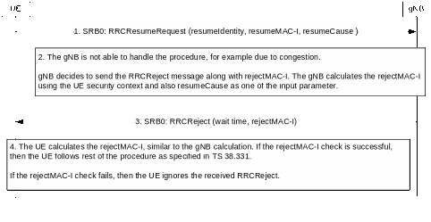
Figure
6.2.2-1: RejectMAC-I calculation during the Resume Request procedure
On
receiving the RRC Reject message from the gNB, the UE calculates the
rejectMAC-I in the same way as the gNB did in step 2. If the
rejectMAC-I check is successful, then the UE follows rest of the
procedure as specified in TS 38.331. If the rejectMAC-I check fails,
then the UE ignores the received RRC Reject message. UE moves to RRC
Idle, deletes the 5G AS context and I-RNTI, and indicates to upper
layer with appropriate cause value for NAS recovery.
NOTE: How the solution
addresses the case when the RRCResumeRequest is sent to a new gNB is
not addressed in the present document.
6.2.3 Evaluation
When UE in the RRC-INACTIVE
state, there are 2 kinds of situation, gNB has the security context,
and gNB does not have the security context.
When the gNB has the security
context, the rejectMAC-I, is the authentication token used for
verification of the authenticity of the gNB by the UE, even though it
is sent using SRB0. Since the gNB and the UE are in possession of the
AS security context during RRC_INACTIVE state, the stored context is
used to calculate the rejectMAC-I. The AS security context, stored in
the UE and in the genuine gNB is not available/revealed to the false
gNB, therefore the false gNB cannot successfully send the RRC Reject
message to the UE, by impersonating as the genuine gNB.
Note
that in the proposed solution the RRC Reject message is sent on SRB0
with minimum impacts to the specification TS 33.501 [7] and RRC
procedure in TS 38.331 [2].
When
the gNB does not have the security context, the UE gets an RRCReject
without MAC-I, it cannot differentiate whether this is a genuine
RRCReject message or a false RRCReject message.
6.3 Solution #3:
Protection of uplink UECapabilityInformation RRC message
6.3.1 Introduction
This
solution addresses the following key issues:
- Key issue #1: security of
unprotected unicast messages.
The
solution provides a mechanism for protection of the uplink RRC
UECapabilityInformation message.
6.3.2 Solution
details
Current
security mechanisms for RRC UECapabilityInformation are listed in
Annex B.1 (Protection of RRC messages) of TS 38.331, which can be
summarized as follows:
(1) The RRC
UECapabilityInformation should not be sent unprotected after AS
security activation.
(2) The RRC
UECapabilityInformation may be sent unprotected before AS security
activation.
Mechanism
#(1) ensures that the RRC UECapabilityInformation cannot be tampered
after AS security activation.
For
mechanism #(2), which is the root cause of the problem, this solution
introduces two recommendations for the system (the network and the
UE):
- The network should not send
RRC UECapabilityEnquiry to the UE before AS security has been
activated.
- When the UE gets an RRC
UECapabilityEnquiry message from a gNB, the UE should first verify
that the AS security has been activated, i.e., an RRC security mode
command procedure has been successfully performed. If the above
verification succeeds, the UE should send corresponding RRC
UECapabilityInformation message to the gNB as a ciphered and
integrity protected message. Else if the above verification fails,
i.e., an RRC security mode command procedure has not been performed
or has failed, the UE should not send RRC UECapabilityInformation
message to the gNB. The UE may send the RRC UECapabilityInformation
message to the gNB later, after AS security has been activated.
However,
if the system (the network and the UE) has to perform the mechanism
#(2), e.g., for early optimization, this solution mandates that the
system supports a recovery mechanism from tampered uplink RRC
UECapabilityInformation message. It means the followings:
- The network should taint the
UE capabilities so that the network (i.e., same gNB/AMF or different
gNB/AMF at handovers) can determine whether those UE capabilities
were received before or after the AS security activation.
- Once a successful security
activation is performed, depending on the security policy, the
network may re-enquire the UE capabilities if they were received
earlier without security protection. To re-enquire the UE
capabilities, the network may send to UE a Boolean flag in AS
SMCommand message, or a HASH of locally stored UE capabilities, or a
new RRC UECapabilityEnquiry message.
6.3.3 Evaluation
NOTE : Evaluation of the
security vulnerabilities for allowing the network to accept
unprotected UECapabilitiesInformation is not addressed in the present
document.
6.4 Solution #4:
Enriched measurement reports
6.4.1 Introduction
This
solution addresses the first security requirement in the following
key issue:
- Key issue #3: network
detection of false base stations (first requirement).
The
solution provides a mechanism for enhancing the detection of false
base stations by enriching the measurement reports from the UE. The
solution is applicable to UEs in RRC_IDLE, RRC_INACTIVE, and
RRC_CONNECTED states.
6.4.2 Solution
details
6.4.2.1 Enrichment of
measurement report
The
UE measurement reports specified in TR 38.331 [2] already contain
several information relevant for the detection of false base
stations, e.g., identifier and received-signal strength information
of the cell. Additionally, TS 38.331 provides support for reporting
of Cell Group Info (CGI_info) which contains information broadcasted
in MIB and SIB1.
In
addition to the existing information, the system should support the
following new information about camped and neighbouring cells to be
included in the measurement report:
- mib_info = hash of the MIB,
which helps in detection of DoS attempts, e.g., cellBarred=barred;
- sib_info = list of {SIB
number, hash of the SIB}, which helps in detection of DoS, fraud, and
subscription identification attempts, e.g.,
ims-EmergencySupport=false, tampered SI-SchedulingInfo, and
useFullResumeID=true;
NOTE 1: The sib_info could
contain at least SIB1 which the UE currently obtains to generate
CGI_info.
NOTE 2: The mib_info is
computed without including the SFN in MIB. It should contain its
corresponding recorded time.
NOTE 3: The sib_info could
contain its corresponding recorded time.
NOTE 4: The network can set
the requesting frequency for CGI info, similar to the ANR frequency
configuration. That is implementation specific.
It
is suggested to reuse the algorithm of SHA256 to calculate the hashes
of MIB/SIBs.
In
addition to the information above which can be transmitted by UEs in
CONNECTED mode, it is also possible to extend the logged
measurements, currently discussed in TS 38.331 for Rel-16, to include
the following information that can help in detecting false base
stations:
- reject_info = information
about REJECTs that the UE had received earlier, which helps in
detection of DoS attempts, e.g., presence of rogue REJECTs;
- signal_info = information
about signal as below, which helps in detection of DoS attempts,
e.g., presence of erratic radio signals:
- just power: signal is not
associated with any normal pilots or reference signals.
- power with just pilots:
signal is associated with normal pilots or reference signals, but
those signals do not provide any readable system information.
- power with pilots and system
info: signal is associated with normal pilots or reference signals
and those signals provide system information, but the system
information is wrong (e.g., inconsistent information, not possible to
access the network according to the information).
The
UE should send the above information to the network only after a
successful AS security mode command procedure.
The
network should verify and compare the above information with what is
expected, e.g., comparing hashes of MIB/SIBs for reported cells with
those of genuine cells using the same hash algorithm used in the UE.
To
verify the hashes of MIB/SIBs reported by the UE in the MR, the gNB
should store the hashes of all broadcasted MIB/SIBs of all cells that
belong to the gNB and records the changed time when the MIB/SIBs are
modified.
6.4.2.2 Verification
of the MIB/SIBs Hashes
When
the serving cell receives a MR/logged MR with hashes of neighbouring
cell MIB/SIBs, the serving cell can report the MR/logged MR to OAM,
then the OAM communicates with the corresponding neighbouring cells
to do the MIB/SIBs hashes verification; the serving cells also can
communicate with the OAM to get the corresponding neighbouring cell's
MIB/SIBs hashes, and verify the reported MIB/SIBs hashes in local.
The communication between OAM and cells are implementation specific.
If
verification fails, e.g., the hashes do not match, the network may
consider it as a factor to detect the presence of the false base
station.
During
handovers, the serving cell may use the above information, i.e., the
MIB/SIBs hashes verification result, to decide whether or not to
attempt handover of the UE to the reported neighbouring cell.
6.4.3 Evaluation
This
solution addresses FBS network detection of Key issue #3. It enhances
FBS detection by enriching the measurement reports from UEs.
A)
Potential impact to RAN radio interface and resource:
1. Regarding hash value
reporting:
- Reporting hashes of system
information is currently not supported. The logged MDT, mobility
history information and CGI reporting procedures could be modified
but that requires additional work.
- Regarding MIB/SIBs reading,
the existing procedures already require UEs to read MIB and SIBs:
- UEs in RRC_IDLE/INACTIVE
state UEs read MIB/SIB1/other interested SIBs of camped cell.
Calculating the hash of these MIB/SIBs is not expected to have a
negative impact on power consumption. However, calculating the hash
of additional SIBs (i.e. SIBs currently not acquired by the UE) will
cause extra power consumption and is not preferred.
- UE in RRC_CONNECTED state
UEs, when configured with CGI reporting, read MIB and SIB1 of
neighbour cells. The existing CGI reporting creates interruptions
whenever the UE needs to tune in to another cell. Too frequent
request of CGI reporting in CONNECTED will not only cause extra power
consumption but will also create frequent interruptions. Those
impacts become much worse if something else than MIB/SIB1 needs to be
acquired. Thus, the scope of CGI reporting (i.e. acquired MIB/SIB1)
is preferred not to be expanded and the procedure should not be
triggered often.
2. Regarding reporting
reject_info and signal_info
- The reporting
RSRP/RSRQ/RSSI/beam level information of SSB or CSI-RS is supported
since Rel-15. And reporting connection establishment failure and
radio link failure is supported in Rel-16. If other information is
required to be reported, additional work will be required.
B)
Potential impact to RAN network interfaces:
- Performing an enriched
measurement report does not have any direct impact to RAN network
interfaces.
- There might be impacts to
RAN network interface depending on the triggering mechanism, e.g. if
triggered by CN or RAN nodes, NGAP and XnAP might be impacted.
However, such impacts are expected to be straightforward and the
overhead introduced can be implementation dependent (out of scope of
3GPP). No impact is foreseen in case the enriched measurements are
triggered by the OAM.
If
false base stations are mobile and portable, in particular, if the
false base station attacks are discontinued in the concerned area at
the time of detection, the network based false base detection may be
limited to post-mortem diagnostics. In these cases, precise detection
may require the network to collect information from many different
UEs.
Reporting
hash of SIBs can detect SIB modification or fake SIB injection
attacks that would typically result in DoS. This solution does not
address DoS launched against UEs by other means (e.g., jamming).
Furthermore, mismatch of hash values is not sufficient for
identifying the root cause of the issue, e.g., whether it is due to
an attack or bit error in reading SIBs.
For
SIB modification or fake SIB injection being successful against the
UEs in the connected mode, if the attacker broadcasts those SIBs with
higher power than those transmitted from the legitimate base
stations, such attacks can be detected with the existing power
measurement.
It
is also possible that a malicious UE may report faked measurements,
which may lead the network to falsely classify a legitimate base
station as a false one, if this problem is not addressed by the
network.
6.5 Solution #5:
Mitigation against the authentication relay attack
6.5.1 Introduction
This
solution addresses key issue #5: Mitigation against the
authentication relay attack, assuming that the victim UE and
malicious UE, as defined in key issue #5, are residing in the same
PLMN.
6.5.2 Solution
details
It
is assumed that the victim UE may be camped to the false base station
FBS. Then the FBS collaborates with another malicious UE through a
private channel. The FBS forwards the NAS message of the victim UE to
the remote malicious UE, and the malicious UE forwards the message to
the remote core network through the remote legitimate base station
gNB. In this case, the solution works as follows:
In
the registration request procedure, the victim UE sends a
registration request message to the AMF through the FBS, the
malicious UE and the gNB. The gNB forwards the registration request
message to the AMF through the N2 interface, which includes the
user's location information reported by the gNB (indicated by
"Location Info-gNB"). The AMF stores the Location Info-gNB.
After the authentication and SMC procedure. The victim UE sends an
UP-link NASmessage, which includes Location Info-UE, to the AMF
through the FBS, the malicious UE and the gNB. The AMF then compares
the Location Info-UE with the Location Info-gNB.
For
the already registered UE, the Location Info-UE should be sent using
the initial NAS message, and can be protected by the initial NAS
message protection mechanism.
In
this solution, the Global Navigation Satellite System (GNSS)
information is used as the Location Info-UE, which is obtained by the
GNSS chip in the ME from the GNSS. For the privacy issue, the user
can manually configure the privacy setting based on the eLCS
procedure to indicate whether the UE is allowed to submit its GNSS
information to the core network. It is assumed the GNSS information
is accurate.
If
the AMF determines that the Location Info-UE and the Location
Info-gNB are consistent, the subsequent procedures are normally
performed.
If
the AMF determines that the Location Info-UE and the Location
Info-gNB are inconsistent, the registration rejection message may be
sent to the UE, where the reason value carried indicates the location
positioning of the UE.
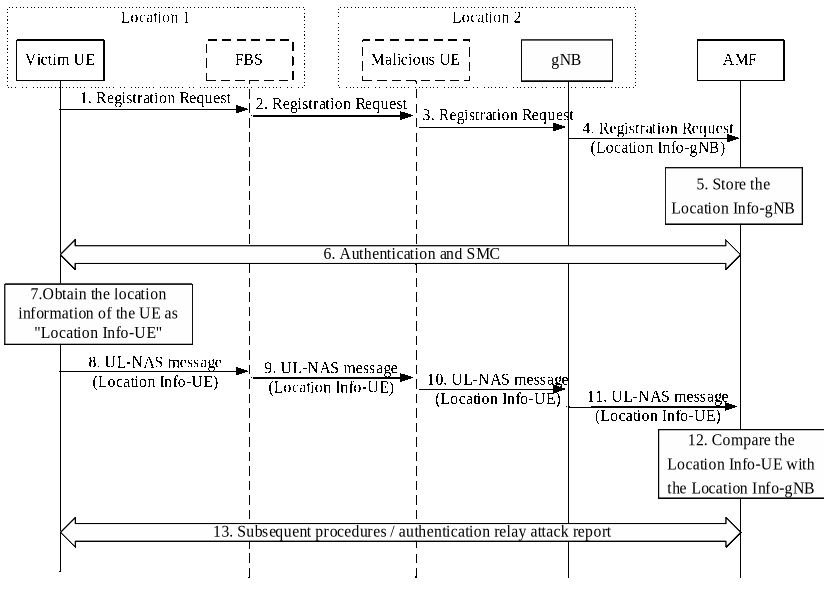
Figure
6.5.2-1: Anti-authentication relay attack procedure
1.
In the registration request procedure, the victim UE sends a
registration request message to the false base station FBS.
2-3.
The FBS forwards the registration request message of the victim UE to
the legitimate base station gNB through the remote malicious UE.
4.
The gNB sends the registration request message to the AMF with the
user's location information reported by the gNB (indicated by
"Location Info-gNB").
5.
The AMF stores the Location Info-gNB.
6.
The AMF initiates authentication procedure and NAS SMC procedure.
7.
If the victim UE decides to enable the anti-authentication relay
attack feature. The victim UE obtains the user's actual location
information (indicated by "Location Info-UE"). The user's
actual location information is the GNSS information obtained by the
GNSS chip in the ME from the GNSS application..
8.
The victim UE sends the Location Info-UE to the FBS in the uplink NAS
message which should be ciphered and integrity protected by the NAS
keys in the current 5G security context. The uplink NAS message
should be NAS Security Mode Complete message or another NAS message
after the NAS SMC completed.
NOTE 1: In case of the UE is
already registered, the Location Info-UE should be sent in the
initial NAS message, and can be protected by the initial NAS message
protection mechanism.
9-11.
The FBS forwards the uplink NAS message to the AMF through the
malicious UE and the gNB.
12.
The AMF obtains the Location Info-UE, and compares the Location
Info-UE with the Location Info-gNB.
13.
If the AMF determines that the Location Info-UE and the Location
Info-gNB are consistent, the subsequent procedures should be
performed. If the AMF determines that the Location Info-UE and the
Location Info-gNB are inconsistent, the authentication relay attack
report message may be sent to the UE with the cause value, which
indicates the location positioning of the UE.
6.5.3 Evaluation
The
solution mitigates the threats of the authentication relay attack by
using the AMF to compare the location information reported by the UE
and the gNB. The user's actual location
information should be the identified with GNSS information. In
addition, based on the eLCS procedure, the UE is allowed to submit
its location to the core network. The privacy issue would be solved
based on the privacy setting, which is agreed by the UE.
In
addition, the UE reports the Location Info-UE through the NAS message
after the authentication and the SMC procedure or the initial NAS
message in case of the UE is already registered. At this time, the
uplink NAS message has been encrypted and integrity protected, and
the initial NAS message has been protected by the initial NAS message
protection mechanism. Therefore, the location information of the UE
cannot be tampered by the false base station.
This
solution only works with UE that has GNSS, and GNSS may be spoofed
and jammed.
Note: Evaluation on privacy
aspects is not addressed in the present document.
6.6 Solution #6:
Avoiding UE connecting to false base station during HO
6.6.1 Introduction
This
solution addresses the security requirement in key issue #3 for
preventing UE from connecting to false base station.
6.6.2 Solution
details
6.6.2.1 Background
Usually,
the 5G RAN HO decision is based on the UE MR (Measurement Report).The
UE executes the signal power measurement of the neighbour cell based
on the SS Block which carries the broadcasted synchronization signal
and MIB signal which is sent without security protection [1] and [2].
Assuming there is a false base station C counterfeiting the system
information of a legitimate base station B. The serving base station
A receives the UE MR which include measurements from C. Base station
A would assume the included information in the UE MR belongs to base
station B and then may decide to handover the UE to B and
consequently the UE instead connects to the false base station C.
Eventually, the handover will fail, as shown in figure 6.6.2.1-1.
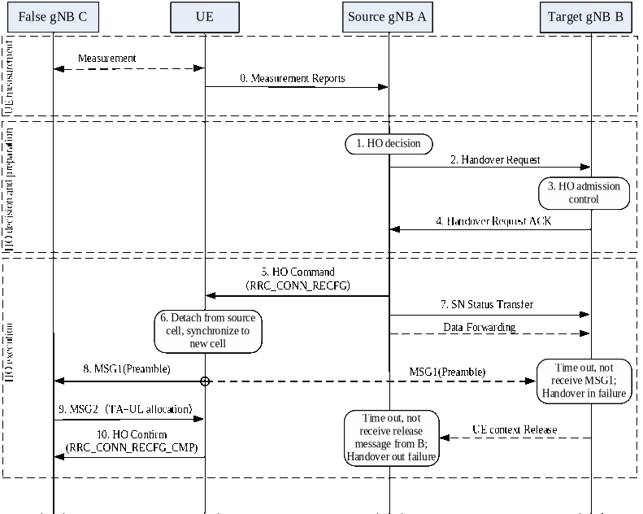
Figure
6.6.2.1-1: HO procedure caused by false base station C
Step
0: The UE reports the measurement report (MR) to the source gNB (A).
Step
1: The source gNB (A) decides the measurement from false gNB C meets
the HO trigger threshold, then the source gNB (A) lookup the NCRT
(neighbour cell relation Table) [16] with the reported PCI (physical
cell identity), and finds the target cell of gNB (B).
Step
2: The source gNB (A) sends HO request to target gNB (B).
Step
3: The target gNB (B) makes the HO admission decision and prepares
radio resource for the UE (e.g. SRB and DRB resource for the UE).
Step
4: The target gNB (B) responds with the HO request ACK message
containing all the prepared RRC configuration information.
Step
5: The source gNB (A) sends HO command to indicate the UE to execute
the HO to the target cell.
Step
6: The UE detaches from the source cell.
Step
7: The UE tries to synchronize and camp on the target cell based on
the broadcasted SSB signal (including the synchronization signal and
MIB signal) and SIB1. Because the SSB signal and SIB1 are not
security protected, the UE cannot verify the authenticity of these
message. The false gNB can copy the SSB signal and SIB1of the target
cell, and sends that with stronger power. Finally, the UE camps on
the false cell.
Step
8: The UE sends MSG1 to the camped cell in clear.
Step
9: The false cell responds with MSG2 in plaintext, instructing the UE
to send the next uplink message using the dedicated UL allocation
resource.
Step
10: The UE sends the HO confirm message using the dedicated UL
allocation resource. Although, HO Confirm message is protected using
the AS security keys with the real target gNB, the false base station
does not need to send any confirmation or acknowledgement to the UE
in order for the UE to validate that the receiving base station is
the real base station which holds the same AS security context.
The
real target cell does not receive the HO confirm message from the UE,
then thinks the HO fails. And the source cell does not receive the UE
context release message from target cell, then decides the HO
failure.
For
the UE, the false cell does not have the UE security context, the UE
would find RLF at later time. But the UE has camped on the false
cell, the false cell can launch some attacks to the UE, e.g. sending
spoofing SIBs with false cell reselection blocklisted to the UE.
To
avoid this HO procedure and the possibility for UE connecting to
false base station during HO, this solution introduces a second
measurement based on a specific CSI-RS (Channel State Information
Reference Signal) [5] assigned by the target gNB to the UE.
6.6.2.2 Procedure
6.6.2.2.0 General
There
are two options for this solution as follows:
Option
A: Always On feature: In this option the proposed solution is always
on and activated at the source gNB; thus it is on all gNBs.
Option
B: On demand feature: The source gNB turns this feature on to a
specific target gNB when the number of handover failures to this
target gNB exceed a specific threshold, i.e., when the source gNB
suspect the presence of a false base station in the area, it
automatically turns this feature on.
6.6.2.2.1 Always on
Feature
The
target gNB B assigns a specific CSI-RS to the UE during the
preparation phase, and carries the CSI-RS information in the HO
request ACK message. The source gNB A indicates the UE to do second
measurement based on the dedicated CSI-RS information. Only when the
second UE MR meets the HO trigger condition, then the source gNB A
would indicate the UE to do the HO execution.
Because
the false gNB C does not know the dedicated CSI-RS information in
advance, therefore the second MR reported by the UE is measured with
the real reference signal of the target gNB B.
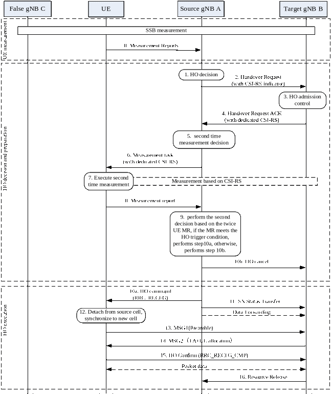
Figure
6.6.2.2.1-1: HO procedure with second measurement and HO decision
The
source gNB (A) should support to turn on/off this feature according
to the network circumstances.
Step
2: When the local configuration in the source gNB indicates that the
feature of second measurement is enabled, the source gNB (A) sends HO
request with a new indicator to request the target gNB to prepare a
specific CSI-RS for the UE.
Step
3: The target gNB (B) performs admission control and prepares basic
RRC configuration information for the UE, including a dedicated
CSI-RS information.
Step
4: The target gNB (B) respond with the HO request ACK message
containing all the prepared RRC configuration information (including
the dedicated CSI-RS information).
Step5:
When the source gNB (A) receives the CSI-RS information in the
Handover request ACK, and the feature is turned on, the source gNB
decides to request the UE for a second time measurement based on the
specified CSI-RS information.
Step
6: The source gNB (A) sends a measurement task including the CSI-RS
information to the UE while being protected with RRC security
context.
Step
7: The UE executes a second measurement of the dedicated CSI-RS
signal indicated in the measurement task.
Step
8: The UE reports the second MR to the source gNB (A).
Step
9: Based on the second MR, the source gNB (A) decides whether or not
to continue the HO. If the second MR meets the HO trigger threshold,
that means the real reference signal power of the target cell is
strong enough, the source gNB A sends the HO command to indicate the
UE to execute the HO to the target cell. Otherwise, the source gNB A
sends HO cancel to the target gNB B to stop the HO procedure.
6.6.2.2.2 On demand
Feature
The
details of the solution in this option is the same as in option A
with the difference that this solution is turned on when needed,
i.e., on demand. The solution is turned on dynamically by a source
gNB.
NOTE: It is implementation
specific for the source gNB to trigger and turn on this solution. For
example, the source gNB may turn on according to the FBS detection
report.
6.6.3 Evaluation
The
solution addresses Key Issue #3 to avoid the UE connecting to FBS
during Handover procedure.
CSI-RS
is used for the UE to do measurement, it is a UE specific parameter
which is assigned by the target RAN, and is different for each UE. In
the solution, CSI-RS is provided to the UE in a ciphered and
integrity protected RRC Measurement Task message, so, the FBS cannot
know this parameter, and cannot forge the right CSI-RS. Thus, the UE
will measure true signalling of the target RAN, and will not initiate
wrong HO caused by forged cell of FBS.
The
solution requires new signalling overhead before Handover, but it can
be configured on-demand. If the RAN suspects that there is FBS, then,
the feature is on. If not, the feature can be off.
Note 1: The solution does not
mitigate dumb radio repeater attacks.
Note 2: Further evaluation is
needed.
6.7 Solution #7:
Verification of authenticity of the cell
6.7.1 Introduction
This solution#7, address the
key Issue#2 "Security Protection of system information" and
the following security and privacy areas:
#1 DoS attack on UE: attempts
to hinder the UEs' access to the network.
#2 DoS attack on network:
attempts to hinder the network's ability to provide services to the
UEs.
A
cell periodically broadcasts synchronization signals and system
information (SI). UE detects a cell based on the synchronization
signals. If the signal quality of detected cell is above a defined
threshold then UE determines whether the cell is authentic or not, to
camp on it. A cell is authentic, if the authenticity verification of
the system information received from the cell is successful. This
solution does not verify the authenticity of the cell during initial
registration procedure.
6.7.2 Solution
details
6.7.2.1 System
Information verification using Digital Signatures
This
solution is applicable only for verification of authenticity of the
cell during RRC_IDLE mode and RRC_INACTIVE mode cell reselection.
This solution is not applicable for cell authenticity verification
during initial Registration procedure.
In
order to enable the UE to validate the authenticity of received
system information, the NR digitally signs the broadcasted system
information as shown in Figure 6.7.2.1-1. System information to be
broadcasted, Private security key (K-SIGPrivate) and Time
Counter are input to security algorithm to generate the digital
signature. The input also contains downlink frequency and physical
cell ID of the cell that is broadcasting the SI message, which
ensures that any replay of the SI message in a different
frequency/PCI is detected by the UE. The generated DS together with
some least significant bits of Time Counter is added to the system
information before transmitting over the air. K-SIGPrivate
is specific to the Tracking area. The private key (K-SIGPrivate)
is provisioned in the gNB by the MNO. The public K-SIGPublic
key and its lifetime is provisioned by the core network to the UE,
when performing location update procedure, as shown in Figure
6.7.2.1-2. Time Counter is maintained based on UTC time (number of
UTC seconds in 10 ms units since 00:00:00 on Gregorian calendar date
1 January 1900 (midnight between Sunday, December 31, 1899 and
Monday, January 1, 1900), similar to the mechanism used in ProSe
Discovery protection TS 33.303) and can be units of milliseconds or
seconds or minutes. The gNB obtains a value for a UTC-based counter
associated with a transmission slot based on UTC time. The UE may
obtain UTC time from any sources available, e.g. the RAN (via SIB, as
in LTE via SIB16), NITZ, NTP, GPS (depending on which is available).
The Time Counter input to the security algorithm is the value of
counter corresponding to time slot in which system information is
transmitted. The usage of Time Counter ensures that received system
information cannot be replayed. There can be differences in the Time
Counter maintained in the UE and the AN because of different UTC
source or implementation errors. To take care of these errors least
significant bits of Time Counter are also transmitted along with
system information.
Note: The impact of new
signature inputs is not addressed in the present document.
In
addition, the along with the public key, the AMF provides the UE with
a MAX_OFFSET parameter. The UE stores the MAX_OFFSET parameter. The
UE sets a clock which is used for authenticity verification to the
value of CURRENT_TIME, obtained from the SIB (as LTE SIB16 provides
the timeReferenceInfo which is time reference with 0.25 us
granularity). Current Time (maintained at the UE) provides the UE
with the time at the base station, and along with the Max Offset
parameter, is used to ensure that the time the UE associates with the
MIB/SIB transmission slot is reasonably close to the real time. Max
Offset indicates how close the time associated with the discovery
slot needs to be to the time provided by the base station. The
MAX_OFFSET parameter is used to limit the ability of an attacker to
successfully replay digitally signed MIBs and SIBs for later use.
This is achieved by using MAX_OFFSET as a maximum difference between
the UTC-based counter associated with the discovery slot and the
CURRENT TIME held by the UE (at 0.25 us granularity).
On
receiving the system information the UE verifies the digital
signature. The system information with digital signature received,
public security key (K-SIGPublic) and Time Counter of the
time slot in which system information is received are used to check
the authenticity of the SI. If authenticity verification is
successful, then the system information is authentic and the UE
considers the cell as authentic.
The
size of the digital signature leads to increase in the signalling
overhead. In order to reduce the overhead, digital signature can be
generated for multiple system information together instead of
generating the digital signature for each system information. System
information is periodically broadcasted, in order to reduce the
overhead; protection can be applied once every 'N' period instead of
every period. Mechanisms to reduce the overhead are detailed in the
clause 6.7.2.3 of the present document.
NOTE 2: It is not addressed in
the present document whether the K-SIG-Priv of all gNBs within a TA
are same or different. The possible key leakage if the same
K-SIG-Priv is shared by all eNBs needs to be considered

Figure
6.7.2.1-1: System Information verification using Digital Signatures
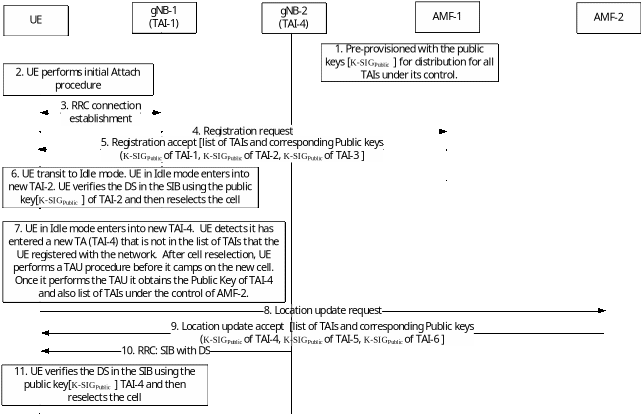
Figure
6.7.2.1-2: Provisioning of Public Keys to the UE
NOTE 3: It is not addressed in
the present document how the UE handles location update reject
message from a false base station
6.7.2.2 System
Information verification using Identity Based Cryptography
The
network provisions UEs and NR with a set of credentials for Elliptic
Curve-Based Certificateless Signatures for Identity-Based Encryption
(ECCSI), as defined in IETF RFC 6507 [9] along with the public key of
the CN. Furthermore, UEs are provisioned with the Public Validation
Token (PVT) specific to each cell and the NR are configured with the
Secret Signing Key (SSK) associated with its cell identity. In order
to verify the authenticity of the cell, the NR act as "signer"
and the UE act as the "verifier" (according to the
definitions in RFC 6507). The NR uses SSK associated to the cell to
sign the system information, and the UE uses the public key of the CN
and the cell ID specific PVT to verify the signature.
As
mentioned in the clause 6.7.2.1, the time counter is used as the
input for signature generation and also to reduce the overhead;
digital signature can be generated for multiple system information
together and protection can be applied once every 'N' period instead
of every period. Mechanisms to reduce the overhead are detailed in
the clause 6.7.2.3 of the present document.
6.7.2.3 Optimization
of SI verification using the other SI
5G
SI is divided into minimum SI and other SI. The other SI may either
be broadcast, or provided in a dedicated manner by the gNB, triggered
either by the network or upon request from the UE [2]. The
authenticity verification information can be classified into the
other SI. The gNB generate the digital signature with the minimum SI
broadcasted, Private security key (K-SIGPrivate) and Time
Counter as input (as shown in Figure 6.7.2.3-1) and provides the
digital signature in the other SI (as a separate SI) either
periodically or upon request from the UE (as shown in Figure
6.7.2.3-2). As the UE needs to verify the authenticity of the gNB,
only signing of the minimum SI is performed in order to reduce the
overhead in the UE and in the gNB.
Figure
6.7.2.3-1: Cell authenticity verification using other SI
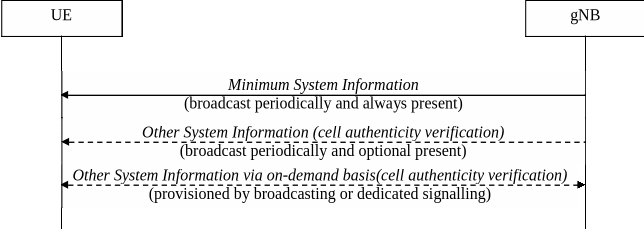
Figure
6.7.2.3-2: Transmission of cell authenticity verification using other
SI
6.7.2.4 Capability
negotiation
The
UE and the VPLMN require a secure negotiation mechanism so that both
have a common understanding of where and which SI messages are
protected. This solution proposes the NAS layer based negotiation as
shown in the Figure 6.7.2.4-1.
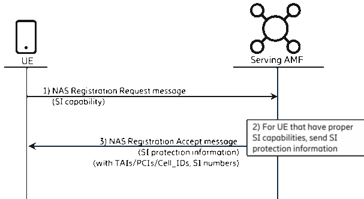
Figure
6.7.2.4-1: SI protection capability negotiation
This
proposed negotiation works as below:
1) The UE indicates its
capability to verify SI signatures to the AMF in a Registration
Request message.
2) The AMF uses the UE's
capability to decide whether or not to give SI protection information
to the UE.
3) For capable UEs, the AMF
sends the following SI protection information in a Registration
Accept message:
Note: The feasibility of
including these parameters in this step is not addressed in the
present document.
3.1) Cells for which the
broadcast SI should have signature, e.g., TAIs, PCIs, and Cell IDs.
It is proposed that at least the TAIs are included.
3.2) SI numbers which should
be covered by the signature. It is proposed that at least the minimal
SI (i.e., MIB and SIB1) should always be covered.
The
sending of SI protection information from the AMF to the UE in the
Registration Accept message covers both types of Registration
Request, i.e., the initial registration and the mobility registration
update. It also covers handovers with AMF change because the mobility
registration update follows a handover.
6.7.3 Evaluation
This
solution can protect the broadcast message in any RRC mode, UE can
verify the authenticity of SIB messages after the
public keys are being provisioned to the UE.
UE
cannot verify the SIB message during the initial registration
procedure.
The
key provision procedure is leveraging the legacy NAS signalling and
no extra signalling is needed.
Given
the fact that replay attack cannot being 100 % eliminated, the
method given by this solution helps to mitigate the reply attack.
Note: Further evaluation
details are needed.
6.7.4 Assessment
using clause A.3
6.7.4.1 UE aspects
Based
on threshold of detected cell's signal, UE determines whether the
cell is authentic or not, to camp on it. A cell is authentic, if the
authenticity verification of the system information received from the
cell is successful.
Verification
using Digital signatures:
- On receiving the system
information the UE verifies the digital signature. The system
information with digital signature received, public security key
(K-SIGPublic) and Time Counter of the time slot in which
system information is received are used to check the authenticity of
the SI. If authenticity verification is successful, then the system
information is authentic and the UE considers the cell as authentic.
- The UE may obtain UTC time
from any sources available, e.g. the RAN (via SIB, as in LTE via
SIB16), NITZ, NTP, GPS (depending on which is available).
- The Time Counter input to
the security algorithm is the value of counter corresponding to time
slot in which system information is transmitted.
Identity
Based Cryptography for Digital Signature Verification:
- The UE act as the "verifier"
(according to the definitions in RFC 6507 [9]).
- UE uses the public key of
the CN and the cell ID specific PVT to verify the signature.
Reduce
the overhead using other SI:
- Upon UE's request, the other
SI may either be broadcast, or provided in a dedicated manner by the
gNB.
- The UE checks that the
timestamp is within an acceptable time-window before it verifies the
signature to prevent replay attacks.
6.7.4.2 UE actions
upon detection of invalid signature
If the signal quality of
detected cell is above a defined threshold then UE determines whether
the cell is authentic or not, to camp on it. If the verification of
the signature fails at UE, then the UE considers system information
is not authentic and therefore the cell is not authentic. The UE
initiates cell re-selection procedure.
6.7.4.3 Threats that
are mitigated by signed SI messages
This solution address the key
Issue#2 "Security Protection of system information" and the
following security and privacy areas:
#1 DoS attack on UE: attempts
to hinder the UEs' access to the network.
#2 DoS attack on network:
attempts to hinder the network's ability to provide services to the
UEs.
This
solution is applicable only for verification of authenticity of the
cell during RRC_IDLE mode and RRC_INACTIVE mode cell reselection.
Replay
attempts that re-transmit a captured SI message from one
frequency/PCI to another will be detected. The attacker's cell is
forced to operate in same frequency/PCI and compete with the genuine
cell. This is unsuitable for the attacker because the UE will not
stick to the attacker's cell.
6.7.4.4 Threats that
are not mitigated by signed SI messages
This
solution is not applicable for cell authenticity verification during
initial Registration procedure
6.7.4.5 Provisioning
of keys
For Digital Signatures:
1) K-SIGPrivate is
specific to the Tracking area. The private key (K-SIGPrivate)
is provisioned in the gNB by the MNO.
2) The public K-SIGPublic
key and its lifetime is provisioned by the core network to the UE,
when performing location update procedure, as shown in Figure
6.7.2.1-2.
For Identity based
cryptography:
1) The network provisions UEs
and NR with a set of credentials for Elliptic Curve-Based
Certificateless Signatures for Identity-Based Encryption (ECCSI), as
defined in IETF RFC 6507 [9] along with the public key of the CN.
2) UEs are provisioned with
the Public Validation Token (PVT) specific to each cell and the NR
are configured with the Secret Signing Key (SSK) associated with its
cell identity.
6.7.4.6 RAN aspects
A
cell periodically broadcasts synchronization signals and system
information (SI).
Verification
using Digital signatures:
1) NR digitally signs the
broadcasted system information as shown in Figure 6.7.2.1-1.
2) System information to be
broadcasted, Private security key (K-SIGPrivate) and Time Counter are
input to security algorithm to generate the digital signature.
3) The generated DS together
with some least significant bits of Time Counter is added to the
system information before transmitting over the air.
4) The gNB obtains a value for
a UTC-based counter associated with a transmission slot based on UTC
time.
5) System information is
periodically broadcasted, in order to reduce the overhead; protection
can be applied once every 'N' period instead of every period.
Mechanisms to reduce the overhead are detailed in the clause 6.7.2.3
of the present document.
Verification
using Identity Based Cryptography:
1) The network provisions UEs
and NR with a set of credentials for Elliptic Curve-Based
Certificateless Signatures for Identity-Based Encryption (ECCSI), as
defined in IETF RFC 6507 [9] along with the public key of the CN.
2) NR are configured with the
Secret Signing Key (SSK) associated with its cell identity.
3) In order to verify the
authenticity of the cell, the NR act as "signer" (according
to the definitions in RFC 6507).
4) The NR uses SSK associated
to the cell to sign the system information
Other
SI Optimization:
1) The gNB generate the
digital signature with the minimum SI broadcasted, Private security
key (K-SIGPrivate) and Time Counter as input (as shown in Figure
6.7.2.3-1) and provides the digital signature in the other SI (as a
separate SI) either periodically or upon request from the UE (as
shown in Figure 6.7.2.3-2).
2) As the UE needs to verify
the authenticity of the gNB, only signing of the minimum SI is
performed in order to reduce the overhead in the UE and in the gNB
6.7.4.7 VPLMN aspects
Verification
using Digital signatures:
1) The public K-SIGPublic key
and its lifetime is provisioned by the Serving network to the UE,
when performing location update procedure, as shown in Figure
6.7.2.1-2.
Verification
using Identity Based Cryptography:
1) The serving network
provisions UEs and NR with a set of credentials for Elliptic
Curve-Based Certificateless Signatures for Identity-Based Encryption
(ECCSI), as defined in IETF RFC 6507 [9] along with the public key of
the CN.
2) Furthermore, UEs are
provisioned with the Public Validation Token (PVT) specific to each
cell and the NR are configured with the Secret Signing Key (SSK)
associated with its cell identity.
Other
SI Optimization:
1) The gNB generate the
digital signature with the minimum SI broadcasted, Private security
key (K-SIGPrivate) and Time Counter as input (as shown in Figure
6.7.2.3-1) and provides the digital signature in the other SI (as a
separate SI) either periodically or upon request from the UE (as
shown in Figure 6.7.2.3-2).
2) As the UE needs to verify
the authenticity of the gNB, only signing of the minimum SI is
performed in order to reduce the overhead in the UE and in the gNB.
6.7.4.8 HPLMN aspects
No
HPLMN aspects/impacts
6.7.4.9 Network
sharing aspects
No
Network sharing aspects/impacts
Note: Network sharing aspects
are not addressed in the present document.
6.7.4.10 Roaming
aspects
No roaming aspects identified.
6.7.4.11 Regulatory
aspects
The
solution is about digital signature and can be optional for UE to
verify during Idle or Inactive state, therefore no Regulatory aspects
identified.
6.7.4.12 Signature
schemes
There
could be one or more signature schemes like:
- Profile 0 (null-scheme)
which means that there is no signature.
- Profile A (ECCSI) which
means Elliptic Curve-Based Certificateless Signatures for
Identity-Based Encryption (ECCSI), as defined in IETF RFC 6507 [9].
- Profile B (ECDSA) which
means using a widely standardized signature scheme called the ECDSA
(Elliptic Curve Digital Signature Algorithm).
6.7.4.13 Signature
length
The
signature length depends upon the signature scheme and its domain
parameters. For example, when using a null-scheme which has no
signature, the length would be 0. And, when using an ECDSA signature
that provides 128 bit security level, the length would be a minimum
of 512 bits. In any case, the length is deterministic.
6.7.4.14 Resistance
against Quantum Computing
None
identified as of now.
6.8 Solution #8:
Network detection of nearby false base stations from call statistics
and measurements
6.8.1 Introduction
This
solution addresses Key Issue #3: Network detection of nearby false
base stations
When
false base stations are present in a PLMN network, most often they
will be broadcasting MIB and SIB messages copied from one of the real
PLMN base stations. Thus, a UE, unsuspectingly might consider this as
a real base station and based on the active or idle state of the UE.
1) If the UE is active, UE
will consider the false base station as a potential target for
handover, and if mobility conditions are correct, will attempt to do
handover to it.
2) If the UE is Idle, it will
do cell reselection and start listening to broadcast messages and
Paging.
The solution here particularly
focusses on the UEs in active state. The active UEs which does
handover from real base station to false base station will fail, and
the UE will select a new target cell. Because the UE subsequently
gets connected to a new target, even if the handover once failed, so
far, the information gathered from this procedure is usually ignored.
6.8.2 Solution
details
6.8.2.1 Detection of
false base Stations from Active UE Measurement report
If
the UE is in active mode, during the handover preparation phase it is
possible that the UE measured and selected a false base station as a
handover target. When UE measurement reports are received by the
source base station, when handover thresholds are crossed, the source
base station tries to establish X2/Xn links to the reported target
Cell IDs. Looking at the configuration data of neighbour Cell IDs in
the source base station, the source base station finds IP address of
the target cells and tries to establish X2/Xn links for handover. But
this X2/Xn link set up will fail, if the target Cell ID reported by
the UE happens to be a false base station.
Here
a serving base station can conclude that, if the Cell ID reported by
the UE in its measurement report as one of the strong neighbour
cells, but if such a neighbour cell is absent in its configuration
data base, or if the serving base station fails to establish X2/Xn
links with the reported neighbour, the target cell is not part of the
PLMN network. The serving base station can make the determination
that the reported Cell ID does not belong to its PLMN network.
6.8.2.2 Detection of
false base stations from duplicate Cell IDs in Active UE Measurement
report
It
is also possible that a false base station copies the Cell ID
belonging to a real Cell and then operate in very close proximity to
it, broadcasting the real Cell ID. In this case the UE will report
two measurements for the same Cell ID with different values, since
the UE is detecting and measuring two transmitters, which will differ
in power at least very slightly.
The
serving base station can detect the operation of a duplicate false
base station from the duplicate Cell IDs from the measurement report
of multiple UEs. But it is difficult for a serving base station to
detect which Cell ID, as measured by the UE in the measurement report
belongs to a genuine base station of the PLMN and which one is false.
Note:
It is not addressed in the present document how a serving base
station resolves duplicate Cell IDs as genuine vs false.
6.8.3 Evaluation
This
solution does not require any changes to the UE so will not need new
UEs to enable the service.
This
solution uses the servicing base station to detect that a false base
station is present within a cell which then can be used to alert the
operational teams who manage the serving network. The way in which
the operational team locate and mitigate the False Base Station is
outside the scope of this solution.
This
solution will not prevent the UE from camping on a false base
station, however it does not suffer from service interruptions due to
incorrectly marking genuine base stations as false base stations.
6.9 Solution #9:
Using symmetric algorithm with assistance of USIM and home network
6.9.1 Introduction
6.9.1.1 General
This
solution address key issue #1 "Security of unprotected unicast
messages" and key issue #2 "Security Protection of system
information".
The
idea of this solution is that serving network dynamically provisions
keys of gNBs to the ME encrypted with assistance of home network,
which cannot be decrypted by the ME, and gNB uses symmetric algorithm
to generate a 32-bit MAC-I for the radio signaling, then the ME
verify the MAC-I with assistance of USIM. The concept of the solution
is highlighted as following:
- Information for radio
signaling authenticity is provisioned between the serving network and
the ME;
- The provisioned information
is encrypted and cannot be decrypted by the ME;
- The decryption of the
provisioned information can only be done by USIM;
- The storage of encryption
key in the USIM should have same security requirement as Long Term
Key (LTK);
- The encryption key and the
provisioned information are periodically changed.
- The ME sends provisioned
information and radio signaling to the USIM for verification.
6.9.1.2 Mitigate
replayed broadcast attack
The
network integrity protects broadcast messages, e.g. MIB, SIBs,
warning messages, etc., together with the DL ARFCN. When the UE camps
on a cell of a gNB, the serving network only provisions a limited
number of keys to the USIM, which makes the UE be able to only handle
messages sent by a limited number of gNBs. The area covered by those
gNBs called protection area (PA), c.f. sub-clause 6.9.2.2.2.
When
the attacker has captured a message broadcasted by a cell in a PA,
the attacker can only impersonate the cell to broadcast the unchanged
message using the same DL ARFCN to a UE in the same PA. This makes
the attack difficult and localized, or easy to be detected by
network. When the UE tries to camp on the false cell due to receiving
a replayed SI message, the UE will detect that the cell is a false
cell using the security procedure of the unicast messages as
described in sub-clause 6.9.2.3.2, and then re-select another cell to
camp on.
Broadcasting
the captured warning message in the same PA may also be a threat. It
is recommended that the warning message includes information of time
and area to avoid the threat (i.e. application layer replay
protection solution).
6.9.2 Solution
details
6.9.2.1 Framework
6.9.2.1.1 General
Following
figure shows the 4 stages of the solution - Protection Key Agreement
(PKA) procedure, Protection Key Transfer (PKT) procedure, Protection
Area Information Provisioning (PAIP) procedure, and Cell Authenticity
procedure, wherein the stage 1 and stage 2 are executed together,
i.e. stage 2 always follows stage1:
Figure
6.9.2.1.1-1: Four stages of cell authenticity with symmetric
algorithm
The
protection key (CKp) agreed between the home network and the USIM
should have the same security requirement as Long-Term Key (LTK),
which means the USIM should prevent reading out the CKp that used to
encrypt the provisioned information (e.g. keys of gNBs).
The
serving network provisions protection area (PA) information to the
ME, which includes keys that the gNBs uses to integrity protect the
radio signaling. The keys in the PA information are encrypted by the
CKp and can only be decrypted by the USIM. The ME sends the
protection area information and the radio signaling to the USIM for
cell authenticity. The CKp and the keys used by the gNBs should be
updated periodically, so that they will be useless when they have
been cracked.
This
solution can also provide capability to encrypt sensitive information
in the radio signaling before 5G security context is active.
6.9.2.1.2 Principle
of dynamic provisioning
The
following figure shows the principle of dynamic information
provisioning:
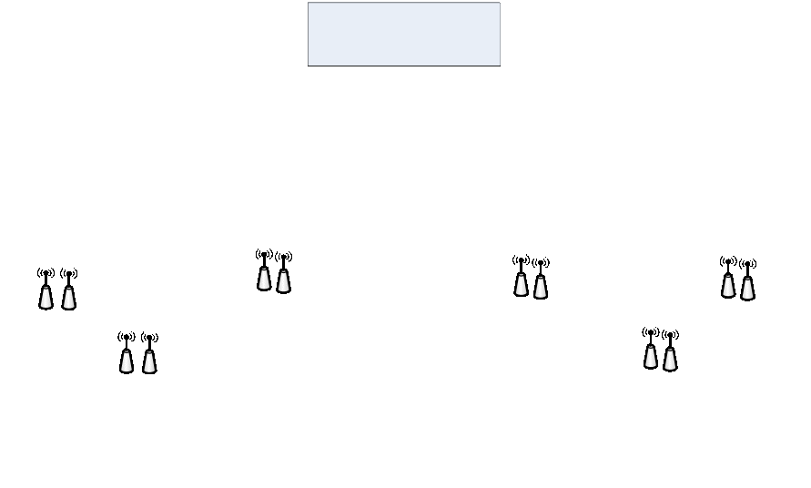
Figure
6.9.2.1.2-1: Principle of dynamic information provisioning to ME
6.9.2.2 Provisioning
6.9.2.2.1 Protection
Key Agreement (PKA) and Protection Key Transfer (PKT) procedure
Pre-condition:
- For roaming case, the N32
interface between the HPLMN and VPLMN are integrity, confidentiality,
and replay protected.
The
Protection Key Agreement (PKA) procedure is done during registration
procedure, which combined with Protection Key Transfer (PKT)
procedure.
Following
figure illustrates the PKA combined with PKT procedure:
Figure
6.9.2.2.2-1: PKA procedure combined with PKT procedure
1. The
UE sends a Registration Request message to the serving network. If
the UE decides to change protection key (CKp), the UE may include a
flag for key agreement in the Registration Request.
2. In
case of initial registration procedure, or, if the flag is received,
the AMF/SEAF should initiate Protection Key Transfer (PKT) procedure
by sending UE Protection Key Transfer Request message to the UDM. In
case of authentication or re-authentication is needed, the UE
Protection Key Transfer Request message is UE Authentication Request
message, and if the flag is received, the AMF/SEAF should include the
flag in the UE Authentication Request message.
3. In
case of authentication with SUCI, or if the flag is received, or if
the UDM decides to refresh the CKp during authentication procedure
based on local policy, the UDM should generate a CKp based on the
user's long term key and a random NONCE.
4. The
UDM returns the random NONCE and the CKp to the AMF/SEAF to finish
the PKT procedure. The AMF/SEAF should report the CKp to the
Anti-False-Base-station Function (AFBF) (e.g. in OAM platform or is a
dedicate network function), so the AFBF can computes EKRBS
by encrypting the KRBS with the CKp on demand.
5. If
the NONCE and the CKp are received, the AMF/SEAF sends a Registration
Accept (NONCE) message to the UE.
6. If
the NONCE is received and the UE supports Anti-False-Base-Station
(AFBS), the ME should initiate Key Initiation Procedure with the USIM
by sending the NONCE to the USIM.
7. The
USIM computes CKp based on the long-term key as well as the received
NONCE as same as UDM does, and stores the CKp. The USIM should make
sure the CKp cannot be read out.
8. The
USIM returns an indication to the ME after CKp has been generated.
NOTE: If the protection key
is updated, the Protection Area Information Provisioning (PAIP)
procedure as described in sub-clause 6.9.2.2.3 should be performed
combined with the PKA and PKT procedure.
6.9.2.2.2 Protection
area
In
order to reduce the encrypted keys provisioned to the ME, a group of
gNBs can share a root key (i.e. 256-bit KRBS) that used
for deriving key per gNB (i.e. 256-bit KBS) for base
station protection, hence the serving network can just provision the
encrypted root keys of groups in the PA to the ME. The group is
called Share Root Key Group (SRKG). Each gNB is included in one and
only one SRKG. Each SRKG is identified by a Group Key Identifier
(i.e. 24-bit bsGKI), each gNB in a SRKG is identified by a Group Node
Identifier (i.e. 8-bit bsGNI).
Each
SRKG is included in one or more PAs, and each of those PAs includes
the full SRKG. The following figure illustrates the relationship
between SRKG and protection area (PA).
Figure
6.9.2.2.2-1: Relationship between shared root key group (SRKG) and
protection area (PA)
Any
registration area (RA) is fully covered by one and only one PA, so
that when UE performs registration procedure, the serving network can
provision encrypted keys of the PA to the ME. The following figure
illustrates the relationship between registration area (RA) and
protection area (PA).
Figure
6.9.2.2.2-2: Relationship between registration area (RA) and
protection area (PA)
During
registration procedure (initial, mobility, or periodic) or other
initial NAS message handling, the AMF should provide the information
of the protection area, which includes a list of bsGKI, corresponding
encrypted root keys, and corresponding expiry time, to the ME. The ME
should store the protection area information. Only the USIM can
de-conceal the encrypted root keys. The expiry time is used to avoid
a false base station, who cracks a KBS of a gNB, to cheat
the UE after key expiration. The expiry time should be short enough
to make the key cracking impossible in time.
The
serving network should change the root key of a SRKG before
expiration. In order to improve performance, a PA should include
those gNBs that adjacent to the tracking area that fully covered by
the PA, so that the UE can have protection information of every
neighbour gNBs when it is at the edge of a tracking area.
The
PA should not be too large. It will be difficult to mitigate the
false base station attack based on replayed broadcast radio
signalling if the PA is too large.
6.9.2.2.3 Protection
Area Information Provisioning (PAIP) procedure
Pre-conditions:
1. The serving network
provides the bsGKI and bsGNI to the corresponding gNB, e.g., via OAM
platform or a dedicated network function.
2. The serving network manages
root keys and related information for the SRKGs, e.g., on OAM
platform or a dedicated network function. The serving network derives
KBS based on the KRBS, bsGKI, and bsGNI for
each gNB as follow:
KBS
= HMAC-SHA-256 (KRBS, <bsGKI, bsGNI>)
The combination of <bsGKI,
bsGNI> is a 32-bit value. The serving network also has provided
the KBS to the corresponding gNB. In order to make sure
that different gNB has different KBS, the combination of
<bsGKI, bsGNI> should be unique on each gNB.
Following figure illustrates
the initial shared key provisioning procedure between UE and the
serving network.
Figure
6.9.2.2.3-1: Protection Area Information Provisioning (PAIP)
procedure
0. The protection key (CKp)
has been transferred from hone network to the serving network during
Protection Key Transfer (PKT) procedure.
1. The UE sends a Registration
Request message to the AMF/SEAF. This message may also trigger the
PKA and PKT procedure as described in sub-clause 6.9.2.2.1.
2. If the AMF/SEAF supports
Anti-False-Base-Station (AFBS), the AMF/SEAF should obtain the PA
information, i.e. a list of {bsGKI, EKRBS, expiry time}
associated with the PA that covers the tracking area that the UE
resides in. The EKRBS is encrypted KRBS based
on the CKp, the expiry time indicates that the EKRBS will
have been changed after that.
3. The AMF/SEAF sends
Registration Accept (PA information) to the UE.
4. If the ME supports AFBS,
the ME stores the received PA information.
NOTE: The procedure also can
be triggered by other initial NAS message, if the step 1 is not
registration request, the step 4 can be another DL NAS message, e.g.
UE Configuration Update.
6.9.2.3 Authenticity
6.9.2.3.1 Security
procedure for broadcast messages
The
following figure illustrates the security procedure for broadcast
message:
Figure
6.9.2.3.1-1: Broadcast message protection procedure
1. The gNB decides to
broadcast a message (e.g. MIB or SI) via a cell, the message should
include <bsGKI, bsGNI>. If the length of message plus the
length of DL_ARFCN is larger than 32 BYTES, the gNB generates a
HASHNW as following:
HASHNW
= SHA-256 (DL ARFCN || message)
The gNB then computes a
32-bit MAC-I based on the KBS, as well as the
concatenation of DL_ARFCN and message (length <= 32 BYTES) or the
HASHNW (length > 32 BYTES).
2. The gNB broadcasts out the
message along with the MAC-I.
3. The ME received the message
including a <bsGKI, bsGNI> and a MAC-I via a cell. The ME
checks whether the bsGKI exists in the protection area information.
If the check fails, then the ME marks the cell as suspect cell in
cache. If the check success, then continues with step 4.
NOTE 1: The UE may lose
contact with network for a while and move to another PA, in this
case, all the cells around the UE are genuine cells but UE has no
corresponding PA information.
4. If the length of the
DL_ARFCN plus the length of the received message is larger than 32
BYTES, the ME computes HASHMS as the same that gNB
computes HASHNW, then the ME sends the EKRBS,
<bsGKI, bsGNI> to the USIM. If HASHME has been
calculated, the ME should also send the HASHMS to the
USIM, otherwise, the ME should send the concatenation of DL_ARFCN and
the received message to the USIM. The EKRBS is
corresponding to the bsGKI.
5. The USIM decrypts the EKRBS
based on the stored CKp to get KRBS, derives KBS
from the KRBS and <bsGKI, bsGNI> as described in
sub-clause 6.9.2.2.3, and then calculates the XMAC-I based on KBS
as the same that gNB computes MAC-I based on KBS,
6. The USIM returns the XMAC-I
to the ME. The ME compares XMAC-I with MAC-I. If they are equal, the
ME handles the broadcast message. Otherwise, the ME marks the cell as
high-risk cell in cache.
NOTE 2: The serving network
may update the KRBS without notifying the UE, in this
case, the MAC-I verification fails but gNB is genuine.
If
all the cells around the UE are marked as suspect cell or high-risk
cell, the UE may start a verification timer. When the verification
timer is timeout, the UE should be ready to perform registration
procedure. If the UE is ready to send an initial NAS message before
timeout, the UE should stop the verification timer. When the UE is
ready to send an initial NAS message (due to timeout or not), the UE
should try to send the initial NAS message via the suspect cells one
by one then high-risk cells one by one until succeeds.
After
the UE successfully authenticates the network, the UE should check
whether the suspect or high-risk cell in cache is in the protection
area (updated or not), if not, then mark the cell as suspect cell in
cache, if yes, then verify the cell. If verification fails, the UE
marks the cell as false cell in cache, otherwise remove the cell from
the cache. The UE may report the suspect, high-risk, and false cells
in cache to the serving network.
6.9.2.3.2 Security
procedure for unicast messages
This
solution for unicast message protection is only applied when AS
security context cannot be obtained in UE and gNB. The following
figure illustrates an example that demonstrates the security
procedure for unicast radio messages:
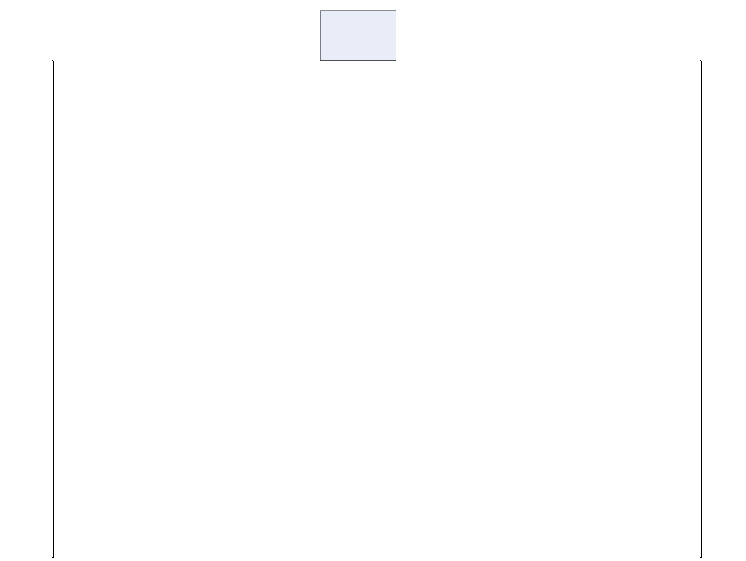
Figure
6.9.2.3.2-1: Unicast message protection procedure
1. The ME tries to camp on a
cell and decides to send message1 to the cell. If message1 is not
Preamble, it generates a 32-bit random string NONCE. The NONCE is
used as replay protection parameter for the successive downlink
message.
2. The ME may decide to
protect a sensitive information, e.g. NSSAI, in the message1 (there's
no sensitive information in Preamble). In that case, the ME sends the
EKRBS, <bsGKI, bsGNI>, the sensitive information,
and NONCE to the USIM. The <bsGKI, bsGNI> is obtained from a
broadcast message (e.g. SI or MIB) sent by the cell. The EKRBS
corresponds to the bsGKI. The USIM decrypts the EKRBS to
get KRBS, derives KBS from the KRBS
and <bsGKI, bsGNI>. The USIM then derives the Ke from the KBS
and returns the Ke to the ME. The ME generates keystream based on the
Ke and NONCE and computes the exclusive or of the sensitive
information and the keystream to encrypt the information.
3. The ME sends the message1
to the cell, which includes the NONCE if the message1 is not
Preamble, the message1 may be partially encrypted.
4. The gNB receives the
message1. If it is partially encrypted, then the gNB decrypts the
encryption part to get plaintext information.
5. The gNB decides to send
message2 to the UE. The gNB gets temp-message = (NONCE || message2)
and computes MAC-I for the temp-message as described in sub-clause
6.9.2.3.1.
6. The gNB sends the message2
along with the MAC-I to the UE via the cell.
7. The ME receives the
message2, performs message verification procedure as described in
step 4~6 of sub-clause 6.9.2.3.1 with the exception that the ME uses
temp-message = (NONCE || message2) instead of message2 for
verification.
NOTE 1: Preamble (MSG1) and
RAR (MSG2) are special radio messages. If the message1 is Preamble,
then the 32-bit NONCE = (2-bit padding || 6-bit RA-RNTI || 2-bit
padding || 6-bit RAPID || 16-bit Temporary C-RNTI). The NONCE is not
included in the Preamble. The RAR may contain a combined reply for
multiple UEs, in this case, RAR includes multiple 16-bit short
MAC-Is, which means ME truncates the XMAC-I returned from USIM for
verification. In order to provide backward compatibility, short MAC-I
can be appended sequentially after the payload.
NOTE 2: The message1 is a
message before message2, which means message2 can be a request,
response, or an indication. The message2 does not include <bsGKI,
bsGNI>.
6.9.3 Evaluation
6.10 Solution #10:
Protection on the unicast message based on ECDH
6.10.1 Introduction
This solution addresses key
issue #1 and the following security and privacy areas:
#1 DoS attack on UE: attempts
to hinder the UEs' access to the network.
#2 DoS attack on network:
attempts to hinder the network's ability to provide services to the
UEs.
This
solution is based on the ECDH. The UE has a eSK and ePK, and the gNB
has a SKgNB and a PKgNB.
After
both gNB and UE get the ePK and the PKgNB, they can
perform ECDH to get a shared key Ksig, which can be used to protect
all the unicast messages before the AS security activation.
NOTE 1: It is not addressed in
the present document how the gNBs are provisioned and the associated
security requirement(s) on storage and processing the
keys/certificates.
NOTE 2: It is not addressed in
the present document how the legacy USIM/ME are handled.
6.10.2 Solution
details
6.10.2.1 General
description
This
solution is based on the ECDH. The UE has an eSK and an ePK, and the
gNB has a SKgNB and a PKgNB.
a) The gNB can provision the
PKgNB in the early stage, so the UE can get the PKgNB
of gNB. There are 2 methods to provision PKgNB into the
UE: The PKgNB can be provisioned into the UE at
manufacture time, in USIM or in ME. Which means, it can be performed
in implementation-independent way;
NOTE : It is not addressed in
the present document in the manufacturing time how the PKgNB
for the target network/markets are known by the ME/USIM manufactures.
b) After UE registered and
performed authentication with the network, UE applies for the PKgNB
from the trusted Serving network.
The
UE can send the ePK in the uplink message, for example, in
Msg5, so the gNB can get the ePK of UE.
After
both gNB and the UE get the ePK and the PKgNB, they can
perform ECDH to get a fresh shared key Ksig, which can be used to
protect all the unicast messages before the AS security activation.
The
gNB and UE could use NIA1/2/3 to do integrity protection of the
subsequent unicast messages, the MAC size is only 32bits.
The
gNB is supposed to use the generated shared key to generate MAC for
the integrity protection of the unicast message, so UE would know if
this gNB is false or not as early as in the first message after Msg5,
for example, RRCReConfiguration.
6.10.2.2 Pre-provision
UE
and gNB should support ECDH, and all the credentials should be
preprovisioned.
6.10.2.3 Message used
to send ePK uplink
The
UE can use Msg3 or Msg5 to send ePK to the gNB, since the
size of Msg3 is limited by size, and the ECDH public key could be
256bit, so the Msg5 is more practical.
6.10.2.4 Replay
resistant
The
way to resist replay attack is adding one NONCE in the Msg5, as the
input of the MAC. This can be used to mitigate some replay attacks.
However, the MitM attack could not be mitigated.
6.10.2.5 Procedures
Detailed
call flow is as following.
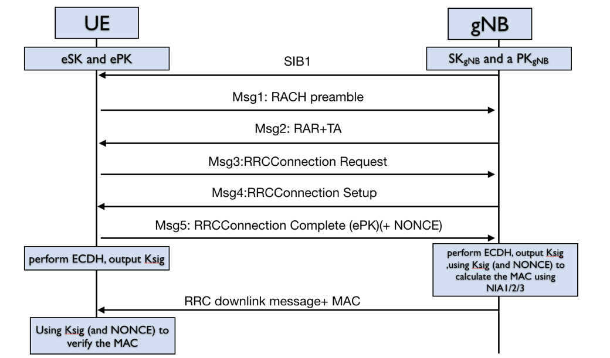
Figure
6.10.2.5-1: Protect unicast message using ECDH and MAC
6.10.3 Assessment
using clause A.3
6.10.3.1 UE aspects
UE
and gNB should support ECDH, and all the credentials should be
pre-provisioned, which can be performed in implementation-independent
way.
6.10.3.2 UE actions
upon detection of invalid signature
For
the unicast message, which is not with a MAC, UE have 2 choices: 1)
drop every message which is send without a MAC. 2) UE takes every
message as genuine without a MAC.
For
the unicast message, which is with a false MAC, UE should drop the
message.
NOTE: it is not addressed in
the present document how to know which gNB is supposed to add the MAC
in the unicast message.
6.10.3.3 Threats that
are mitigated by signed SI messages
Key
issue #1 are mitigated. All unicast message before security
activation can be integrity protected using this solution.
6.10.3.4 Threats that
are not mitigated by signed SI messages
MitM
attack and bidding down attack.
6.10.3.5 Provisioning
of keys
There
are 2 methods to provision PKgNB into the UE:
a) The PKgNB can be
provisioned into the UE at manufacture time, in USIM or in ME.
b) After UE registered and
perform authentication with the network, UE apply for the PKgNB
from the trusted Serving network.
The
UE can send the ePK in the uplink message, for example, in
Msg5, so the gNB can get the ePK of UE.
6.10.3.6 RAN aspects
Msg5
is used to carry the ePK from UE to send uplink to the gNB.
MAC
is carried in the downlink message, and the length of the MAC is only
32bit, which is much shorter than signature.
6.10.3.7 VPLMN
aspects
If
the VPLMN supports the ECDH solution and the UE is provisioned with
the PKgNB of the visited network, then this solution works
in VPLMN.
However,
there will be another choice. If the UE is only pre-provisioned PKgNB
of home network, then the UE can achieve anti-FBS in home PLMN. This
is a restricted case that only achieve anti-FBS security in home
network. Even though this is not a perfect solution, it is better
than nothing, given the fact that people spend much more time in the
home network than in the visited network.
6.10.3.8 HPLMN
aspects
This
solution can detect the FBS in the HPLMN.
6.10.3.9 Network
sharing aspects
Not
applicable to protection of unicast messages.
6.10.3.10 Roaming
aspects
Same
as 6.10.3.7 VPLMN aspects.
NOTE 1: It is not addressed in
the present document how roaming cases are addressed/handled
NOTE 2:
How the UE is prevented to camp on the false base station is not
addressed in the present document.
6.10.3.11 Regulatory
aspects
Not
addressed in the present document.
6.10.3.12 Signature
schemes
It
is using NIA/1/2/3 to do the integrity protection.
Note: It is not addressed in
the present document. whether other MAC algorithms are needed.
6.10.3.13 Signature
length
MAC
length: 32bits.
6.10.3.14 Resistance
against Quantum Computing
Not
addressed in the present document.
6.11 Solution #11:
Certificate based solution against false base station
6.11.1 Introduction
This solution addresses key
issue 1&2 and the following security and privacy areas:
#1 DoS attack on UE: attempts
to hinder the UEs' access to the network.
#2 DoS attack on network:
attempts to hinder the network's ability to provide services to the
UEs.
This
solution is based on the PKI(Public Key Infrastructure). The gNB can
sign the broadcast message with its own private key and send the
message, the signature, together with gNB's certificate to the UE,
and UE will be able to verify the authenticity of the message with
the provisioned root of trust, e.g. the certificate issuers' CA
public key. UE should accept the message after a successful message
authentication.
6.11.2 Solution
details
6.11.2.1 Pre-provision
and certificate distribution
This
solution requires the network to support PKI (Public Key
Infrastructure), Which needs the MNO have one or more CAs as the root
of the trust chain.
UE
should have the capability to support storing more than one CA Root
certificate, which can be stored in USIM or other
implementation-dependent way.
NOTE 1: There are 2 methods to
provision Root certificates into the UE:
a) The Root certificate can be
provisioned into the UE at manufacture time, in USIM or in ME.
NOTE 1a: It is not addressed
in the present document in the manufacturing time the Root
certificates for the target network/markets are known by the ME/USIM
manufactures.
The
legacy USIM/ME cannot support this solution.
b) After UE registered and
perform authentication with the network, UE apply for the Root
certificate from the trusted Serving network. UE gets the certificate
from the serving network directly or it gets the URL for downloading
the certificate. This would lead to UE unprotected before
registration and provisioned the first certificate.
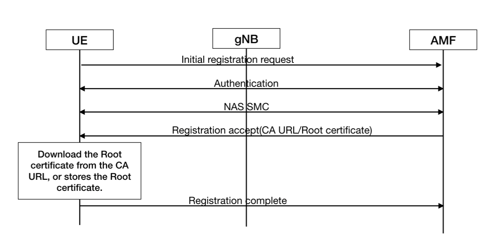
Figure
6.11.2.1-1: AS-based key provisioning procedure
NOTE 2: The vendor can
provision a list of Root certificate into the UEs, the length of the
list depends on the capability of the UE. Since the Root certificate
usually has a long lifecycle, the update of the Root certificate may
not happen before the user change the UE. In case the CA is
compromised, then the Root certificate needs to be changed, then the
vendor uses their private channel to update the Root certificate,
like the software update. It is not addressed in the present document
how the MNOs control the CA provisioning and revocation.
Each
gNB should be provisioned with its own private key and a certificate.
If the certificate is from a sub CA, then the cert chain should also
be given in the message from gNB to the UE to link back to the Root
CA. gNB should use its private key to generate signature of the
broadcast message, and the gNB certificate should be sent to the UE,
either together with the signature or in a separate message.
Note 3: It is not addressed
in the present document how the gNBs are provisioned and the
associated security requirement(s) on storage and processing the
keys/certificates.
6.11.2.2 Signature
algorithm
UEs
supporting this solution should support the ECDSA (Elliptic Curve
Digital Signature Algorithm) [x].
Note: Other feasible signature
algorithms are not addressed in the present document.
6.11.2.3 Procedures
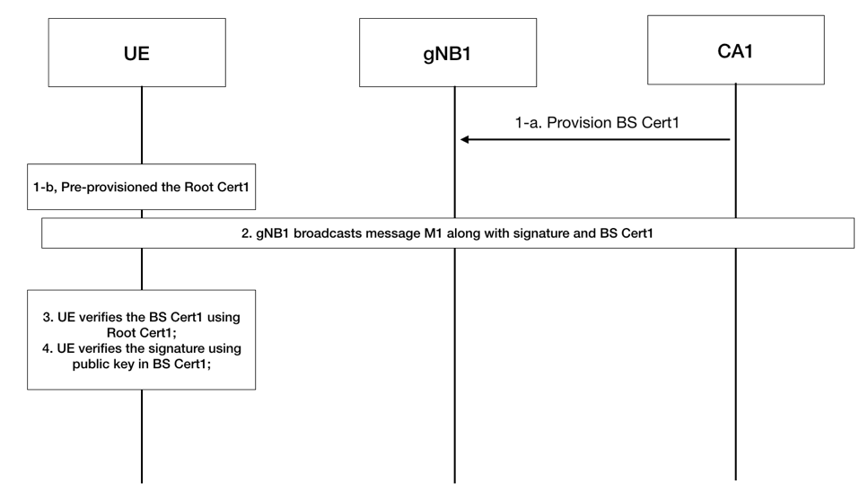
Figure
6.11.2.3-1: Certificate based signature broadcast message procedure
1-a. The MNO1 implements CA1
and the root certificate is Root Cert1, then CA1 distributes to gNB1
a BS Cert1 containing gNB's public key associated with its
corresponding private key.
1-b. UE is provisioned with
the public key of CA1, which may be provisioned in ME or USIM.
2. When gNB1 broadcasts
messages, it should send message M1, the signature and BS Cert1 to
the UE. The signature is generated from the message and the gNB
private key, the BS Cert1 contains the public key required to verify
the signature.
3.When UE receives the
message, it should first verify the validity of the BS Cert1 using
the corresponding CA public key. If the UE is provisioned the
corresponding Root Cert and the verification fails, it should drop
this message.
NOTE: If the UE does not own
a corresponding Root Cert for verification, then the UE should be
provisioned a local policy to decide how to deal with these messages.
UE may have 2 choices: 1) drop every message which is send with the
BS Cert for which UE cannot find a corresponding Root certificate to
verify; 2) UE takes every message as genuine, which is send along
with the BS Cert for which the UE cannot find a corresponding Root
certificate to verify.
4. Then UE uses the gNB public
key in the BS Cert to verify the signature. If the verification of
the signature succeeds, the UE takes this message genuine, otherwise,
it should drop this message.
When
there is more than one level of CA, for example, the MNO has a Sub
CA, and it should use Sub CA to sign for the gNB. Then the gNB has to
send not only its own Cert to the UE, but also the Sub CA Cert(s).
6.11.2.4 Certificate
format:
ITU-T
X.509 certificate [25] could be used for its flexibility, otherwise
more compact certificate format such as Card Verifiable Certificate
(CVC) can be considered.
The
specification should define the certificate profile.
NOTE: The profile of the
certificate is not addressed in the present document.
6.11.3 Assessment
using clause A.3
6.11.3.1 UE aspects
UE
needs to be pre-provisioned of a list of root certificate.
The
provision of the certificate is in clause 6.11.3.5.
The
UE should support the storage of the Root certificate.
UE
should support the certificate update, which can be performed in
implementation-independent way.
6.11.3.2 UE actions
upon detection of invalid signature
If
the UE does not own a corresponding Root Cert for verification, then
the UE should be provisioned a local policy to decide how to deal
with these messages. UE may have 2 choices:
1) drop every message which
is send with the BS Cert for which UE cannot find a corresponding
Root certificate to verify;
2) UE takes every message as
genuine, which is send along with the BS Cert for which the UE cannot
find a corresponding Root certificate to verify.
6.11.3.3 Threats that
are mitigated by signed SI messages
Key
issue 1&2 are mitigated. All broadcast message before security
activation can be signed using this solution.
6.11.3.4 Threats that
are not mitigated by signed SI messages
The
bidding down attack are not prevented. However, the bidding down
attack is caused by the partial deployment, and it is not specific to
this solution but applied to every solution. To mitigate the bidding
down attack, there will be 2 possible ways:
1) the MNOs make sure to
provision all the gNB with private keys/certificates, then when UE
received a SIB without a signature, it can be taken as a false one.
2) the second certificate
provision method should be chosen in clause 6.11.2.1. when UE is
registered into the network, the AMF in serving network should
provision a list of certificates for a bunch of gNBs. If the UE is
provisioned the certificate of the gNB, then it should verify the SIs
from this gNB.
NOTE 1: How the MitM attack is
addressed is not addressed in the present document.
NOTE 2:
How the UE is prevented to camp on the false base station is not
addressed in the present document
6.11.3.5 Provisioning
of keys
There
are 2 methods to provision Root certificates into the UE:
a) The Root certificate can be
provisioned into the UE at manufacture time, in USIM or in ME.
b) After UE registered and
perform authentication with the network, UE applies for the Root
certificate from the trusted Serving network. UE gets the certificate
from the serving network directly or it gets the URL for downloading
the certificate.
6.11.3.6 RAN aspects
Signature
and the certificate need to be carried in the broadcast message, and
the length of the signature and the certificate is approximately >600
byte (RSA based).
6.11.3.7 VPLMN
aspects
As
stated in clause 6.11.3.4, there are 2 different methods to provision
the Root certificates. If the first one is chosen, the UE needs to be
provisioned into Root certificates of VPLMN or there are mutual trust
between 2 different CAs, this solution works for VPLMN/roaming cases.
If
the second method is chosen, UE can get the Root certificate or the
URL for downloading the Root certificate after authentication with
the VPLMN, this solution works for the VPLMN. In this case, VPLMN
needs to support the corresponding signaling for sending the Root
certificate or the URL.
However,
there will be another choice. If the UE is only preprovisioned of
certain Root certificates, then the UE can achieve anti-FBS in
certain PLMN. This is a restricted case that only achieve anti-FBS
security in home network. Even though this is not a perfect solution,
it is better that nothing, given the fact that people spend much more
time in the home network.
6.11.3.8 HPLMN
aspects
This
solution can detect the FBS in the HPLMN.
6.11.3.9 Network
sharing aspects
gNB
can broadcast a list a PLMN in the SIB message, if the gNB is shared
gNB, it may carry more than one PLMN ID. In this case, supposing all
the PLMN support the signature-based solution, there may be different
method to add signature on this kind of SIB:
a) only one signature is
carried, which is for verification of the first PLMN.
b) The SIB message max size is
2976bit[1], so if the message allows, the SIB can carry as much as it
can to verify the authenticity of the SIB.
6.11.3.10 Roaming
aspects
Same
as 6.11.3.7 VPLMN aspects.
When
both HPLMN and VPLMN support this scheme, UE can be protected against
false base station with this solution.
If
UE's HPLMN supports this scheme, but UE roams to the VPLMN that does
not support this scheme, then UE will not be protected against false
base station.
If
the UE's HPLMN cannot support this scheme, but UE has already
implemented the Root certificates of several VPLMN or UE can support
to apply the Root certificate from VPLMN that support this scheme,
then when UE roams to one of these VPLMN, it can enable this feature
to detect false base station.
Both
key provision method in clause 6.11.2.1 can be used. Comparing the
1st one, the 2nd root certificate provision method (NAS based method
in clause 6.11.2.1) is more flexible to address the roaming issue.
When the VPLMN supports this scheme with the NAS based certificate
provision method, it is not needed for UE to get preprovisioned a
root certificate, instead, it can apply the certificate when it roams
to the VPLMN.
Interworking
will not be impacted. The UE will verify the signature when it
receives a SIB with signature, otherwise it will follow the legacy
RRC procedure when the SIB does not carry a signature.
6.11.3.11 Regulatory
aspects
The
CA construction should follow the local regulatory.
6.11.3.12 Signature
schemes
There
could one or more signature schemes like:
- ECDSA (recommended with
named curves)
Note 1: the ECDSA profile for
SUCI can be reused.
- RSA
- others
Note 2: Further explanations
are needed.
6.11.3.13 Signature
length
RSA:
256 bytes
ECDSA:
64 bytes
6.11.3.14 Resistance
against Quantum Computing
Not
addressed in the present document.
6.12 Solution #12: ID
based solution against false base station
6.12.1 Introduction
This solution addresses key
issue 1&2 and the following security and privacy areas:
#1 DoS attack on UE: attempts
to hinder the UEs' access to the network.
#2 DoS attack on network:
attempts to hinder the network's ability to provide services to the
UEs.
This
solution is based on ID based asymmetric cryptographic methods, for
example: IEEE1363.3[8], RFC6507[9], SM9[10], and ISO SC27 Lightweight
crypto using I2R-IBS in 29192-4 (for IoT NFC tag use cases)[11].
In
this solution, the ID based signature scheme is introduced, which is
more lightweight than certificate based solution, since it does not
require the huge size certificate to be send in the broadcast
message. One of these above ID based algorithm could be adopted, or
other feasible ID based cryptography is also acceptable.
NOTE: It is not addressed in
the present document where the PKG is located in the network.
6.12.2 Solution
details
6.12.2.1 Pre-provision
In
this solution, a key management center is needed, called PKG (Private
Key Generator), which can generate the PKPKG and SKPKG,
SKPKG are kept secret in PKG, and never be send out, while
PKPKG are preprovisioned to the UEs.
There
are 2 methods to provision the PKPKG into the UEs.
a) The PKPKG can be
provisioned into the UE at manufacture time.
b) After UE registered and
perform authentication with the network, UE applies for the PKPKG
from the trusted Serving network in the NAS SMC complete message.
This would lead to UE unprotected before registration and getting the
first PKPKG.
The
interface between gNB and PKG is a private interface in network
domain.
UE
should support one ID based algorithm same with the PKG.
NOTE: It is not addressed in
the present document that which ID based algorithm should be adopted.
6.11.2.2 Procedure
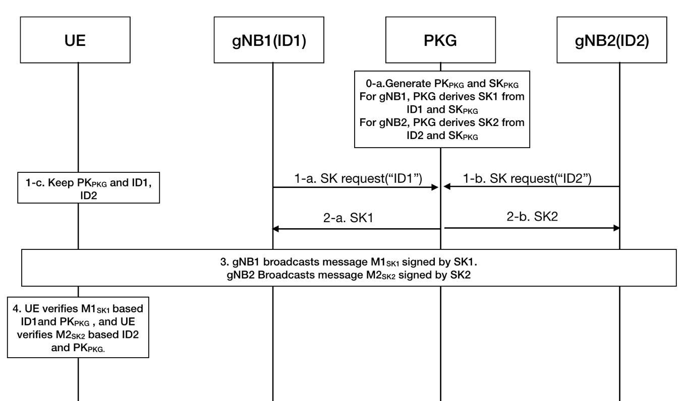
Figure
6.12.2-1: Procedure of ID based solution
0) The PKG generates a pair of
keys, PKPKG and SKPKG, SKPKG are
kept secret in PKG, and is never send out, while PKPKG is
pre-provisioned to UEs via feasible ways. PKG derives SKs for every
gNB using ID and SKPKG,
Every gNB has a global ID,
which is unique and public. SK is bound to any concatenated info
contained in the ID string. Any change of the ID requires
verification at PKG and issuing of a new ID string and corresponding
SK.
NOTE 1: The format of the ID
is FFS. For example, ID = "PLMN ID" | "gNB global
unique ID" | "TAC(optional)" |"other
information".
1) gNB1 sends request for SK1
with ID1, and gNB2 sends requests for SK2 with ID2. Meanwhile, UE
stores the PKPKG and ID1, ID2 when it receives PKPKG
and ID1, ID2.
NOTE 2: UE constructs ID1 and
ID2 from information received in broadcast messages.
2) PKG sends SK1 to gNB1 and
sends SK2 to gNB2.
3) When gNB1 needs to
broadcast messages, it uses SK1 to sign this message; When gNB2 needs
to broadcast messages, it uses SK2 to sign this message.
4) UE uses PKPKG
and ID1 to verify the message from gNB1, and uses PKPKG
and ID2 to verify the message from gNB2. If the UE is provisioned the
valid PKPKG and the verification succeeds, the UE treats
the information as genuine. If the UE is provisioned the valid PKPKG
and the verification fails, the UE drops this message. If the UE is
not provisioned the valid PKPKG, the UE should be
provisioned a local policy to decide how to proceed such a message.
6.12.2.3 Revocation
The
revocation can be achieved by adding time stamp in the ID string to
show the validity period, e.g. "YYYY|MM|WW". For example,
the BS ID is set to "PLMN ID" | "gNB global unique ID"
| "TAC(optional)" |" 2020|06|01", which means,
this ID and the corresponding credentials will be revocated in June
1st, 2020. After this time, the BS needs to update the ID and request
for new Keys.
After
the ID update, the gNB should send the new ID to request for a new
SK, as step 1 in clause 6.12.2.2.
NOTE 1: Other revocation
method need further study.
NOTE 2:
The ID format is not addressed in the present document
6.12.3 Assessment
using clause A.3
6.12.3.1 UE aspects
UE
needs to be preprovisioned of a public key PKPKG of the
PKG.
The
provision of the PKPKG is in clause 6.12.3.4.
The
PKPKG should be stored in USIM.
UE
should support the update of the PKPKG.
6.12.3.2 UE actions
upon detection of invalid signature
If
the UE is provisioned the valid PKPKG and the verification
fails, the UE should drop this message.
If
the UE is not provisioned the valid PKPKG, the UE should
be provisioned a local policy to decide how to proceed such a
message.
Note: How the UE is prevented
to camp on the false base station is not addressed in the present
document.
6.12.3.3 Threats that
are mitigated by signed SI messages
Key
issue 1&2 are mitigated. All broadcast message and unicast
messages before security activation can be signed using this
solution.
6.12.3.4 Threats that
are not mitigated by signed SI messages
The
bidding down attack is not prevented.
NOTE 1: How the MitM attack is
addressed is not addressed in the present document .
NOTE 2:
How the UE is prevented to camp on the false base station is not
addressed in the present document
6.12.3.5 Provisioning
of keys
There
are 2 methods to provision the PKPKG into the UEs.
a) The PKPKG can be
provisioned into the UE at manufacture time.
b) After UE registered and
perform authentication with the network, UE applies for the PKPKG
from the trusted Serving network in the NAS SMC complete message.
This would lead to UE unprotected before registration and getting the
first PKPKG.
6.12.3.6 RAN aspects
Signature
needs to be carried in the broadcast message, and the length of the
signature can be as short as 160 bit using BLS [12].
6.12.3.7 VPLMN
aspects
As
stated in clause 6.12.3.4, there are 2 different methods to provision
the PKPKG. If the first one is chosen, the UE needs to be
provisioned into PKPKG, then his solution works for
VPLMN/roaming cases. If the second method is chosen, UE can get the
PKPKG of the VPLMN in the NAS SMC complete message, this
solution works for the VPLMN.
However,
there will be another choice. If the UE is only pre-provisioned of
PKPKG of the HPLMN, then the UE can achieve anti-FBS in
HPLMN. This is a restricted case that only achieve anti-FBS security
in home network. Even though this is not a perfect solution, it is
better that nothing, given the fact that people spend much more time
in the home network.
6.12.3.8 HPLMN
aspects
HPLMN
should support the PKG, and also the This solution can detect the FBS
in the HPLMN.
6.12.3.9 Network
sharing aspects
gNB
can broadcast a list a PLMN in the SIB message, if the gNB is shared
gNB, it may carry more than one PLMN ID. In this case, supposing all
the PLMN support the signature based solution, there may be different
method to add signature on this kind of SIB:
a) only one signature is
carried, which is for verification of the first PLMN.
b) The SIB message max size is
2,976 bit[1], so if the message allows, the SIB can carry as much as
it can to verify the authenticity of the SIB.
6.12.3.10 Roaming
aspects
Same
as 6.12.3.7 VPLMN aspects.
NOTE 1: How the roaming
scenario is addressed is not addressed in the present document .
NOTE 2:
How the interworking with legacy network is not addressed in the
present document
6.12.3.11 Regulatory
aspects
Not
addressed in the present document.
6.12.3.12 Signature
schemes
There
could one or more signature specification like:
- BLS [12]
- IEEE 1363.3 [8]
- RFC 6507 [9]
- SM9 [10]
- others
Note: Further explanations are
needed.
6.12.3.13 Signature
length
BLS
[12]: 160 bit
SM9
[10]: 520 bit
6.12.3.14 Resistance
against Quantum Computing
Not
addressed in the present document.
6.12.4 Evaluation
Not
addressed in the present document.
6.13 Solution #13:
Protecting RRCResumeRequest against MiTM
6.13.1 Introduction
This
solution addresses the following key issues:
- Key issue #1: The 5G system
shall have support for protection against tampering of
RRCResumeRequest message.
The
solution provides a mechanism to protect the RRCResumeRequest message
from tampering with the I-RNTI, resumecause field and the spare bit
for future use (1 bit) and against MiTM attack.
6.13.2 Solution
details
When
the UE initiates the RRC Resume procedure, the UE should use the
I-RNTI, resumecause field value and spare bit as inputs parameter
when calculating the ResumeMAC-I as indicated below.
- RRC-Resume-Request =
ResumeMAC-Input "Source (C-RNTI+PCI) + Target Cell ID + I-RNTI +
resumecause+ spare bit"
When
the new gNB receives RRCResumeRequest message, the new gNB should
include the resumecause field value and spare bit in addition to the
I-RNTI and PCI in the RETRIEVE UE CONTEXT REQUEST message sent to the
old gNB.
When
the old gNB validates the ResumeMAC-I, the old gNB should calculate
the ResumeMAC-I as the way the UE calculated it by also including the
I-RNTI, resumecause field value and spare bit as inputs to the
ResumeMAC-Input. For addressing backward compatibility, the following
is proposed:
- Release 16 UE which support
this feature will exchange its capability to the gNB over NAS when
the UE attach to the network. The serving gNB (old gNB) will keep an
indication of the UE support of this feature in the UE context even
after sending the UE to INACTIVE.
- When the UE come from
RRC-INACTIVE state by sending the RRCResumeRequest message, the UE
protect the resumecause when calculating the ResumeMAC-I. When the
new gNB receives the RRCResumeRequest, the new gNB sends the
resumecause value in addition to the UE I-RNTI, ResumeMAC-I in the
RETRIEVE UE CONTEXT REQUEST message to the old gNB.
- After the old gNB identify
the UE context using the UE I-RNTI, the old gNB validate the UE
capability of whether it supports "resumecause" protection
or not. If the UE support this feature, the old gNB validate the
ResumeMAC-I using the resumecause as one of the ResumeMAC-Input
parameters. If the UE does not support, the old gNB ignores the
received resumecause when calculating the ResumeMAC-I.
- In the rare case when the
new gNB is Rel-15 gNB while the old gNB is a Rel-16 gNB, when the new
gNB receives the UE RRCResumeRequest message, the new gNB will
include the UE I-RNTI, ResumeMAC-I and other parameters but without
the resumecause filed value in the RETRIEVE UE CONTEXT REQUEST. When
the old gNB allocate the UE context and verify that the UE supports
resumecause protection while no resumecause value has been received,
the old gNB either reject the new gNB request in RETRIEVE UE CONTEXT
REJECT with proper cause value that causes the new gNB to send the UE
to RRC-IDLE or optionally, the old gNB can iterate the validation of
the UE ResumeMAC-I by including one of already standardized
resumecause value at a time and check the ResumeMAC-I. If the
ResumeMAC-I passes validation with any of the resumecause values, the
old gNB respond with RETRIEVE UE CONTEXT RESPONSE as in the
successful case. If ResumeMAC-I failed with all resumecause values,
the old gNB reject the new gNB request.
6.13.3 Evaluation
Since
I-RNTI, spare IE and resume cause IE are included in computation of
shortResumeMAC-I, the whole RRCResumeRequest message is integrity
protected, and the security issues raised in key issue #1 is
eliminated.
6.14 Solution #14:
Shared key based MIB/SIBs protection
6.14.1 Introduction
This
solution addresses the security requirement of Key Issue #2: Security
protection of system information.
The
basic idea is to have UE reports the hash of the MIB/SIBs it has read
to access the network, to the gNB after it has established an AS
security context. For the initial access, the AS security mode
complete is the first message that is both ciphered and integrity
protected by the UE, hence is used to carry the hash of the MIB/SIBs.
When
gNB receives the hash value and it verifies the correctness of the
hash. If the verification fails, the gNB indicates the mismatch and
in addition provides the MIB/SIBs, to the UE.
6.14.2 Solution
details
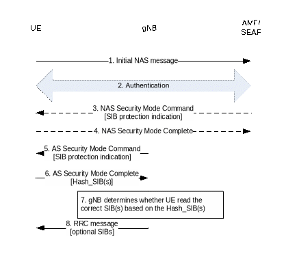
Figure
6.14.2-1: System information protection
The
procedure is as follows.
1.
UE sends an initial NAS message to the network.
2.
(optional) UE performs a primary authentication with the network.
3.
(optional) AMF sends a NAS Security Mode Command to the UE optionally
with indication of support for system information protection. If the
UE receives the indication of support for system information
protection, the UE stores it as part of the security context.
NOTE 1: If the indication of
support for system information protection is indicated in the NAS
SMC, system information protection is applied to the entire system
(i.e., all gNBs in the PLMN).
4.
(optional) UE sends a NAS Security Mode Complete to the AMF.
5.
gNB sends an AS Security Mode Command to the UE optionally with
indication of support for system information protection.
NOTE 2: Support for system
information protection is indicated in the AS SMC if it is not
supported system wide.
6.
UE sends a Security Mode Complete with the hash of the MIB/SIBs. The
hash value is both ciphered and integrity protected. Also, the UE
indicates the list of SIBs that were used to calculate the hash
value. The PCI of the cell is additionally included when generating
the hash values of MIB/SIB, but the SFN in MIB should not be
included.
7.
gNB decrypts and integrity checks the AS Security Mode Complete. If
the verification is successful, the gNB further verifies the hash of
the MIB/SIBs.
8.
gNB sends RRC message to UE. The RRC message includes the MIB/SIBs
(with the list of SIB #s) if the hash verification has failed in the
previous step 7.
NOTE 3: UE may determine to
change the cell if a MitM false base station is highly suspected
based on the received MIB/SIBs from the gNB.
NOTE 4:
It is not addressed in the present documenthow the MitM attack is
addressed..
The
rest of the procedure is same as in TS 23.502 [13].
6.14.3 Evaluation
This
solution fulfils the potential security requirement of the KI #2 when
the UE is in the RRC-Connected state.
This
solution does not fulfil the potential security requirement of the KI
#2 when the UE is in the RRC-Idle or the RRC-Inactive state.
NOTE : How to protect the
MIB/SIBs when AS security is not supported is not addressed in the
present document.
6.15 Solution #15:
Mitigation against the authentication relay attack with different
PLMNs
6.15.1 Introduction
This
solution addresses key issue #5: Mitigation against the
authentication relay attack, assuming that the victim UE and
malicious UE, as defined in key issue #5, are residing in different
PLMNs.
6.15.2 Solution
details
If
the victim UE and the malicious UE are located in different PLMNs,
then it is not possible to setup a successful registration since the
serving network name is part of the key derivation, thus the NAS keys
would differ in the victim UE and in the AMF serving the malicious
UE. The NAS SMC would fail, but neither UE nor the AMF know why. It
is assumed here that the malicious base station does not use the PLMN
ID of the malicious UE, since the victim UE would not perform any
PLMN reselection to the malicious base station, but rather would camp
on it if it is the same PLMN as the surrounding PLMN. This solution
tries to capture indications within the three potentially involved
networks of the victim UE, the malicious UE and the HPLMN of the
victim UE.
Indications
in the AMF:
- -The AMF receives a Service
Request from a completely unknown UE with a wrong GUTI pointing to a
different PLMN. The AMF also does not have the security context used
by the UE and will reject the NAS message.
The authentication with the
victim UE is successful, but NAS SMC with the victim UE fails since
the NAS keys in the AMF and in the victim UE are different. The
victim UE may send a Security Mode Reject message with an indication
that the integrity check failed of the NAS SMC from the AMF. The
malicious base station or UE may block the reject message since it
can be sent only in clear.
Indications
in the UDM/AUSF:
- The UDM detects that the
victim UE suddenly "moves" to a different PLMN. The UDM may
compare the time of last successful registration with the new
authentication request from the PLMN the malicious UE is located and
also may compare the distance. It may be easy for PLMNs in different
continents but more difficult with a high density of PLMNs and
countries, e.g. in Europe. If the AMF would provide more fine
granular location information than the serving network name, then the
UDM may be able to perform a better estimation since the last serving
cell ID is stored in the UDM with time stamp.
- UDM may get suspicious if
the authentication was successful but AMF reports failed NAS SMC.
Indications
in the (victim) UE:
- The UE assumes to be
successfully registered to the network but receives a reject message
to the Service Request.
- The UE performs successful
authentication but then is not able to verify the integrity of the
NAS SMC.
- The UE may try to inform the
AMF with a Security Mode Reject message, but since it is sent in
clear text, the malicious base station or UE could block it.
- The victim UE should perform
cell reselection and start initial registration. The victim UE may
internally mark the cell of the malicious base station as an invalid
cell so that it does not go back to it at a later time after
performing cell-reselection.
The
indications could be combined together in the following procedure:
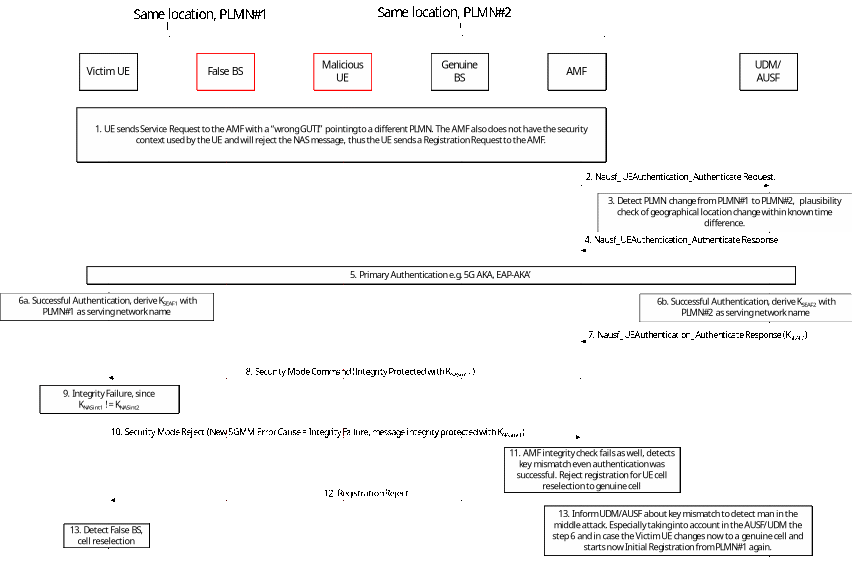
Figure
6.15.2-1: Procedure to detect Authentication Relay Attack in
different PLMNs
1. It is assumed that during
the RRC establishment procedure (step 1), the victim UE and the
malicious UE act independently in the different locations. The
malicious UE may be triggered with the first RRC message, RRC Setup
Request or RRC Setup Complete. It is further assumed that the
Malicious UE replaces the victim UE's S-TMSI (e.g. NG-5G-S-TMSI) from
the RRC Setup Request with a malicious UE's S-TMSI in form of a
random string. Usually the RRC layer uses a random string when there
is no S-TMSI provided from the upper layers (e.g. NAS layer). The
Genuine Base station in PLMN#2 and the HPLMN of the Victim UE
(UDM/AUSF) do not necessarily need to be the same one. Once the AMF
in the PLMN#2 receives the Initial NAS message forwarded from the
Malicious UE in step 1, the AMF determines that there is no NAS
context (e.g. security, access and mobility context) corresponding to
the 5G-GUTI and AMF determines that the 5G-GUTI contains PLMN ID
different from the PLMN ID of PLMN#2. The AMF is not able to check
the integrity protection of the NAS message and is not able to
de-cipher the NAS container. It is assumed that the UE still assumes
it is in the same network (PLMN#1), i.e. when the UE has a security
context, the UE should send a message that has the complete initial
NAS message ciphered in a NAS Container along with the cleartext IEs
with whole message integrity protected. This Initial NAS message may
be a Service Request or a periodic/mobility Re-Registration request
message because if a UE would perform PLMN selection e.g. due to
roaming, then it would send the SUCI in the unprotected initial NAS
message since it does not have a security context and a valid 5G-GUTI
assigned from the PLMN where the UE camps. Depending on the NAS
message, the AMF rejects the request since the UE is unknown in the
network and may include an error cause that the 5G-GUTI is invalid.
Based on reject message, the Victim UE starts an Initial Registration
Request with its SUCI and UE capabilities
2. According to normal
procedure the AMF sends a Nausf_UEAuthentication_Authenticate Request
message in step 5 to the AUSF of the HPLMN of the Victim UE. This
message also contains the serving network (i.e. PLMN#2) identifier.
3. The UDM makes a
plausibility check whether it is possible to travel from the last
known location to the new location within the time when this new
registration request occurred. If implemented in the HPLMN, then the
HPLMN could already deny the authentication request to the AMF with a
location mismatch cause value.
4. The AUSF provides the
challenge to the AMF (SEAF), e.g. the AKA' challenge or the 5G
Serving Environment Authentication Vector (RAND, AUTN, HXRES*).
5. The AUSF will perform
normal primary Authentication procedure (e.g. 5G AKA or EAP-AKA') of
the UE
6. Once the authentication is
successful, the UE and the AUSF derive in the KSEAF but
with different PLMN IDs as input to the KDF, resulting in two
different keys in the UE and in the AUSF i.e. KSEAF1 and
KSEAF2.
7. The AUSF provides the
KSEAF2 to the AMF, which further derives the KAMF
and the NAS keys.
A successful authentication
procedure always results in a new KSEAF, which means all
derived other keys KAMF and for NAS and AS are renewed in
AMF and the UE, thus the Security Mode Command procedure needs to be
carried out after every authentication procedure.
8. The AMF sends the Security
Mode Command to the UE, integrity protected with KNASint2.
9.- Upon reception of the
Security Mode Command message, the UE knows that the Authentication
procedure was successful. The UE tries to verify the integrity of the
Security Mode Command but the UE fails due to the key mismatch of
KSEAFs and the resulting KNASint keys, i.e.
KNASint1 is different to KNASint2.
10. The UE sends a Security
Mode Reject message including an appropriate error cause value, i.e.
integrity check failure. The UE may integrity protect the message
(e.g. Security Mode Reject) with UE's own derived key KNASint1.
This message may be dropped by the False BS or Malicious UE, since
this message would lead to a key mismatch in UE and AMF for the
integrity protection of the NAS message.
11. The AMF can then verify
whether it was a transmission failure or a key mismatch in based on
the one of the following criteria:
- the AMF receives a Security
Mode Reject with the error cause that the UE could not verify the
integrity of the previously sent Security Mode Command; and/or
- in addition the AMF is also
unable to verify the integrity of the Security Mode Reject from the
UE, considering also that the AMF knows that UE performed successful
authentication (as received from AUSF in step 6).
- the AMF never receives any
answer to the NAS SMC for all retransmissions, i.e. as all messages
in step 10 may be dropped.
12. The AMF rejects the
registration and may indicate to the UE to re-register after a cell
or PLMN reselection in order to allow the UE to try from another
(perhaps genuine) cell. This message may be dropped by the False BS
or Malicious UE.
13. The AMF informs the UDM
about the NAS key mismatch. One reason for the key mismatch may be a
man in the middle attack. Especially in case the UDM takes into
account the result of step 3 and in case the Victim UE changes now to
a genuine cell and starts now Initial Registration from PLMN#1
again.
In parallel the UE performs cell reselection and starts
initial registration. The Victim UE may internally mark the cell of
the False BS as an invalid cell so that it does not go back to it at
a later time after performing cell-reselection.
The
serving network has the best information about the NAS protocol and
the potentially dropped messages as well as the integrity failure of
the NAS SMC due to key mismatch.
The
UDM can take the information of the AMF into account as well as the
sudden PLMN changes within a short timeframe since the last UDM
update. The UDM may use the information from the AMF for the
detection of an authentication relay attack in order to enhance the
precision of the detection, since it is very likely that a UE is a
victim of an authentication relay attack if all factors are taken
into account. The UDM may check whether other UEs were concerned
previously with the same issues and trying to register to the same
serving network, i.e. camping at the same false base station and
being relayed to the same malicious UE.
6.15.3 Evaluation
Impacts
on the UE:
- NAS SMC reject to the AMF
with error cause integrity protection failure.
Impacts
on the AMF:
- Detect that the UE sends an
invalid 5G-GUTI from another network in the initial NAS message.
- Detect that the
authentication procedure is performed correctly with the UE.
- Detect NAS SMC failure due
to key mismatch and notify UDM with error cause NAS key mismatch, or
that NAS SMC procedure is never performed due to dropped messages.
- Provide information about
the probability of an attack to the UDM
Note 1: How the AMF estimates
the probability of an attack is not addressed in the present
document.
Impacts
on the UDM:
- Detect location change in
unreasonable time and reject authentication request with error cause
location mismatch. The location change is on PLMN granularity and the
definition of reasonability is left to implementation, e.g. changes
between neighbour countries may not lead to an alarm.
Note 2:
Further evaluation is needed.
6.16 Solution #16:
Protection of RRC Reject Message
6.16.1 Introduction
This
solution addresses the key issues #1 "Security of unprotected
unicast messages" for RRC Reject message protection. The
solution provides a means to ensure that a UE is able to determine
the authenticity of the RRC Reject message from the gNB regardless of
RRC states.
The
RRC Reject message is sent on SRB0 without integrity protection, if
the RAN is not able to handle the procedure, e.g. due to congestion.
The RRC Reject message includes the IE Wait Time, the UE will deny
the access until the Wait Time is expired. For IoT UEs, the Wait Time
is extendedWaitTime, which can be 30 minutes [15]. Thus, a forged RRC
Reject message which includes a long value of Wait Time will be a DoS
attack to the UE, because once the attacker sends the forged message
to the UE, the UE will be in a non-service state for a long time. The
attacker does not need to trigger an active MiTM attack.
However,
if the Wait time does not exceed a specific threshold value, e.g.
16s, it is not a big issue, since the attacker needs to trigger an
active MiTM attack to make the same threat as mentioned above which
may be detected by the operator.
NOTE: how to determine and
configure the threshold value is not addressed in the present
document.
Thus,
the solution proposes to integrity protect the Wait Time according to
the value of the Wait Time. If the network wants to reject the UE
with a Wait time greater than the specific threshold value (eg.16s),
the network should integrity protect the Wait Time, and the UE will
only accept the value after verifying the integrity protection.
Otherwise, the UE should only wait with the specific threshold value
no matter what Wait Time indicates. The solution has no backward
compatibility issue and adapts with both RRC_IDLE and RRC_INACTIVE
case.
6.16.2 Solution
details
6.16.2.1 Protection
of RRC Reject Message in RRC_IDLE state
UE
in RRC_IDLE state may send RRC Setup Request message to the RAN to
establish RRC connection. When the RAN wants to reject the UE when
receiving RRC Setup Request, the RAN should not set the Wait Time
greater than a specific threshold value because the RAN has no AS
context for this UE.
When
the UE receives RRC Reject with a Wait Time, and the Wait Time is
less than the specific threshold value (eg.16s), the UE should
directly use the value to deny the access. But when the Wait Time is
greater than the specific threshold value, the UE should check
whether there is a RejectMAC-I. If not, the UE should deny the access
for the Wait Time of the specific threshold value. However, if the
RejectMAC-I is included, the UE should verify the RejectMAC-I as
described in clause 6.16.2.2.
6.16.2.2 Protection
of RRC Reject Message in RRC_INACTIVE state
UE
in RRC_INACTIVE state may send RRC Resume Request message to the RAN
to establish RRC connection. When the RAN wants to reject the UE when
receiving RRC Resume Request, but the RAN has no AS security context
locally, which means the RAN will not fetch AS security context from
the initial RAN, the RAN should not set the Wait Time greater than a
specific threshold value. However, when the RAN has the AS security
context locally, the RAN could set the Wait Time greater than the
specific threshold value, and the target RAN should include the Wait
Time and RejectMAC-I in the RRC Reject message.
NOTE 1: If the RAN is busy,
the RAN may not fetch UE context from the initial RAN, because it may
involve additional Xn signalling overhead. So, for mobility case, the
RAN treat it as the RAN has no AS security context.
The
RAN should calculate the RejectMAC-I as similar as calculation in
clause 6.2.2 with a new input: target C-RNTI. The target C-RNTI is a
freshness parameter and it changes even UE access the same target
cell. So the RRC Reject message cannot be replayed.
On
receiving the RRC Reject message from the target RAN, the UE should
process as described in clause 6.16.2.1. If the wait tine is greater
than the specific threshold value, the UE should verify the
RejectMAC-I. . If it is successful, then the UE should deny the
access until the Wait Time is expired. If the RejectMAC-I check
fails, then the UE should deny the access for the Wait Time of the
specific threshold value.
6.16.3 Evaluation
The
solution address key issue #1"Security of unprotected unicast
messages" for RRC Reject message protection. The solution is
applicable for IoT UE or future release UE with long wait time
setting.
In
this solution, RRC Reject message is only integrity protected when
the RAN has UE AS security context locally and the RAN wants to
reject the UE exceed a specific threshold value, which means RRC
Reject message will not be integrity protected when the UE is in
IDLE, or when the UE moves to a new RAN in INACTIVE.
That
is because RRC Reject message is usually used to handle UE congestion
case, the solution tries to involve minimal computation overhead to
protect the UE from being DoS rather than involving big Xn
communication overload to fetch UE AS security context. Thus, the
solution is a balance between overload and security.
6.17 Solution 17:
Integrity protection of the whole RRCResumeRequest message
6.17.1 Introduction
This
solution addresses key issue #1 for the protection against tampering
of RRCResumeRequest messages.
6.17.2 Solution
Details
When
the UE decides to resume the RRC connection to transit from
RRC_INACTIVE to RRC_CONNECTED, the UE should use the whole
RRCResumeRequest message, except the ResumeMAC-I/shortResumeMAC-I, as
an additional input parameter to the VarResumeMac-Input part in order
to calculate ResumeMAC-I/shortResumeMAC-I. The UE should send the
calculated ResumeMAC-I/shortResumeMAC-I in the RRCResumeRequest
message.
When
the gNB/ng-eNB receives the RRCResumeRequest message from the UE, the
gNB/ng-eNB should validate the ResumeMAC-I/shortResumeMAC-I received
from the UE.
The
terms of legacy UE, legacy gNB/ng-eNB, and legacy network
respectively refer to the UE, gNB/ng-eNB, and network that supports
only the Rel-15 (legacy) version of ResumeMAC-I/shortResumeMAC-I.
The
terms of newer UE, newer gNB/ng-eNB, and newer network respectively
refer to the UE, gNB/ng-eNB, and network that support the newly
proposed way of ResumeMAC-I/shortResumeMAC-I calculation and
handling.
A
newer network uses the newer version of ResumeMAC-I/shortResumeMAC-I
only if supported by the UE. Otherwise the network uses the legacy
version of ResumeMAC-I/shortResumeMAC-I.
Newer
UE use the newer version of ResumeMAC-I/shortResumeMAC-I only if
supported by both the source and target gNB/ng-eNB. Otherwise, the UE
use the legacy version of ResumeMAC-I/shortResumeMAC-I.
The
UE and the network negotiate/learn each other's capability/support of
using the newer version of ResumeMAC-I/shortResumeMAC-I as below:
- UE's capability is part of
an RRC message (i.e., AS SMComplete).
- gNB/ng-eNB should indicate
its capability of supporting the new version of ResumeMAC-I in SI
message (i.e., SIB1, refer to a closely related feature called
useFullResumeID in SIB1).
- gNB/ng-eNB should also
indicate its capability of supporting the new version of ResumeMAC-I
in RRCRelease message with SuspendConfig, which is sent after AS SMC
thus protected.
In
this way, UE receives source gNB/ng-eNB's capability in both SIB
message and RRCRelease message, among which RRCRelease message is
protected and can be trusted. UE receives target gNB/ng-eNB's
capability of supporting new ResumeMAC-I (e.g. forwarding the new
ResumeMAC-I and the whole ResumeRequest message to the source
gNB/ng-eNB for verification) in SIB message, but not in RRCRelease
message.
If
UE receives both source and target gNB/ng-eNB's capability of
supporting new ResumeMAC-I, UE will include the new ResumeMAC-I in
the ResumeRequest.
If
either source or target gNB/ng-eNB does not indicate its capability
of supporting new ResumeMAC-I, then UE will use legacy ResumeMAC-I in
the ResumeRequest.
In
any case that the target gNB/ng-eNB rejects the ResumeRequest, it
indicates the reject cause (e.g. wrong version of ResumeMAC-I) and
the original "resumecause" in the Resume Reject message to
make UE to verify.
NOTE 1: Since Resume Reject
message is not protected, it is still possible for attackers to
modify this message. However, adding the reject cause and the
original "resumecause" can be taken as the enhancement.
Besides, when the reject message is protected in the future, this
enhancement will be reliable from then on.
NOTE 2: The protection of the
Resume Reject message will be discussed separately.
NOTE 3: It is not addressed in
the present document if there are other preferable alternatives like
UE's capability could be part of a NAS message (e.g., Registration
Request) and gNB/ng-eNB's capability could be part of an RRC message
(e.g., RRC release with suspendConfig).
The
processing overhead of using the whole RRCResumeRequest message as
input to one of NIA/EIA algorithms is expected to be minimal.
6.17.3 Evaluation
This
solution fulfils the security requirement in key issue#1, which is
"The 5G system should have support for protection against
tampering of RRCResumeRequest message." If both the UE and the
source/target gNB/ng-eNB support this solution, this solution helps
to detect the tempering of the RRCResumeRequest message.
This
solution has an impact on UE, source/target gNB/ng-eNB. To support
the new calculation for ResumeMac-I, both network and UE have to
support the feature and it should be known in both the network and UE
when it is to be used.
The
ResumeMac-I verification is done by the source gNB and not the target
gNB. Further, the ResumeRequest message itself is not sent over the
Xn interface by the target gNB to the source gNB. The current Xn
specification does not provide the full ResumeRequest message to the
source gNB to calculate the ResumeMac-I using the new method. Hence
the target gNB needs to be updated to provide the full ResumeRequest
message over Xn. Hence to support the new calculation of ResumeMac-I,
the:
- Target gNB needs to provide
the full ResumeRequest message to the source gNB
Source gNB needs to support
the new calculation and handling of the full ResumeRequest message
from target gNB.
Hence
both the source gNB and target gNB should support the new mechanism.
6.18 Solution #18:
Avoiding UE connecting to False Base Station during Conditional
Handover
6.18.1 Introduction
This
solution addresses the security requirement in key issue #3 for
preventing UE from connecting to false base station. TS 38.331[2]
supports high handover robustness to avoid ping-pong effect, and it
is recognized that avoiding UE connecting to false base station can
be supported losslessly. Thus, the solution is proposed to support
conditional handover in addition to solution 6.
The
solution proposes the similar mechanism with solution 6 to support
for conditional handover, i.e. target gNB B assigns a specific CSI-RS
to the UE to indicate the UE to measure the real reference signal of
the target gNB B, which could avoid the UE to measure false base
station. The difference is that the source gNB A sends threshold to
the UE to make the HO decision. So, handover decision can be
performed on the UE. Thus, additional signalling to report measured
signalling is not needed so that handover robustness can be
guaranteed, meanwhile, this can avoid UE connecting to false base
station during conditional handover.
6.18.2 Solution
details
6.18.2.1 General
Similar
with solution 6, there are two options for this solution:
Option
A: Always On feature: In this option the proposed solution is always
on and activated at the source gNB; thus it is on all gNBs.
Option
B: On demand feature: The source gNB turns this feature on to a
specific target gNB, when the source gNB suspects the presence of a
false base station in the area, it automatically turns this feature
on.
6.18.2.2 Always on
Feature
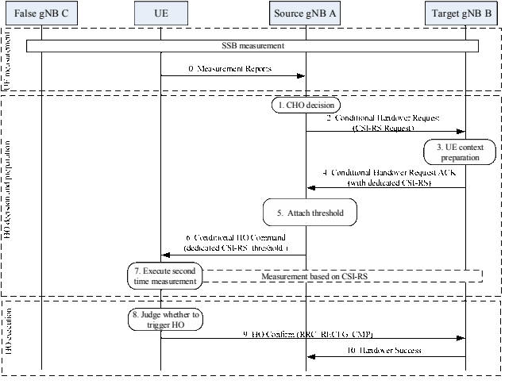
Figure
6.18.2.2-1: CHO procedure with indicated second measurement
1) The UEs performs
measurement and sends measurement report including measured signal 1
of this specific cell to the source gNB (A). The measured signal may
be false gNB C's who forged the same cell to the target gNB B.
2) -2. When the source gNB
receives Measurement Report, the measured signal is going to trigger
Conditional Handover, the source gNB (A) sends CHO request with a
CSI-RS to request the target gNB to prepare a specific CSI-RS for the
UE.
3) The target gNB (B) performs
admission control and prepares basic RRC configuration information
for the UE, including a dedicated CSI-RS information.
4) The target gNB (B) responds
with the CHO request ACK message containing all the prepared RRC
configuration information (including the dedicated CSI-RS
information).
5) Once the source gNB (A)
receives the CSI-RS information in the Conditional Handover request
ACK, the source gNB attaches threshold of HO.
6) The source gNB (A) sends
CHO Command including the dedicated CSI-RS information and threshold
to the UE while being protected with RRC security context.
7) The UE executes a second
measurement of the dedicated CSI-RS signal indicated in the CHO
Command and get measured signal 2.
8) Based on the signal 2 and
measurement condition, the UE decides whether or not to continue the
HO. If the signal 2 meets the threshold, that means the real
reference signal power of the target cell is strong enough, the UE
sends the HO confirm to the target cell, no latency is added.
Otherwise, the signal 1 may be false gNB C's signal, and the UE will
not trigger handover. Thus, the UE will not connect to the false base
station.
6.18.2.3 On Demand
Feature
The
details of the solution in this option is the same as in option A
with the difference that this solution is turned on when needed,
i.e., on demand. The solution is turned on dynamically according to
detection report of network or UE. If source gNB A detects suspicion
of false base station nearby or receives suspicion of false base
station from the UE, the source gNB A may send CSI-RS request to the
target gNB B to turn on this feature. Other false base station
detection method of Key Issue #3 could be used too.
6.18.3 Evaluation
The
solution addresses Key Issue #3 to avoid the UE connecting to FBS
during Conditional Handover procedure.
CSI-RS
is used for the UE to do measurement, it is a UE specific parameter
which is assigned by the target RAN, and is different for each UE. In
the solution, CSI-RS is provided to the UE in a ciphered and
integrity protected RRC Reconfiguration message, so, the FBS cannot
know this parameter, and cannot forge the right CSI-RS. Thus, the UE
will measure true signalling of the target RAN, and will not initiate
wrong HO caused by forged cell of FBS.
The
solution reuses agreed conditional handover procedure, and requires
new signalling overhead. Only new IEs are added, so, the impact is
small, and the feature can be always turned on.
Note 1: The solution does not
mitigate dumb radio repeater attacks.
Note 2: Further evaluation is
needed.
6.19 Solution #19: AS
security based MIB/SIBs integrity information provided by gNB
6.19.1 Introduction
This
solution addresses the security requirement of Key Issue #2: Security
protection of system information.
The
basic idea is to have gNB provide the hash of the MIB/SIBs to the UE
after it has established an AS security context. For the initial
access, the AS security mode command is the first message that is
integrity protected by the gNB, hence is used to carry the hash
values of the MIB/SIBs. PCI (Physical Cell Identity) is additionally
included in the calculation of the MIB/SIB hash.
UE
determines whether it has read the correct MIB/SIBs by comparing the
gNB provided hash values with the locally computed ones. If hash
mismatch is detected, the UE requests the concerned MIB/SIBs.
6.19.2 Solution
details
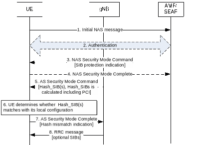
Figure
6.19.2-1. System information protection
The
procedure is as follows.
1.
UE sends an initial NAS message to the network.
2.
(optional) UE performs a primary authentication with the network.
3.
(optional) AMF sends a NAS Security Mode Command to the UE optionally
with indication of support for system information protection. If the
UE receives the indication of support for system information
protection, the UE stores it as part of the security context.
NOTE 1: If the indication of
support for system information protection is indicated in the NAS
SMC, system information protection is applied to the entire system
(i.e., all gNBs in the PLMN).
4.
(optional) UE sends a NAS Security Mode Complete to the AMF.
5.
gNB sends an AS Security Mode Command to the UE with a list of hash
values of MIB/SIBs. The hash values of MIB/SIB are generated by
additionally including the PCI of the cell.
NOTE 2: Hash of MIB and hash
of each SIB are provided separately so that UE can only validate the
MIB and SIBs that it has read.
6.
UE compares the received hash values of the MIB/SIBs with the locally
computed ones and determines whether the MIB/SIBs that it has read
are correct.
NOTE 3: UE may determine to
change the cell if a MitM false base station is highly suspected
based on the received MIB/SIBs from the gNB.
7.
UE sends an AS Security Mode Complete optionally including a list of
MIB/SIB(s) whose hash mismatch is identified in step 6.
8.
(optional) gNB sends RRC message to UE that includes the MIB/SIBs if
UE provided a list of MIB/SIB(s) in step 7.
The
rest of the procedure is same as in TS 23.502 [13].
6.19.3 Evaluation
This
solution fulfils the potential security requirement of the KI #2 when
the UE is in the RRC-Connected state.
This
solution does not fulfil the potential security requirement of the KI
#2 when the UE is in the RRC-Idle or the RRC-Inactive state.
This
solution does not require any additional key provisioning and setup
procedure. This solution only requires transporting the hashes of
MIB/SIBs or MIB/SIBs using secure RRC signalling.
This
solution allows UE to verify not only the MIB/SIBs that it has
already read but also those it would read later time.
This
solution requires RAN node to provide the hashes of all MIB/SIBs to
UE including those that UE is not interested in.
Since
the MIB/SIBs mostly contain the radio configuration information that
is used for the UE to make a connection to the network and stay in
the connected state, enabling to detect the modification of MIB/SIBs
during the connection establishment would significantly reduce the
impact of SI modification by false base station.
Further
addition of PCI in generation of hashes of MIB/SIBs will make it
difficult for the false gNB to replicate as a real one and also if
any modification is done in this operational parameter, leads to
failure of the hash verification at the UE. Addition of this
parameter will increase the toughness in the false relay base station
to mount the MitM attack and restrict wider range of operation
(restricted to a cell).
Note: How the solution can
work with SI that is modified while the UEs are in connected state is
not addressed in the present document.
6.20 Solution #20:
Digital Signing Network Function (DSnF)
6.20.1 Introduction
This solution#20 address the
key Issue#2 "Security Protection of system information".
This
solution is similar to solutions #7 and #11 in that they all protect
system information blocks with digital signatures. Each cell
periodically broadcasts digitally signed system information (SI). A
UE makes cell selection based on a number of criteria including the
authenticity of broadcasted system information. It differs from
solutions #7 and #11 in that it delegates digital signing from gNB to
a network function, namely Digital Signing Network Function (DSnF).
In other words, it is the DSnF, instead of each cell itself, that
compute digital signatures of system information.
While
delegated digital signing may appear counter-intuitive, the concept
of delegation in security has been applied to other problems on the
Internet. For example, many websites use Content Distribution
Networks (CDNs) to improve performance and security (e.g., defending
against DDoS and web attacks). To use CDN, a website would have to
share its TLS certificate and the associated private key with CDN.
This is a common practice for many websites but considered
unacceptable to some websites (e.g., banks) with high security
requirements. CDNs servers are distributed on the Internet and may be
located in untrusted locations. Sharing private keys with those
untrustworthy servers bear high security risks. To solve this
problem, some banks adopted the concept of delegation and implemented
so called Keyless SSL [1]. In Keyless SSL, the private key of a
website (e.g., a bank) is stored in the website's secure environment
(e.g., HSM) and never shared with a CDN server. When a CDN server
needs to use the private key to process data (to decrypt keying
material) during TLS handshaking with a client (e.g., a browser), the
CDN server sends the data (the encrypted keying material from the
client) to the bank website to be processed, receives the results
(decrypted keying material) from the bank website, and continue the
TLS handshaking with the client.
Similarly,
each cell in this proposal does not have the private key for digital
signing. It sends the information blocks to the DSnF to be digitally
signed. While delay is incurred from delegated signing, it is not an
issue since broadcasting information can be pre-signed and signed in
batch (see clause 6.20.2.2.1 for more discussions).
In
addition to the difference in who signs the information blocks, this
solution differs from solutions #7 and #11 in that timing information
that is digitally signed for anti-replay attacks is based on the time
of the signing server, not the time of gNB. This removes the need for
UE to synchronize time with all gNBs.
This
contribution also provides additional consideration on how UE
verifies message freshness and performs cell selection and additional
security analysis of digital signature-based protection.
6.20.2 Solution
details
6.20.2.1 Digital
Signatures of System Information
System
information is digitally signed along with a number of other
attributes, including time information (such as a Time Counter as
proposed in solution #7), physical cell ID, downlink frequency, etc.
More
specifically, the (single) signature is calculated over the following
information attributes:
- PCI (PSS, SSS)
- MIB
- SIB1
- Time counter
- Downlink frequency
Other
SIBs can be signed along with SIB1 or individually depending on their
periodicity.
Signing
of dynamic fields such as SFN are described in clause 6.20.2.2.1.
6.20.2.2 Digital
Signing Network Function (DSnF)
6.20.2.2.0 General
DSnF
exposes service-based interfaces to provide digital signing services
to other network functions. The service interfaces can be named such
as Ndsnf_Digital_Signing_Request and Ndsnf_Digital_Signing_Response.
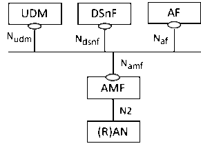
Figure
6.20.2.2-1: Network architecture of DSnF
6.20.2.2.1 Digital
Signing Request
The
signing request allows to request for one digital signature or a set
of digital signatures.
To
request a single digital signature, the request includes a single
group of information elements that need to be digitally signed, such
as [MIB, SIB1, SIB2, Cell_ID, Downlink_Frequency, Time_Counter].
To
request a set of digital signatures, the request can contain a set of
information element groups, each of which will be digitally signed. A
set of information element group can be aggregated to reduce the size
of the request. For example, if all element groups contain the same
information elements except Time_Counter, they can be aggregated to,
for example, [MIB, SIB1, SIB2, Cell_ID, Downlink_Frequency] |
[Starting_Time_Counter, Increment_of_Counter, Number_of_Increments].
This allows a cell to use one request to obtain digital signatures
for a certain period of time, e.g., an hour.
A
Time_Counter is generated based on the time of DSnF. When the first
time a gNB sends to the DSnF an aggregated digital signing request,
the Starting_Time_Counter is set to a known value (e.g., 0) so that
the DSnF will generate the initial Time_Counter based on its local
time. When the gNB sends an aggregated digital signing request for a
next period of time, the Starting_Time_Counter can be set to a
Time_Counter received in the response for the current period of time
(e.g., set to the last Time_Counter in the current period of time).
Note 1: The exact format and
content of the digital signing requests are not addressed in the
present document.
While
MIB and SIB1 are broadcasted in high frequencies (e.g., every 40ms
and 80ms respectively), their content is likely relatively static. To
test this hypothesis, a few days of the MIB and SIB1are collected
from a large mobile operator. The data sets show almost all
information elements in MIB and SIB1 stay static except a very few
(e.g., SFN) that change. This measurement, albeit preliminary, is
encouraging that MIB and SIB1 can be pre-signed.
Some
fields (e.g., cellBarred) may change frequently, e.g., during high
load scenario. To accommodate such fields, at least three options can
be considered:
First,
if such field is of short length (e.g.,1-bit for cellBarred),
signatures can be precomputed for all possible values of such field
during the window it is expected to change. For example, if
cellBarred flag is to change for a certain period of time, signatures
can be generated for both cellBarred=0 and cellBarred=1 for such
period. A signature needs to be paired with its corresponding input
value so that it can be selected properly for a given input. This
results in double the number of signatures for this period. Note this
option is not scalable in case multiple fields are changed.
Second,
when some fields in a SIB are to change, new signatures can be
requested from DSnF. Usually SIBs do not change often (e.g.,
unchanged for about 3 hours). In the special case (e.g., in high
load), SIBs may change more frequently than usual, but the interval
between changes is usually reasonable to allow UE to be paged to
reacquire a new SIB. Thus, it should also allow a gNB to request new
digital signatures from DSnF.
Third,
a temporarily public and private key pair and a short-live
certificate (e.g., valid for an hour) can be issued by DSnF to a gNB
during such circumstance to allow gNB to generate the signatures
itself. This short-live certificate can be signed by the DSnF digital
signing certificate, thus chained to the trust anchor. Although it is
usually a CA certificate that issues another certificate, IETF is
working on to allow an entity certificate (such as the DSnF
certificate) to sign a short live certificate. Security risk from
compromising a private key associated with a short-live certificate
is minimal since it expires quickly.
Note 2: how to broadcast
short-lived certificate is not addressed in the present document..
6.20.2.2.2 Digital
Signature Computation
Upon
receive a digital signing request, DSnF selects a signing key (if
multiple signing keys are supported) and compute the digital
signature over the information elements to be protected.
Note: The digital signature
algorithms to be used and how to compute digital signatures are not
addressed in the present document..
6.20.2.2.3 Digital
Signing Response
A
digital signing response includes one or a set of the digital
signatures, along with other information (e.g., public key
identifier) to facilitate the verification of the digital signatures.
Note: The exact format of the
response is not addressed in the present document..
6.20.2.2.4 Short-term
Certificate: request and usage
A
concrete instantiation of the short-term certificates taking into
account how to achieve efficient replay protection and low overhead
towards the DSnF is as follows.
Each
base station has to send a request to sign static information to the
DSnF where the static information is considered to remain static
during 10.24 s, i.e., the time it takes for the SFN to repeat. Upon
reception of the signing request, the DSnF signs the static fields of
the SI as well as (i) DSnF starting time for which this set of data
is valid, the gNB's SFN value for this DSnF starting time
(T_DSnF(gNB's SFN=0)), as well as a short-term public-key that can be
used by the UE to verify dynamic data signed by the base station in
this period of time of 10.24 s. The DSnF sends this signed data,
whose validity is limited to 10.24 s, together with the private key
associated with the signed short-term public key to the gNB.
When
a period of 10.24 s starts, the gNB starts broadcasting the
short-term certificate for this period of time. It is left for
normative phase in which SIB this information is broadcasted.
Furthermore, the base station broadcast the SI dynamic fields, in
particular the SFN, that are signed with the corresponding short-term
private key associated to this period of time.
Upon
reception of both static and dynamic data, the UE can obtain the time
in which the SI has been broadcast (T_Broadcast_SI) as/
T_Broadcast_SI
= T_DSnF(gNB's SFN=0) + 10*SFN
The
UE checks the freshness of T_Received_SI comparing it with its
current UE time.
There
are two main alternatives for the signing technology used in the
short-term certificates:
An option is to use the same
type of algorithm as in the DSnF.
NOTE: Since the digital
signature only needs to remain valid for a short period of time,
10.24 s, the key sizes can likely be shorter, e.g., an ECDSA curve
with a length of 224 (equivalent security of 112 bits) might be used
instead of a curve of length 256 (equivalent security of 128 bits).
This improves performance, e.g., it decreases the communication
overhead. Specific parameters are out of scope of the present
document and would be defined in the normative phase.
Another option is the use a
type of hash chain solution as TESLA. In a concrete instantiation,
the DSnF signs the anchor of a hash chain with 64 links assuming that
a hash chain link is needed every 160 ms, i.e., each step of 16 SFNs
is linked to a new hash chain link (see note 2). This hash chain is
then h64 h63
…h1
h 0
seed where h64 is the public anchor of the hash chain and
seed is the secret seed of the hash chain. h0=HASH(seed)
and hi = HASH(h{i-1}) with i = 1, …, 64 and
HASH() is a cryptographic hash function. The public anchor is signed
by the DSnF as part of the static data and is the seed of the hash
chain is provided to the gNB in a secure way. When the base station
broadcasts a message, it discloses the message authentication code
(MAC) that is computed with hash chain link that is only disclosed in
the following message. For instance, the first message M0
will contain the current values of dynamic fields denoted here as m0,
a MAC of the dynamic fields computed with h63. Next to it,
M0 also includes the current hash chain link, in this
case, this corresponds to the anchor h64, i.e.
NOTE 2: This fits the
periodicity of 160 ms of SIB1 as described in TS 38.213, clause 13. A
higher frequency can be used if it decided to sign MIB/SIB1 more
frequently in order to allow UEs to take a decision faster regarding
the trustworthiness of a base station.
M0 = m0,
h64, MAC(m0, h63)
The
UE needs to buffer m0 and the MAC that can be verified in
the following timeslot (after 160 ms) when the following message M1
= (m1, h63, MAC(m1, h62)
is received. In particular, the verification consists in checking:
(i) whether h64 = HASH(h63) and the message
authentication code is correct.
The
following diagram illustrates how MIB and SIB1 are digitally signed
by DSnF and how a hash chain is generated and used to verify dynamic
fields (e.g., SFN). It shows that MIB can be extended to include some
bits of a MAC if not a complete MAC due to its constraint in size,
and SIB1 can be extended to include a MAC. When the MAC is included
in MIB or SIB1, the corresponding hash key used to generate the MAC
may be disclosed in a new SIB that is broadcasted after SIB1. In this
way, a UE can verify both static and dynamic fields after acquiring
the new SIB.
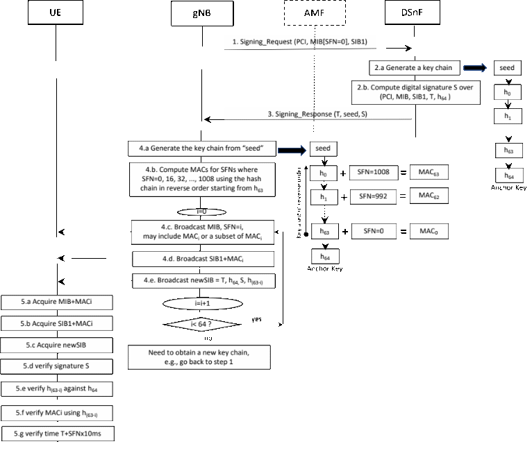
Figure
6.20.2.2.4-1: Authentication of MIB and SIB1 with a combination of
digital signature and TESLA
6.20.2.3 gNB
Behaviours
6.20.2.3.0 General
A
gNB supporting the integrity protection of system information makes
periodically digital signing requests to DSnF to obtain the digital
signatures of system information blocks and place the digital
signatures in a repository where it can be retrieved to be
broadcasted along with the corresponding protected system information
blocks. For non-occurring SIBs, gNB can send the signing request to
the DSnF on demand.
6.20.2.3.1 Requesting
Digital Signatures
A
digital signing client is proposed on gNB. The client ensures that a
digital signature is always available for a system information block
under protection prior to the time slot the system information block
is scheduled to be broadcasted.
gNB
makes digital signing requests via N2 message to AMF/SEAF, which then
generates a service request to DSnF. Alternatively, the client on gNB
may make a direct request to the DSnF via HTTPS if this is allowed.
Two
new NG RAN procedures can be defined between gNB and AMF/SEAF to
support the signing of SIBs by DSnF.
- SIB Digital Signing Request:
gNB to AMF/SEAF
- SIB Digital Signing
Response: AMF/SEAF to gNB
These
procedures use non-UE associated signalling, as with some other
NG-RAN procedures (e.g., Uplink/Downlink RIM Information Transfer
[17]).
6.20.2.3.2 Receiving
Digital Signatures
gNB
receives digital signing responses from DSnF via AMF/SEAF over N2
interface. DSnF may also push digitally signed data to gNB.
Note: The N2 messages for
digital signing responses are not addressed in the present document..
6.20.2.3.3 Broadcasting
Digital Signatures
As
proposed in Solution #7, the digital signature of System Information
can be carried in another System Information Block. This new SIB
includes the digital signature along with supplement information to
facilitate the verification of the digital signature. Examples of
those supplement information include:
- Information elements
indicating the SIBs that are being protected
- information elements for
anti-reply attacks, such as PCI, downlink frequency, Time Counter,
etc.
- information elements for
selecting a public key for signature verification, such as key
identifier
- information elements for
constructing certificate chains if needed
- information elements for
signing algorithm selection if multiple digital signature algorithms
are supported
Note: The exact format of the
new SIB is not addressed in the present document..
6.20.2.4 Procedures
for digital signature request and response
The
overall procedure for gNBs to request digital signatures is given
below.
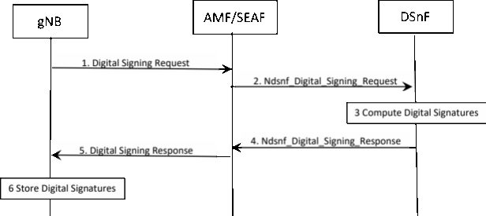
Figure
6.20.2.4-1: Procedure for DS request
SIB
Digital Signing Requests and responses have impact on the N2
interface by consuming network bandwidth and adding processing
overhead.
The
actual bandwidth consumption depends on the frequencies of signing
requests and responses being exchanged between gNB and AMF. Static
fields are signed by DSnF and dynamic fields (e.g., SFN) are signed
by gNB (e.g., using secondary signing keys such as a short-lived key
pair of shorter key length or symmetric keys as used in TESLA [24]).
Periodicity of DSnF signing of static fields and secondary signing
keys is the maximum duration of SFN cycle, which is 10.24 seconds (10
ms x1024). This means that a DSnF signed messages can be
rebroadcasted for every 10.24 seconds.
Note: Evaluation of the usage
of the TESLA protocol is not addressed in the present document..
Further
assume that a SIB is of maximal size of 2976 bits (372 bytes) [2] and
the digital signature algorithm is 256-bit ECDSA with the digital
signature of 64 bytes. It is assumed that the response also contains
secondary signing keys. If TESLA is used, the secondary signing keys
are a chain of 1023 keys of 256bit each. However only the first key
on the chain needs to be sent by DSnF to gNB, since the rest keys can
be computed from the first key. Note the last key is signed by DSnF
as the anchor key, and the rest keys on the chain are used in
reversed order to sign dynamic fields (e.g., SFN). In this case, a
signing response is of 192 bytes (64 bytes + 32 bytes) considering
only the signature and the secondary signing keys. If a short-lived
key public key is used to sign dynamic field, the response would be
larger.
Without
considering the overhead from other data (e.g., packet headers), the
bandwidth consumption for each request and response is of 372 bytes
and 64 bytes respectively.
Without
considering response aggregation, there would be 8,438
(24x3,600/10.24) signing requests and responses exchanged between a
gNB and an AMF. Without considering the bandwidth overhead from other
accompanying data in each request and response, the total bandwidth
consumption from signing requests and responses are about 3.2 MB and
0.8 MB respectively. When the number of SIBs to be protected
increases, the bandwidth consumption from a signing request
increases. When signing requests are aggregated, bandwidth
consumption from a signing request is reduced. For example, if each
signing request asks for 60 digital signatures (to be used for next
10 minutes), the bandwidth consumption from sending signing requests
would be reduced by 60 folds to 50K bytes per day.
From
AMF perspective, one AMF may interact with a number of gNBs. Thus,
the bandwidth consumption at the AMF is proportional to the number of
served gNBs and the number of cells configured at each gNB and
inversely proportional to the number of requested signatures in each
signing request. The table below provides bullbalk estimates of
bandwidth and processing overhead at AMF, based on the estimation at
gNB (with one configured cell) as described above.
Frequency
of broadcasting a new signature
|
Total
# of signatures required per day
|
#
of signatures asked per signing request
|
Total
# of signing requests per day
|
Total
bandwidth overhead (bytes) at gNB per day
|
#
of served gNBs per AMF
|
Total
# of messages processed at AMF
|
Total
bandwidth overhead at AMF (bytes)
|
Every
10.24 seconds
|
3600
x 24/10.24=8438
|
1
|
8438
|
Signing
Requests: 3.2M
Signing
responses: 0.8M
|
100
|
Signing
requests from all gNB:
=
Signing
responses to all gNB:
=
843,800
|
Signed
requests from all gNB: 314M
Signing
responses to all gNB: 81M
|
1000
|
Signing
requests from all gNB:
=
Signing
responses to all gNB:
=
86,400,000
|
Signed
requests from all gNB: 32G
Signing
responses to all gNB: 800M
|
60
(each
request asks 60 signatures to be used for 10 minutes)
|
6x24=144
|
Signing
Requests: 50K
Signing
responses: 0.8M
|
100
|
Signing
requests from all gNB:
=
Signing
responses to all gNB:
=
144,00
|
Signed
requests from all gNB: 5.4M
Signing
responses to all gNB: 81M
|
1000
|
Signing
requests from all gNB:
=
Signing
responses to all gNB:
=
1,440,00
|
Signed
requests from all gNB: 53.6M
Signing
responses to all gNB: 800M
|
Although
gNB needs to send signing requests and receive signing response
periodically, a constant connection between gNB and AMF may or may
not need to be maintained. In the example used above, a gNB sends a
signing request to AMF every 10 minutes. A constant connection could
be maintained between gNB and AMF, but such connection could also be
closed and reopen for each request. Optimization can be left to
implementation.
6.20.2.5 UE
Behaviours
6.20.2.5 General
6.20.2.5.0 Introduction
There
will be two types of UEs based on whether or not they support digital
signature verification. If a UE does not support digital signature
verification, its behaviour in cell scanning and cell selection
remain unchanged. If a UE supports digital signature verification,
its behaviour in cell scanning and cell selection needs to be
modified to take into consideration the results from signature
verification.
6.20.2.5.1 Trust
Anchors in UE
To
verify the digital signatures from gNBs, UE needs to be preconfigured
with a list of trust anchors. To support roaming, the trust anchor of
each roaming partner network needs to be preconfigured in the UE.
Trust anchors can be raw public keys or public key certificates. If
the trust anchor is a raw public key, one trust anchor is required
for each roaming partner (unless a key is shared among multiple
roaming partners, e.g., those under the control of a common
operator). If the trust anchor is a public key certificate, the
number of trust anchors in the UE can be significantly reduced if
common Certification Authority (CAs) are used among operators.
There
are four models of establishing Certification Authorities to support
the signing of SIB messages, which have been adopted by other
industries.
First,
a common root CA is established among global mobile industry to issue
intermediate CA certificates or signing certificates to each mobile
operator, and GSMA appears suitable for hosting such root CA. This
model is adopted by the cable industry.
Second,
regional root CAs are established to serve mobile operators within
that specific region. This model is adopted by Internet Registries
(RIR) to support Resource Public Key Infrastructure (RPKI) for
validating IP prefix origin in the Border Gateway Protocol (BGP),
with each of the five Regional Internet Registries (RIR) hosting its
own root CA.
Third,
one or several security companies can be selected by the mobile
industry as the trusted third party to issue intermediate CA or
signing certificates to mobile operators. Since mobile operators have
been partnering with SIM card vendors for long time, SIM card vendors
appear suitable for hosting such root CAs. This model is adopted by
WiFi Alliance.
Fourth,
each mobile operator establishes or leverages its current CAs to
issue signing certificates. Many mobile operators already have
internal CAs for other purposes, which can be leveraged to sign
system information. For scalability analysis of a CA model, the total
number of trust anchors resulted from a CA model needs to be
considered.
In
the first model, there is a common root CA for all operators. Thus,
only one trust anchor is required.
In
the second model, regional root CAs are used by the operators in each
region. The number of trust anchors depend on the number of regions
involved. For RPKI, there are five regions resulting in five trust
anchors. If each country is considered a region and share a common
CA, there would be about 180 trust anchors.
In
the third model, public CAs are leveraged to issue public
certificates for operators. Thus, the number of trust anchors depend
on the number of public CAs that are chosen by mobile industry for
this service, which could be in the range of a few to tens.
In
the fourth model, each operator establishes its root CA without
depending on any third party. The number of trust anchors depends on
the number of roaming partners chosen by an operator, which is
usually around 300. In an unlikely case that a mobile operator
chooses every mobile operator in the world as its roaming partner,
the number of trust anchors would be about 1250 according to GSMA.
To
summarize, In the most efficient scenario (i.e., model 1), only ONE
single trusted anchor is needed. in the least efficient scenario
(i.e., model 4), there will be about 300 to 1250 trust anchors.
These
four models are not mutually exclusive and can also be adopted in a
hybrid manner, based on the preference of each operator. Thus, a
realistic number of trust anchors will be fewer than three hundreds.
The end result is a list of CA certificates, which can be exchanged
among roaming partners or via a trusted third party (e.g., GSMA). For
example, GSMA provides a Network Settings Exchange program, which can
be leveraged to maintain the list of trusted CA certificates.
This
list of CA certificates needs to be provisioned into UEs as trusted
anchors to allow UEs to verify signatures carried in the SIB
messages. The following table provides the storage requirement of an
ECC CA certificate of different key size and security level:
Table
6.20.2.5.1-1: Brainpool-r curves and ecdsa-with-SHA256
Key
size (Bit)
|
CA
Certificate
|
DER
Format (bytes)
|
PEM
Format (bytes)
|
160
|
462
|
680
|
192
|
513
|
749
|
224
|
530
|
774
|
256
|
545
|
794
|
320
|
577
|
839
|
384
|
609
|
879
|
512
|
677
|
973
|
Assuming
a key size of 256-bit, the total storage requirement of trust anchors
in the best case, normal case, and worst case of roaming scenarios is
545x1 bytes, 545x300=160K bytes, and 545x1250=665.3K bytes
respectively.
Since
USIM has limited memory space, it may not be possible to store all
needed trust anchors inside the USIM if the number of the needed
trust anchors is high. Thus, shared CAs appear desirable or
alternative secure storage may be used to store trust anchors.
Since
such a list is public information and available to both operators and
vendors, it can be provisioned into UEs during manufacturing (e.g.,
by USIM vendor, chip vendor, or UE vendor). Trust anchors can also be
provisioned during UE onboarding and updated after registration
(e.g., based on the NAS procedure as proposed in solution #7) or
over-the-air updates by an operator. This allows for deployment
flexibility and trust anchor update when the home operator or any of
its roaming partners changes its trust anchor.
An
operator can create its own raw key pairs as the trust anchors, e.g.,
by reusing the process of generating and provisioning of the key pair
for SUPI protection. Note that key pair is for digital signature in
this use case, while the key pair for SUPI protection is for key
encryption. Thus, their key usages are different, but they can follow
the same key generation and provisioning process.
Note: It is not addressed in
the present document. which CA model(s) described above will be
adopted by 3GPP and how and where they would be standardized.
Trust
anchors and DSnF certificates should include a scope (e.g., PLMNs,
physical areas, etc.) and the scope of a DSnF certificate is supposed
to be within the scope of the issuing trust anchor. When a UE
receives a signed broadcasted SI, it verifies not only the signature
of the signed SI, but also the certificate chain from the signing
certificate (e.g., DSnF certificate) toward a trust anchor, including
verification of the scope within each certificate on the chain. The
specific parameters of certificate scope can be specified during
normative phase.
For
instance, a UE might contain a trust anchor associated to an NPN
located in a very specific area. It is extremely important to check
that the private key associated with the DSnF certificate issued by
this NPN trust anchor is not misused to sign SI outside the scope of
the NPN designated area.
6.20.2.5.2 Cell
Scanning
UE
scans all supported bands and frequencies for available cells. UE
stores the Physical Cell Identifier (PCI) computed based on the
Primary Synchronization Signal (PSS) and Second Synchronization
Signal (SSS) of each scanned cell. UE compares a new scanned PCI with
the existing ones to detect conflict. If there is a conflict, the UE
should obtain a direct time indication from the DSnF (as described in
Clause 6.20.2.5.3), and use this to verify the consistency of
received time counters (as described in Clause 6.20.2.5.5).
Note: this procedure needs
further study.
6.20.2.5.3 Verification
of Digital Signatures
The
UE, if configured with a setting to verify the authenticity of system
information, acquires the system information block carrying the
digital signatures. UE uses the acquired system information block to
determine which other system information blocks are digitally signed.
With this information, UE can compute a hash over the protected
system information along with supplement information elements in the
acquired system information block. UE then uses key identifier to
retrieve the public key corresponding to the signing private key.
With the computed hash, and the public key, a digital signature can
be verified accordingly depending on the digital signing algorithm
being used.
Note: The exact format of the
new SIB and signature verification procedure are not addressed in the
present document..
6.20.2.5.4 Verification
of Time Counter
To
mitigate replay attacks, the freshness of the message needs to be
verified. This is usually done by comparing the timer counter in the
message against UE local time. If the time difference is within a
tolerant window, the message is considered fresh. Otherwise, the
message is considered expired.
Such
verification is simple. However, it may result in denial of service
if the UE time is manipulated (e.g., clock is set to a future time).
Note that time variants (e.g., time counters) in the signed messages
are generated by DSnF (not by gNBs), which can be trusted to be
accurate.
If
a newly received time counter fails verification, either the message
is replayed, or the UE time is inaccurate (e.g., manipulated). To
mitigate the potential time attacks against UE, time counters
received from multiple cells can be checked.
More
specifically, when the digital signature from each cell is valid but
the Time Counters recently received from multiple cells fail
verification, the UE checks the consistency of the Time Counters from
those cells. If they are close to each other, it indicates the UE
time is out of sync with the network. If the Timer Counters are
inconsistent, it indicates the presence of attacker (e.g., by
replaying old information). In either case, UE can select the cell
with the highest time counter, since a relayed time counter will
highly likely not be the latest.
If
the consistency of time counters received from multiple cells is
checked, the time counter may not be checked against UE local time.
This may allow to eliminate the need of time synchronization among
all UEs and the network.
In
the following situations it would be beneficial for a UE to obtain a
direct time indication from the DSnF:
1) A UE has access to too few
base stations, e.g. a single base station.
2) A UE detects multiple cells
with the same PCI.
3) A UE observes time values
broadcasted by multiple base stations, but those time values are not
close to each other, indicating a possible attack.
4) A UE observes time values
broadcasted by multiple base stations, the values are close to each
other, but the freshness checks fail.
5) A UE requires high security
level and it requires a 100 % trusted time source,
6) It is the first time a UE
is started, or
7) The UE requires learning
the DSnF time very quickly, i.e., without scanning all frequencies.
In
the above situations, the UE should follow the subsequent
(high-level) process: the UE scans looking for cells. As soon as it
detects a base station with a high enough received signal strength,
the UE acquires MIBs and SIBs and checks the signature. If the
signature is valid, then, the following (high-level) protocol is
triggered:
- UE computes a nonce, e.g., a
randomly generated 128-bit long number and sends it to the DSnF as
part of a request message to the DSnF for a reference time. At the
time of sending, the UE starts a timer, denoted UE_timer. The DSnF
signs the received nonce and its current DSnF time
(Signed_DSnF_time), and possibly other information such as any known
processing time at the DSnF (e.g., time required to compute the
digital signature). The DSnF sends the signed information back to the
UE.
NOTE: For requesting and
receiving a signed reference time from the DSnF, existing protocols
such as NTP could be re-used. Further details can be left to stage-3.
- The UE stops its timer upon
reception of the message. The UE checks the validity of the signature
and the presence of the nonce it included in the first message. If
both checks are correct and the UE_timer does not reach a maximum
time threshold, e.g., 40 ms., the UE uses the received reference time
for further processing (as described in clause 6.20.2.5.5). If the
protocol does not return a reference time, e.g., because no reply is
received, the UE can then perform certain actions. As a first step,
the UE can retry a number of times. If no message is received, the
communication with the base station is aborted.
This
protocol should be triggered as soon as feasible before any UE
related information is disclosed, for instance, the nonce could be
sent together with the RRCSetupRequest or with the NAS identity
response. DoS countermeasures can be incorporated to prevent an
attacker from misusing this protocol to perform DoS attacks, e.g.,
against the DSnF.
Note: The exact format of the
new SIB and signature verification procedure are not addressed in the
present document..
6.20.2.5.5 Cell
Selection and Reselection
Currently,
cell selection and reselection are based on signal strength, i.e.,
the cell with the strongest signal gets selected. To prevent false
base station from being selected, cell selection and reselection
procedures need to be improved. More specifically, in addition to
signal strength, cell selection and reselection needs to take into
consideration of the authenticity and freshness of system
information.
Changes
to cell selection procedures need to be decided by RAN. But here is
an example of how it may work:
UE
scans the cells in all supported frequencies, record their PCIs, and
measure their signal strengths. . In case a UE detects cells with
conflicting PCIs, the UE should temporarily exclude these cells from
the selection process and obtain a reference time indication directly
from the DSnF and use this to verify the consistency of received time
counters. Assume there are N cells with good signals, which are
ordered based on signal strength.
For each of the N cells:
acquire MIB and SIBs;
If there is no digital
signature, mark the cell as unprotected.
If there is digital signature,
verify the digital signature and time counter;
if both digital signature and
time counter are good, proceed with the cell and break; /* this is
the usual case, i.e., in the absence of an attacker */
if either digital signatures
or time counter is bad, mark the signature as bad and store the time
counter;
go to the next cell;
End of for loop;
By
the end of the above procedure, an authentic cell should have been
selected in normal scenario. If no cell has been selected, it could
be one of the following scenarios:
a) some digital signatures are
good but their associated time counters are bad. In this case,
assuming no duplicate PCIs were detected, select the cell with the
good digital signature and the highest time counter.
b) all digital signatures are
bad. In this case, the time counters become irrelevant, since they
can be forged.
c) cells had conflicting PCIs
and were temporarily excluded from the selection process. In this
case, the UE may further analyse these cells and check if the
signatures are valid. If so, the UE may keep the cell with the most
recent system information/time and exclude the cell with older system
information/time. If all remaining cells have the same PCI and the
same time counter, the UE should ignore these cells.
By
this stage, if no cell has been selected, it means all cells
supporting digital signing have failed the signature verification or
have conflicting PCIs and same time counter. The UE is left with
three types of cells:
a) cells supporting digital
signing but with bad signatures
b) cells not supporting
digital signing at all (no signatures)
Cells
that cannot be trusted because they have conflicting PCIs and same
time counter. Such situation is highly likely due to the tampering of
the message by an attacker. From the security perspective, the UE
should go temporarily out of service instead of risking the selection
a faked cell. Such approach follows the security principle of failing
securely, i.e., the integrity of a system should remain even
availability is lost. Note this principle is widely adopted in system
security design in which a system upon the detection of attacks often
aborts or reboots.
Note: RAN impact about the
cell selection and reselection taking into consideration of security
related factors is not addressed in the present document..
6.20.2.6 Security
Analysis
6.20.2.6.0 General
With
the integrity protection of system information, an attacker cannot
broadcast arbitrary system information and is forced to replay
attacks or denial of service attacks. Potential downgrade attacks are
described .
6.20.2.6.1 Mitigating
Replay Attacks
There
are two types of replay attacks, local replay attacks (LPA) and
remote replay attacks (RPA).
Local
Replay Attack (LPA) is an attack in which a false base station
receives a broadcast information and rebroadcasts the same
information. This can ensure that Time Counter in the replayed
messages is current. However, it will have to use the same PCI as the
original cell. Otherwise, the digital signature verification will
fail. When two same PCIs are received by UE, it will detect the
conflict and obtain a direct time indication from the DSnF and use
this to verify the consistency of received time counters.
Depending
on how the attack is performed, a local replay attack may result in
the deselection of a legitimate cell. This would be equivalent to
other types of attacks such as radio jamming or bit flipping of a
legitimate cell.
Remote
Replay Attack (RPA) is an attack in which a false base station
records all broadcasting information including signatures from a
remote location, tunnel the messages to another location, and
re-broadcast. This is often referred to as wormhole attack [2]. In
such attack, the PCI used by the false base station may not result in
a conflict.
Wormhole
attack requires the false base station to have Internet connectivity
to receive the broadcasting information from a remote location. This
requires the false base station to have a UE component to connect to
the legitimate cell. However, the attacker's UE may also
connect to the false base station itself. To prevent the attacker's
UE from connecting to the false base station itself, the attacker
usually needs to know in prior the PCI used by the false base station
and statically configures the UE to not connect to the PCI used by
the false base station. This is how the LTE relay used in aLTEr and
IMP4AT attacks is implemented (confirmed by the author). Since in
remote replay attacks, the false base station does not know which PCI
will be successful, it becomes difficult, if not impossible, for the
malicious UE to preconfigure itself. Thus, RPA may not be practical
to launch.
Even
if remote replay attack is possible, there will be noticeable delay
in rebroadcasted messages, due to the transmission and process delay
over the tunnel. In other words, the time window during which remote
replay attack can be successful is limited. If the consistency of
time counters among multiple cells is checked, remote replay attacks
can also be detected and prevented, since the messages from authentic
cells will be more recent than replayed messages.
If
needed, additional information such as the location information of
each cell can be included and digitally signed in the broadcasting
messages to counter the remote replay attack.
6.20.2.6.2 Mitigating
Denial of Services
DoS
can be mounted by a number of methods, including but are not limited
to,
- manipulation of chosen
fields in MIB/SIBs,
- arbitrary bit flipping of
signed MIB/SIBs,
- replay of signed MIB/SIBs,
- broadcast MIB/SIBs with
invalid signatures
- manipulation of timing
information in UE or gNBs.
Since
MIB/SIBs are digitally signed, DoS based on manipulation of chosen
fields in MIB/SIBs (e.g., barred cell) will be detected and
prevented.
Arbitrarily
overwriting a bit (e.g., using SigOver[23]) in a signed MIB/SIBs will
result in the failure of digital signature verification. If
broadcasted MIB/SIBs from all cells in a location are all tampered
with and the stored MIB/SIBs in a UE have all expired, the UE may be
out of service. In this case, it is equivalent to some other known
attacks (e.g., tampering with synchronization signals or physical
jamming). Such risk appears acceptable in radio networks.
Replaying
of signed MIB/SIBs can cause conflict in PCIs which may result in the
de-selection of a cell. If there is only one cell in a location, the
UE may be out of service. The risk from this type of attack is
similar to the bit-flipping attacks.
An
attacker can broadcast MIB/SIBs with invalid signatures. UE will
detect the invalid signature and try to select another cell. The
attacker can then change its frequency and PCI and broadcast MIB/SIBs
with invalid signatures again. The UE may think it is trying with a
different cell but end up trying with the same attacking cell. This
attack is possible if the UE tries to do a cell scanning after each
failed cell. To mitigate such attack, the UE should try with each of
the cells from a list obtained from one scan.
If
UE's time is manipulated, e.g., to a time in the future, time
counters in all broadcasting messages may fail validation. In this
case, UE will select a cell with the most recent time counter to
continue to be served.
If
the time of a gNB is manipulated, it does not result in any security
issues, since the time counters in the broadcasting messages are
generated by DSnF, whose time can be trusted.
6.20.2.6.3 Mitigating
downgrading attacks
It
is expected that gNBs with digital signature protection will be
deployed overtime and there will be areas where cells supporting
digital signature protection co-exist with cells not supporting this
security feature.
An
attacker may attempt to intercept digitally signed system
information, tampered with the information, e.g., by removing all
digital signature related information, and rebroadcast tampered
information. This attack is possible but is equivalent to a false
base station broadcasting its own faked system information. As long
as the protected system information can be received by a UE, UE would
prefer protected system information over unprotected information.
A
protected gNB may be overloaded if there are too many UEs in the area
prefer and select the cell. In this case, normal radio resource
management procedure can be invoked by the gNB to limit the number of
UEs to be served (e.g., using cellBarred=1). As a result, UEs may
have to connect to legacy cells to stay in services if all protected
gNB are overloaded. If there is a false base station in this area, it
may be able to attract UEs to connect. However, a false base station
cannot predict when such congestion would occur. A false base station
can also try to proactively cause congestion in protected gNBs to
force UEs away from the protected gNBs and then lure the UE to
connect to the false base station. However, such proactive attacks
could expose the false base station. Overall, security risk from
downgrading attacks, albeit low, could exist prior to the full
deployment of this solution.
An
attacker may attempt to cause the digital signatures from all cells
to fail verification. In this case, UE will go temporarily out of
services, equivalent to DoS attacks.
6.20.3 Assessment
using clause A.3
6.20.3.1 UE aspects
UE
needs to be provisioned of a list of trust anchors (see clause
6.20.2.5.1).
UE
should support secure storage of trusted anchors.
UE
needs to take into consideration results from signature and freshness
verification of SI for cell selection and reselection (see clause
6.20.2.5).
Note: further assessment is
needed, e.g., SIB acquisition, (gNB) certificate/key acquisition
depending on the solution variants.
6.20.3.2 UE actions
upon detection of invalid signature
Upon
detection of invalid signature, UE should not select the cell as
described in clause 6.20.2.5.5.
6.20.3.3 Threats that
are mitigated by signed SI messages
Man-on-the-side
attacks (e.g., SigOver), man-in-the-middle attacks (e.g., replay and
relay), and some denial of services (e.g., from tampering with SI)
are mitigated.
6.20.3.4 Threats that
are not mitigated by signed SI messages
Some
denial of services (such as from bitflipping or radio jamming of all
available cells) cannot be mitigated.
6.20.3.5 Provisioning
of keys
Trusted
anchors need to be provisioned into UE during manufacture,
onboarding, or after registration.
6.20.3.6 RAN aspects
gNB
needs to request digital signatures and obtain short-lived keys from
DSnF.
gNB
needs to sign dynamic fields (e.g., SFN) using short-lived keys.
gNB
needs to broadcast digital signatures along with SIs
Note: further assessment is
required, e.g., certificate/key broadcast depending on the solution
variants.
6.20.3.7 VPLMN
aspects
If
the trust anchor of VPLMN is provisioned into a UE, the UE is
protected when accessing the VPLMN.
6.20.3.8 HPLMN
aspects
If
the trust anchor of HPLMN is provisioned into a UE, the UE is
protected when accessing the HPLMN.
6.20.3.9 Network
sharing aspects
When
a gNB is shared by multiple PLMNs, the operator owning the gNB can
sign SIs as long as the trust anchor of the gNB operator is
provisioned into a UE.
6.20.3.10 Roaming
aspects
See
clause 6.20.3.6 VPLMN aspects.
6.20.3.11 Regulatory
aspects
Regulatory
requirements, if there are any, can be supported.
6.20.3.12 Signature
schemes
Potential
signature schemes include:
- ECDSA (recommended with
named curves)
Note a: the ECDSA profile for
SUCI can be reused.
- RSA
- others
NOTE: The hash based approach
in 6.20.2.2.4 only requires a hash function.
6.20.3.13 Signature
length
RSA:
256 bytes
ECDSA:
64 bytes
6.20.3.14 Resistance
against Quantum Computing
Next
to the general remarks in Appendix A.3.14 and Table A.3.14-1, hash
functions are only mildly affected by quantum computers [29]. Thus,
the hash based approach in 6.20.2.2.4 is a potential quantum
resistant solution for suitable parameters. See [30] for a related
application. Note that this requires the trust anchor of the hash
chain to be securely deployed by means of a quantum resistant
algorithm.
The
expected performance and properties of quantum resistance algorithms
and solutions should be considered to facilitate interoperability in
the future. For instance, Table 6.20.3.14-2 describes the features
(pros/cons) of different potential configurations based on Clause
6.20.2.2.4 assuming some specific digital signing algorithms.
Table
6.20.3.14-1
Configuration
|
DNsF
signing algorithm
|
gNB
signing algorithm
|
Features
|
|
Quantum
resistant
|
Message
size to distribute the short-term certificate
|
Do
short-term certificate and/or signature fit in a single SIB?
|
#1
|
ECDSA
|
ECDSA
|
No
|
Short:
ECDSA signature using DSnF's ECDSA private key on a short-term gNB
ECDSA public-key
|
Yes
|
#2
|
ECDSA
|
Hash
Chain-based
|
No
|
Short:
ECDSA signature using DSnF's ECDSA private key on the new gNB's
hash chain anchor.
|
Yes
|
#3
|
Rainbow
|
Rainbow
|
Yes
|
Long:
Rainbow signature using DSnF's rainbow private key on a short-term
gNB's rainbow public-key (long)
|
No:
1) the signature fits; 2) the short-term certificate does not fit
in a single SIB.
|
#4
|
Rainbow
|
Hash
Chain-based
|
Yes
|
Short:
Rainbow signature using DSnF's Rainbow private key on the new
gNB's hash chain anchor.
|
Yes
|
#5
|
Falcon
|
Falcon
|
Yes
|
Medium:
Falcon signature using DSnF's Falcon private key on a short-term
gNB Falcon public-key
|
No:
1) a signature generated by the gNB does not fit in a SIB; 2) the
short-term certificate does not fit in a single SIB.
|
#6
|
Falcon
|
Hash
Chain-based
|
Yes
|
Medium-short:
Falcon signature using DSnF's Falcon private key on the new gNB's
hash chain anchor.
|
No:
1) only the signature fits; 2) the short-term certificate does not
fit in a single SIB.
|
Based
on the numbers in Table A.3.14-1, the expected sizes for the public
key + signature of configuration #4 (short), configuration #3
(medium), and configuration #5 (long) are 114 bytes, 1563 bytes, and
58.9 kB, respectively. The first value assumes that the hash chain
anchor is 48 bytes long.
6.20.4 Evaluation
This
solution addresses KI#2 and fulfils its potential security
requirement by providing message authenticity to prevent unauthorized
modification and mitigate replay of system information independently
of UE state.
This
solution uses a digital signing network function (DSnF) located at
core network to sign system information, allowing for proper
authorization of information signing (e.g., only entity legitimately
originating a message is allowed to request the signing of that
particular message). For example, gNB is allowed to request the
signing of SIB1, but may not sign SIB6 since the latter is a public
warning message and should not be originated by a gNB. This helps to
mitigate security risk in the event that an entity gets compromised.
This
solution requires UEs to be provisioned with a trust anchor (e.g.,
the root public key certificate of a network) to verify the
authenticity of messages signed by a particular network. An operator
deploying this solution can prevent its own subscribers from
accepting unauthorized system information within its own network. If
a roaming partner also deploys this solution and the home network
operator also provisions the root public key certificate of the
roaming partner network into a UE, the UE is also prevented from
accepting unauthorized system information over the roaming partner's
network.
This
solution requires new system information block(s) to carry a digital
signature and the certificate chain used to verify the digital
signature.
This
solution requires gNBs to communicate with DSnF in the core network
to get static system information signed and obtain temporary keys to
sign dynamic information elements (e.g., SFN).
This
solution supports incremental deployment with incremental security
benefit (i.e., protecting UE against unauthorized system information)
in that it can be deployed over time by an operator independently.
Note: Different solution
variants may require separate evaluation.
6.21 Solution #21:
Certificate based solution against false base station for Non-Public
Networks
6.21.1 Introduction
This solution leverages the
certificate framework outlined in solution #11 (Certificate based
solution against false base station) and provides
asymmetric-key-system encryption to unicast signalling messages
before the primary authentication is completed as well as provides
digital signatures to broadcast system information messages for a
standalone NPN. By NPN, it is meant a private 5G network that is
independent from a PLMN.
With
this solution in an NPN deployment, the gNB and UEs can encrypt
unicast signalling messages, before the primary authentications is
completed and security is enabled. The gNB and UEs will accept the
messages only after the message is successfully decrypted. The
locations of the certificates are located in the core network and the
UEs. The core network provides the network certificates to all the
gNB in an NPN.
In
addition, the gNB can digitally sign system information messages
(e.g., master information block [MIB] and system information block
type 1 [SIB1]). The UEs will accept the messages only after the
signature of the message is successfully verified and can detect a
suspicious false gNB upon verification failure.
A
false base station is not able to digitally sign the system
information messages as a legitimate base station is. This solution
addresses the security and privacy areas for #2 DoS attack on
network: attempts to hinder the network's ability to provide services
to the UEs.
For
UEs without the valid certificate(s), those UEs are not able to
process system information messages from a legitimate gNB. This
solution addresses the security and privacy areas for #1 DoS attack
on UE: attempts to hinder the UEs' access to the network.
In addition, the UE will not
accept any unicast signalling messages from the attacks of the false
base station before the primary authentication is completed. As a
result, the primary authentication for the UE will not get completed.
Another benefit of this solution is the false base station is not
able to sniff the unicast signalling messages since these messages
are encrypted which further enhance the privacy for the UE. This
solution addresses the security and privacy areas for # 3 Rogue
services: attempts to deliver unauthorized or unsolicited services
(e.g., SMS and calls) to the UEs.
Furthermore,
since the UE cannot attach to a false base station, the false base
station is unable to conduct attacks to track the UE. This addresses
the security and privacy areas for # 4 Subscriber privacy attack:
attempts to identify subscriptions or trace the UEs.
In summary, this solution
addresses key issues 1 and 2 and the following security and privacy
areas:
#1 DoS attack on UE: attempts
to hinder the UEs' access to the network
#2 DoS attack on network:
attempts to hinder the network's ability to provide services to the
UEs
#3 Rogue services: attempts to
deliver unauthorized or unsolicited services (e.g., SMS and calls) to
the UEs.
#4 Subscriber privacy attack:
attempts to identify subscriptions or trace the UEs.
6.21.2 Solution
details
6.21.2.1 Certificate
Provisioning
This
solution requires the network to support Public Key Infrastructure
(PKI), which needs the NPN operator to have one or more CAs as the
root of the trust chain.
For
an NPN, the core network is provisioned to store certificates for all
authorized UEs, and each UE to have the core network certificate.
NOTE: A core network already
has the capability to store subscriber's information for many UEs so
scalability of the proposed solution should not be an issue on the
core network side.
The
following is the method to provision certificates into the UE:
Initial
UE certificate provisioning:
The
initial UE certificate can be provisioned into the UE at manufacture
time or at deployment by the NPN operator, in USIM or another secure
storage method.
Certificate
update / revocation:
UEs
should support the certificate update / revocation, which can be
performed in implementation independent way or over the air. UE's
certificate will need to be updated before the expiration date.
UEs
are pre-loaded with X.509 certificates with a signed public key for
the network in which they are allowed to connect. The core network
would likewise be pre-loaded with certificates of eligible UEs. With
this type of public and private key pair relationship between UEs and
the core network, an implicit mutual authentication between UEs and
the core network has been accomplished during the certification
provisioning process.
Note 1:
Scalability of the solution is not addressed in the present
document..
- Each core network has a
public and private key pair (core_PUB_Key, core_PRI_Key).
- UEs have a corresponding
public and private key pair (UE_PUB_Key, UE_PRI_Key).
- Each core network shares its
public key (core_PUB_Key) with a certificate with all UEs.
- UEs share their public keys
(UE_PUB_Key) with a certificate with the core network
- Each gNB is provisioned with
a different public and private key pair (gNB_PUB_Key, gNB_PRI_Key)
- The serving gNB shares its
public key (gNB_PUB_Key) with a certificate signed by the core
network private key (Core_PRI_Key) and which is inside the system
information message.
NOTE 1a: In this scheme, the
core network is acting as a CA.
NOTE 2: it is not addressed in
the present document what is the impact on the UEs when more gNBs are
introduced to the NPN.
NOTE 3: It is not addressed in
the present document mechanism for the core network to transfer its
certificate to all gNBs of the NPN and how the gNBs store the
certificate.
NOTE 4: Private key
distribution in the network is not addressed in the present document
.
NOTE 5:
It is not addressed in the present document if RAN or CN is the
right entity to have UE's public keys.
6.21.2.2 Procedure
for NPN Deployments
6.21.2.2.1 Procedure
The
gNB performs the following procedure for adding signature to the
system information message:
- Create a message digest by
applying a hashing algorithm to the system information message plus a
timestamp
- Sign the digest and message
with gNB_PRI_Key which become the signature
- The signature is appended to
the system information message.
NOTE 1: Some forms of
geo-location to the hash can be addedto prevent system information
message from being replayed later in time or somewhere else about the
same time. There is a trade between security and complexity, and it
is not addressed in the present document
The
UE performs the following procedure for verifying the system
information message:
- The UEs extract the
certificate from the system information messages and verifies its
signature using the core_PUB_key. If the signature of certificate is
valid, the UE extracts the gNB_PUB_Key.
- The UEs use the
corresponding gNB_PUB_Key to verify the signature of system
information messages. If the signature is successfully verified and
the timestamp is within a pre-defined range (derived from the
over-the-air propagation time, assuming that gNB generates sign of
system information messages every time this message is sent), UEs
will accept the messages; otherwise, the messages are discarded.
All
UEs encrypt RRC messages that are send before primary authentication
is completed using gNB_PUB_Key. The gNB uses the gNB_PRI_Key to
decrypt the UE messages.
The
gNB encrypt those RRC messages that are the clear before primary
authentication is completed using UE_PUB_Key. The UEs use the
UE_PRI_Key to decrypt gNB messages.
NOTE 2: It is not addressed in
the present document what types of messages to be encrypted before
primary authentication is completed including Message 1 during RACH,
RRC messages and/or initial NAS messages.
NOTE 3:
It is not addressed in the present document how a message encrypted
by gNB is replay protected
6.21.2.3 Certificate
format:
ITU-T
Recommendation X.509 [25] certificate can be used for its
flexibility, otherwise more compact certificate format such as Card
Verifiable Certificate (CVC) can be considered.
The
specification should define the certificate profile.
NOTE:
The profile of the certificate is not addressed in the present
document.
6.21.3 Assessment
using clause A.3
6.21.3.1 UE aspects
The
provision of the certificate into the UE is in clause 6.21.3.4.
The
UE should support the secure storage of certificates.
UE
should support the certificate update/revocation, which can be
performed in implementation independent way or over the air.
6.21.3.2 UE actions
without the network's certificate
If
the UE does not have a corresponding core public key, the UE will be
unable to process any system information messages. As a result, the
UE will be unable to be connected to the network.
If
the UE does not have the UE certificate the UE will not be able to
process unicast signalling messages, and the unicast signalling
messages will be discarded.
6.21.3.3 Threats that
are mitigated by protecting system information messages using
Digital Signature as well as encrypting unicast signalling
messages
As
discussed in the Introduction, this solution addresses key issues 1
and 2 and the following security and privacy areas:
#1 DoS attack on UE: attempts
to hinder the UEs' access to the network
#2 DoS attack on network:
attempts to hinder the network's ability to provide services to the
UEs
#3 Rogue services: attempts
to deliver unauthorized or unsolicited services (e.g., SMS and calls)
to the UEs.
#4 Subscriber privacy attack:
attempts to identify subscriptions or trace the UEs.
6.21.3.4 Threats that
are not mitigated by protecting system information messages using
Digital Signature or encrypting unicast signalling messages.
Void.
6.21.3.5 Provisioning of certificates into the UE
The
following is the method to provision initial certificates into the
UE:
The
initial UE certificate can be provisioned into the UE at manufacture
time or at deployment by NPN operator, in USIM or another secure
storage method.
6.21.3.6 RAN aspects
There
is added overhead for the system information messages from the RAN
aspects due to addition of digital signature.
There
is no added overhead for the unicast signaling messages encryption
from the RAN aspects; however, there is processing cost.
6.21.3.7 VPLMN aspects
VPLMN
is not applicable for NPNs.
6.21.3.8 HPLMN aspects
HPLMN
is not applicable for NPNs.
6.21.3.9 NSPN aspects
This
solution can mitigate the false base station attacks in rogue
services and subscriber privacy as discussed in the introduction.
6.21.3.10 Network sharing aspects
Network
sharing aspects are not applicable for NPN use case.
6.21.3.11 Roaming aspects
This
solution is for NPN. Roaming aspects are not applicable.
6.21.3.12 Regulatory aspects
The
CA construction should follow the local regulatory requirements.
6.21.3.13 Encryption schemes
There
could one or more signature schemes like:
- ECDSA (recommended with
named curves), where the ECDSA profile for SUCI can be reused.
- RSA
- others
6.21.3.14 Signature / Encryption length
RSA:
256 byte
ECDSA:
64 byte
6.21.3.15 Resistance against Quantum Computing
Not
addressed in the present document.
6.22 Solution #22:
Detecting false base stations based on UE positioning measurements
6.22.1 Introduction
This
solution addresses the security requirements in key issue #3 "network
detection of false base stations".
According
to the informative Annex E of TS 33.501 [7] for UE-assisted
network-based detection of false base station, measurement reports
sent by the UE can be used to detect a false base station. Besides
the measurement reports (based on MIB/SIB) sent to the serving gNB
for signalling purpose described as an example in TS 33.501 [7]
clause E.2, the measurement reports sent by the UE to the core
network for service purpose can also be used for false BS detection.
Enhanced
location-based service is one of the 5G key features supporting
location critical applications, for which the integrity/accuracy of
UE's location is one of the feature's requirements. While the core
network is able to estimate UE's location based on the positioning
measurement reports from the UE, false base stations which may attack
UEs for location distortion, could be a major threat against the
location accuracy.
The
UE location could be estimated as follows: the base stations nearby
the UE broadcast a set of positioning reference signals (PRS) - a
type of beacon signals detected and measured by the UE for the
purpose of positioning. Then the UE reports the PRS related
measurements to the core network, which processes the measured data
and, given its knowledge on the network topology (i.e. registered
location of BSs and potential time drifts on the respective departure
times of PRS), estimate the location of the UE.
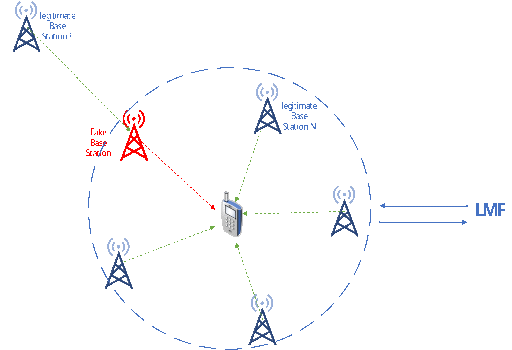
Figure
6.22.1-1: The attacking scenario of UE positioning with a false base
station
The
problem is that not all measured PRS are necessarily originating from
legitimate base stations. In case there is a false BS (as shown in
Figure 6.22.1-1) nearby the UE, the PRS received by the UE may not be
authentic, because the PRS are non-encrypted beacons, which can be
forged/tampered/replayed by a false BS. For example, a false BS can
forge the PRS from an unknown location or tamper the PRS intercepted
from a legitimate BS nearby the UE (BS-N). A false BS can also replay
the PRS intercepted from a legitimate BS (BS-F) which is however not
within the broadcasting reach to UE and far deviated from UE's actual
position.
As
the UE is not able to distinguish between legitimate and
non-legitimate measurements, all received measurements are sent to
the core network, of which one or more measured PRS may not originate
from the BSs registered in the core network. Hence, by reporting such
unauthentic measurements, the UE location estimated by the core
network could be distorted, i.e., not corresponding to the ground
truth.
This
solution provides a mechanism for the core network to detect false
base stations by utilizing the positioning measurement reports in
conjunction with other information sent from the UE. The solution is
applicable to UEs in RRC_CONNECTED state.
6.22.2 Solution
details
In
this solution, besides the estimation of UE location, the locations
of gNBs are also estimated based on the UE location estimate. A
PHY-layer method in RAN and a checking mechanism in core network are
introduced to facilitate the network to identify whether the
measurements reported by the UE contain unauthentic PRS from
potentially one or more false BSs. In case there is at least one
false BS, the measurement associated with the false BS is discarded
and the UE location is estimated again with the measurements from
legitimate gNBs only. The assistance information is then updated by
the core network for the UE to exclude the measurements associated
with the false BS in future reports. The procedure details are
described as follows.
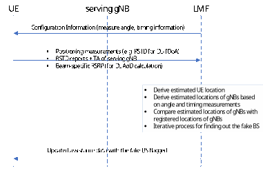
Figure
6.22.2-2: The attacking scenario of UE positioning with false base
stations
1. The LMF sends configuration
information for the UE to report angle and timing information for
each gNB measured at the UE.
2. The UE reports the
following to the LMF:
a. UE positioning
measurements, e.g. the reference signal time difference (RSTD) for
the case of Downlink time difference of arrival (DL-TDoA).
b. Reference signal time
difference (RSTD) reports (with respect to serving cell and each
neighbour gNB) together with TA of serving gNB.
c. The measurements used for
estimation of the angle of departure (AoD) at the gNB side. These are
typically the beam-specific radio signal received power (RSRP)
measurements for each of the beams detected at the UE side.
3. The LMF estimates the UE
location via an existing positioning method (e.g. DL-TDoA) first,
following which it also infers the potential location of the
neighbouring gNBs, by using the information received from the UE in
step 2 as follows:
a. The LMF uses the estimated
UE location and the TA information (2b) to obtain the approximate
distance to each of the gNBs.
b. The LMF identifies the
angle at which each gNB is reached from the UE using the AoD
information at the gNB side (2c).
Subsequently
the estimation of gNB location is obtained by combining the
approximate distance to the gNB (3a) and the angle at which the gNB
is reached from the UE (3b). The estimation requires either
synchronization amongst the gNBs or the LMF's awareness of clock
differences amongst the gNBs.
NOTE 1: The required accuracy
of gNB location estimate for detecting FBS can refer to the accuracy
requirements for location services defined in Table 4.1 of TS 22.071
[26]. If the detection of FBS can be regarded as an example of
network maintenance or network demand monitoring or asset tracking,
the required accuracy of gNB location estimate for identifying FBS is
75m~125m.
4. The LMF compares the
estimated locations of the gNBs with the list of registered locations
of gNBs (obtained e.g. from the AMF based on serving gNB location and
UE's tacking area). If there is a mismatch of at least one gNB, the
LMF discards the measurements associated with this gNB and reiterates
the UE location estimation with the remaining gNBs as follows:
- Suppose there are
measurements from N gNBs, the LMF repeats the UE location estimation
N times using N-1 gNBs each time, where in the i-th iteration the i,
i=1,…,N gNB is excluded from the procedure.
- If at the i-th iteration all
the involved gNBs turn out to be legitimate, the procedure stops and
the UE location is taken as legitimate. The gNB excluded from that
iteration is then considered as a likely false BS.
NOTE 2: In this repeated
computation of UE location, if the above iteration by excluding one
BS could not reach the match of legitimate gNB locations, the same
iteration by excluding two BSs can be performed until the remaining
gNBs match the registered legitimate gNBs. In such a way, multiple
FBSs can be detected. Although detecting multiple FBSs may take some
computation resource and time, it is regarded as a rare case where
there are multiple FBSs within a PRS measurement area of a given UE,
as the intention of such attack deployment and cost is unclear.
5. The LMF updates the
assistance data to the UE, indicating each of the PRS sources (i.e.,
the gNBs) as legitimate or not based on the outcome of step 4. For
example, the assistance data specified in TS36.355 [x] may include
updated information on OTDOANeighbourCellInfoList IE, where
the false BS is flagged. For a specified time interval in the future,
the PRS transmitted by the false BS is not considered by the UE and
excluded from being reported to the core network.
NOTE 3: As the solution is
based on the PRS measured by the UE, which does not contain PLMN
information, the PRS broadcast by the base stations shared by
different PLMNs is not bound to a specific PLMN. The positioning
measurements reported by the UE work for each of the PLMNs sharing
the base stations. The LMF of each of the PLMNs can detect FBS using
the UE reported measurements defined in this solution, depending on
which PLMN the UE is attached to.
NOTE 4: For a mobile UE, it is
straightforward that potentially multiple FBSs along the moving path
of the UE can be detected depending on the changing positions of the
moving UE.
NOTE 5: According to TS 38.305
[27], PRS configuration on the UE is PLMN specific, as it is sent by
the LMF of the serving PLMN the UE is connected to. That means, the
PRS transmitted by legitimate base stations of a different PLMN will
not be measured by the UE, as the legitimate base stations of a
different PLMN will not be included in the PRS configuration from the
LMF of the serving PLMN, hence will not be mistakenly detected as
FBSs.
NOTE: Details in radio related
methods/techniques and whether the required accuracy can be met need
further study
6.22.3 Evaluation
This
solution fulfils the potential security requirement of Key Issue #3
when the UE is in the RRC-Connected state.
This
solution does not fulfil the potential security requirement of Key
Issue #3 when the UE is in the RRC-Idle or the RRC-Inactive state.
This
solution fits in the framework for false BS detection in TS 33.501
[7] Annex E.
This
solution enables the network to not only detect the existence of
potential false BSs but also estimate the location of the detected
false BSs.
This
solution can serve the purposes of both false BS detection and
enhancement of UE location estimate.
This
solution cannot detect FBS if the FBS does not transmit PRS.
This
solution has minimum impact on the existing signalling procedure.
Impacts on the specific elements are as follows:
- Impacts on the UE
- Support enriched positioning
measurement reporting.
- Impacts on the gNB
- None.
- Impacts on the LMF
- Support additional
computation for deriving the locations of measured gNBs and finding
out the potential false BS among the measured gNBs.
- Support assistance data
updating to the UE
NOTE: Further evaluation is
needed..
6.23 Solution #23:
Cryptographic CRC to avoid MitM relay nodes
6.23.1 Introduction
This
solution addresses KI#3, KI#5 and #7.
This
solution firstly addresses KI#7. As indicated in KI#7, MitM attacks
and FBSs are related but different attacks [23]. A standalone FBS is
only capable of attracting UEs and getting the first phases of the
communication through it, however, the communication will stop as
soon as the mutual authentication handshake between UE and core
network fails. A MitM attack is more powerful since the attacker can
forward all messages and the authentication between UE and core
network. This allows the attacker to observe, intercept and
manipulate, and/or attack later phases of the communication.
Integrity protection may not always be in place nor protect every
message, so an efficient way to detect and protect against MitM
attacks is still useful to have.
A
MitM relay node typically includes a false base station (FBS) and a
false UE (FUE). A layer-two attacker can place a MitM relay node
between a real UE (RUE) and a real BS (RBS). As shown in Figure
6.23.1-1, the MitM attacker can intercept, drop, and forward messages
with unaltered or altered content [19]. These capabilities can lead
to multiple attacks including amongst others aLTEr [20], imp4gt [19],
network misconfiguration [21], or 5Greasoner [22].
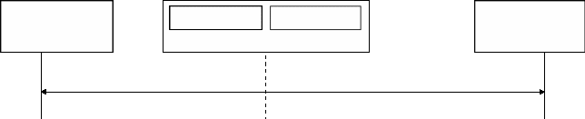
Figure
6.23.1-1: MitM relay node
This
solution introduces the concept of cryptographic CRC, which provides
an effective solution to MitM attacks, without requiring digital
signatures, time synchronization at system level, or verification of
location information. This solution may be used in conjunction with
already existing integrity protection mechanisms (e.g. to avoid
attacks on messages that may not be integrity protected (such as PDCP
Control PDUs)), or in cases where integrity protection is not enabled
(e.g. based on security policy for certain PDU sessions).
This
solution also addresses KI#5 since this solution provides the RUE and
RBS with the means to reject the messages that have been forwarded by
a MitM and allows the RUE and RBS to detect the MitM, and if present,
stop the communication.
This
solution also supports KI#3 (first requirement) since it allows the
gNB to detect MitM and this information can be shared with the
network, for network-based detection of MitM attackers.
6.23.2 Solution
details
6.23.2.1 Requirements
a) RUE and RBS share a
symmetric key. This key is denoted as K_PHYint.
b) Each transport block (TB)
resulting from MAC layer is allocated to Physical resource blocks
(RBs), i.e., the time and frequency physical resources used to
transmit the data. The allocated RBs are identified by a unique
identifier called blockID. This identifier is assumed long enough and
unique within the scope of K_PHYint.
c) The 24-bit CRC included per
transport block in the Physical layer is replaced by CRC' computed
as:
CRC' =
MessageAuthenticationCodeComputation(K_PHYint, CRC|blockID) (*)
where
MessageAuthenticationCodeComputation() is a function that returns a
24 bit message authentication code.
6.23.2.2 Operation
Upon
setup of K_PHYint, once AS is established, then from the first
subsequent SFN 0 until it wraps around (10.24 seconds), RBS
schedules for the RUE at least a data transmission in each SFN:
RUE
sends a transport block by doing the following:
- RUE compute the 24-bit CRC
value.
- RUE obtains information
about the allocated RBs to send the transport block and derives the
blockID.
- RUE computes CRC'.
- RUE places CRC' in the CRC
field.
RBS
receives a transport block by doing the following:
- RBS receives a message in
certain RBs and derives the blockID.
- RBS compute the 24-bit CRC_r
value given the received transport block.
- RBS computes CRC'_r given
CRC_r and blockID.
- RBS checks whether the
computed CRC'_r value equals the received CRC' value. If the values
do not match, then the transport block is rejected; if the values
match, then the transport block is accepted proving that it does not
contain transmission errors and that it has been transmitted in the
same physical resources, i.e., it has not been replayed.
- At the end of this time
period, the RBS determines the presence of a MitM attacker by
checking whether the number of times the CRC' check failed exceeds a
threshold. Assuming that 2^10 TB can be exchanged in 10.24 seconds
and the CRC has a length of 24 bits, this threshold can be derived
from a binomial test and a given confidence level. If a MitM attacker
is detected, the RBS informs the UE and the network about the
presence of the MitM relay node.
The
above description is further detailed as follows:
a) The MAC computation in
equation (*) may be implemented by truncating the output of
HMAC-SHA256 [NIST SP 800-107] so that only the 24 least significant
bits are returned.
b) The blockID may be
constructed by combining the identifiers of the used resources when
communicating with a given base station gNB. These identifiers
include gNB identifiers such as PCI; in the time domain, this can
include the Hyper Frame Number, the System Frame Number, the slot
number, the OFDM symbol identifier, the time duration of the resource
blocks; in the frequency domain, this can include the lowest
frequency and the used frequency band. A specific construction is as
follows:
blockID
= Frame | Subframe | Slot | Allocated_Resources_TIME |
Allocated_Resources_Frequency
where | means concatenation
and Allocated_Resources_Time and Allocated_Resources_Frequency
determine the resources that are used for transmission in the given
Frame/Subframe/Slot.
c) K_PHYint may be derived
from K_gNB in a similar way as K_RRCenc, K_RRCint, K_UPenc, and
K_UPint where value 0x07 is used for the algorithm type
distinguisher in clause A.8 of [7]. In the case of DU CU split, all
DU units use the same K_PHYint.
d) In CU-DU split
architectures, K_PHYint is to be delivered in a secure way from the
CU to the DUs through the F1-C interface as described in Clause 9.8.2
in TS 33.501[7].
e) To allow
for interoperability with legacy nodes, the base stations should
announce this security capability to the UEs. Since this solution
uses AS, this can be done as extensions in the SecurityModeCommand
message. The UE can confirm its activation of this algorithm in the
SecurityModeComplete.
Signaling
in cell change can be performed as specified in Clause 6.9.2 in TS
33.501. Furthermore, some extensions are required to make sure that
UE and target gNB run the solution once the handover is completed. To
this end, the current gNB needs to inform the target gNB of the UE's
C-CRC capabilities over the Xn Application Protocol defined in TS
38.423. This can be done in the Handover Request message as part of
the UE Security capabilities. Next, the target gNB needs to confirm
whether it supports the C-CRC capability. Upon reception of this
confirmation, the gNB will send a RRCReconfiguration (TS 38.331)
message informing the UE about the capabilities of the target gNB. By
doing this, both UE and target gNB will execute this solution as soon
as the HO is completed.
The
specific description of these extensions is left for normative phase.
f) There is no need for key
refresh since the cryptographic CRC is only computed and checked till
the SFN component of the blockID wraps around. This is enough to
detect the presence of a MitM and take actions.
6.23.2.3 Prevention
of MitM attacks:
a) prevention of message
forwarding (replay): an attacker placing a MitM relay node
between RUE and RBS would like to forward traffic by receiving,
processing, and resending packets. Since the FUE, part of the MitM
relay node, impersonates the RUE, it is supposed to transmit and
receive in the same RBs assigned to the RUE.
A detailed description of the
protection against message forwarding requires detailing the
differences between the uplink and the downlink. The UE is allocated
resource blocks by the base station. This allocation is done for both
uplink and downlink by means of the PDCCH except in uplink
semipersistent schedule (SS) (type 1 and 2) that is sent encrypted in
an RRC message. Since the MitM is in between RUE and RBS, the
resource allocation will arrive with some delay to the RUE. This
affects in particular the uplink since it induces a delay that
prevents the RUE from using the right timeslots and leads to a change
in the blockID that is expected by the RBS. An attacker might try to
delay the downlink, including the schedule delivery and reference
time. However, this only works as long as the uplink is not active.
Once the uplink is active, the MitM cannot be involved anymore in the
downlink since otherwise it would trigger a mismatch.
Thus, the replay protection
provided by this solution can be understood by considering the
blockID as a freshness parameter that is linked to the physical
resources used in the communication link.
Forwarding at a later point
of time is not feasible since the RBs change, and thus, the
verification of the CRC' will fail. Instantaneous reception and
transmission in the same RBs are also not feasible because of two
reasons: a) the resources are already used and b) because of the
processing time.
b) prevention of message
modification: a MitM relay node placed between RUE and RBS can
only modify additional traffic if it first receives a message from
either RUE or RBS, processes it, modifies it, and sends it again. The
attacker cannot perform this action since the CRC' value is computed
including the blockID, and this value will change when the attacker
tries to send out the message at a later point of time using
different RBs having a different blockID.
c) prevention of message
injection: injecting a message means that the receiving party,
either RUE or RBS, will accept a message from the MitM relay node.
The MitM relay node does not have, however, K_PHYint, and thus, the
MitM relay node cannot compute CRC'.
6.23.3 Evaluation
This
solution detects and blocks replay attacks of resource blocks at
MAC/PHY layer without requiring time checks that need tight time
synchronization, and in this way, solves, e.g., KI#5 and KI#7. This
solution also solves the first requirement in KI#3, but it does not
prevent a UE from camping on a FBS (second requirement in KI#3). This
solution could be used in combination with Solutions for KI#2 when
those solutions are still prone to replay attacks.
This
solution has several features:
This
solution derives K_PHYint from K_gNB. This implies that the solution
only starts operating once AS security has been established. For
devices that do not support AS security, then other key derivation
may be implemented without requiring them to use AS security.
This
solution requires modifications in gNB and UE to:
- implement the Cryptographic
CRC,
- derive K_PHYint,
- signal (gNB) and process
(UE) the CRC-C security capability.
NOTE: Further evaluation about
the impact on PHY processing changes is needed.
6.24 Solution #24:
UE&Network-assisted UE avoidance and Network detection of FBS
6.24.1 Introduction
This
solution addresses the security requirements in KI #3. According to
the informative Annex E of TS 33.501 [7] for UE-assisted
network-based detection of false base station, measurement reports
sent by the UE can be used to detect a false base station. KI#3 also
states that if UEs are using information from genuine base stations
belonging to an operator, such guidance information from genuine base
stations belonging to the operator network can be trusted to
avoid/prevent UEs from connecting to false base stations both in
CONNECTED mode and IDLE mode. In particular, the 5G system should be
able to:
- Detect false base
stations
- Employ methods to prevent
UEs from connecting to false base stations
This
solution describes how to extend Annex E of TS 33.501 to achieve this
functionality in KI #3 (in bold) so that UEs avoid FBS both in IDLE
and CONNECTED mode.
The
basic idea behind this solution is based on the cell search procedure
where a UE has to acquire the synchronization signal block (SSB).
SSBs are transmitted in a burst, where different SSB in the burst
have a different identifier (SB#) and each SSB is transmitted in a
beam in a different direction. The maximum number of SSBs in a SS
burst beams depends on the frequency. There are up to 4 SSBs if the
frequency is under 3 GHz, up to 8 SSBs if the frequency is between 3
and 6 GHz, and up to 64 SSBs for frequencies higher than 6 GHz.
Depending on the relative position of the UE with regard to a base
station, the UE will measure a different power level for different
beams. The UE will use the beam with the highest received power.
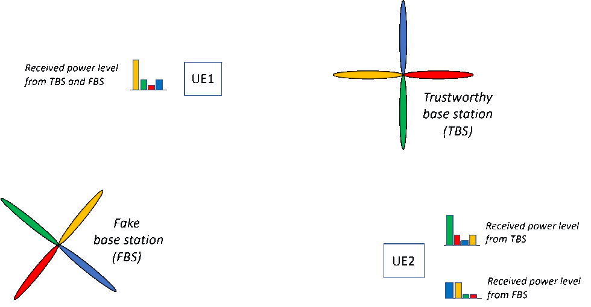
Figure
6.24.1-1: Example
For
instance, in Figure 6.24.1-1, UE2 scans the trustworthy base station
(TBS) and receives the highest power from the green beam, the lowest
power from the blue beam, and a power level in between the previous
two from yellow and red beams.
Thus,
if a UE knows (1) the position and expected radiation pattern
(direction of the SB# sent by different beams) of a base station and
(2) its own UE location, then the UE can estimate the expected SB#
power distribution. Next, the UE can receive the SS burst of the base
station and the measured SB# power distribution for the different
beams. The UE can correlate both signals, e.g., regarding number of
beams or relative powers, to obtain an indication whether the base
station is a good one or not.
For
instance, if UE2 in Figure 1 scans the fake base station (FBS), it
would receive the highest power levels from the blue and yellow beams
and a lower power level from the green and red beams. Then UE2 would
have a strong indication that the BS is a fake one since this is not
the expected radiation pattern from the trustworthy base station.
A
way to see this proposal is to compare it with the operation of an
email spam filter: (a) If an attacker writes a targeted phishing
email towards a user, the spam filter usually cannot detect it; (b) a
spam filter sometimes does not manage to filter out 100 % of the
spam. However, spam filters are still very useful since they manage
to get rid of most of the spam reducing the impact of attacks. This
proposal proposes a solution with similar features.
- An attacker might try to
focus on a single victim, e.g., UE1 in Figure 1. In this case, UE1
receives the same power pattern from the FBS as it would receive from
the trustworthy BS since the attacker is focusing on UE1 in his
attack and the attacker has redirected the beams of the FBS so that
they have the same radiation pattern as TBS from UE1's location. Even
if this targeted attack is feasible, all other UEs in the area will
receive the wrong power patter. Thus, this approach reduces the
impact of FBS attacks and it can do this already during the cell
search procedure, even before the UEs connect to a BS and they are
still in RRC_Idle mode. Even if an attacker can launch such a
targeted attack towards UE1, UE1 will also realize
inconsistencies since there are two base stations with exactly the
same radiation pattern. The UE will share this information with the
CN following Annex E of TS 33.501 [7].
- Real-world experiments,
e.g., [27], indicate that the measured SB# power distribution
correlates with the expected beam distribution. Thus, this solution
will allow the majority of the UEs to "filter out" most FBS
very early in the cell search process, i.e., still in IDLE mode,
saving resources and improving performance. It is true that due to
the wireless propagation features, a UE might measure a slightly
different power distribution at some locations, e.g., due to
reflections. UEs in those locations might classify a base station as
less trustworthy.
This
approach complements the methods in Annex E of TS 33.501 [7].
6.24.2 Solution
details
6.24.2.1 UE
Initialization
This
solution requires that each UE has some information (INFO_gnb) about
surrounding base stations. INFO_gnb includes:
- amount of SSB beams used by
each base station, identified by its Physical Cell Identifier (PCI).
- (optional) the position of
trustworthy base stations as well as the beam orientation (radiation
pattern) when transmitting SSBs.
- (optional) the position of
known fake base stations as well as their known radiation pattern,
assuming that the network has detected any FBS before.
INFO_gnb
can be pre-configured in advance. Alternatively, the first time a UE
enters a tracking area, the UE receives base station information
(INFO_gnb) for that tracking area from the network.
The
usage of the optional INFO_gnb requires that a UE can obtain its own
location.
The
distribution of INFO_gnb needs to be done in a secure way. This can
be done by using AS security.
During
this UE initialization phase, a UE does not have INFO_gnb, thus, the
UE cannot discern trustworthy BS from FBS in IDLE mode. As soon as UE
goes into connected mode, INFO_gnb is received in a secure way.
6.24.2.2 UE Operation
(IDLE mode)
BASIC
CHECK: When a UE in IDLE mode needs to connect to the network, the UE
performs cell search, the UE obtains the SSBs of a base station and
checks whether the number of SSB beams observed from a base station
with a given PCI matches the expected number of beams in INFO_gnb.
- If this check fails, the UE
returns a low similarity score and goes to Step 4.
- If the check succeeds, it
returns a high similarity score and goes to Step 3.
EXTENDED
CHECK: If the UE has been provisioned with the optional INFO_gnb data
and has access to its own location (e.g., through GPS data), the UE
monitors the power level for different beams (PL_measured). Given its
own position, and the known position of the base station it is
scanning, the UE estimates the expected power level (PL_estimated)
that it should measure. The UE can compute the similarity between
both signals, PL_measured and PL_estimated, updating the similarity
score (SS). For instance, the UE can compute the cross-correlation of
the signals to obtain the SS.
For
each scanned base station, the UE computes such a similarity score,
giving preference to base stations with a high SS when taking the
final decision on joining a specific base station. An example of the
expected operation is as follows:
- Example 1: a UE observes two
base stations and both of them are supposed to be trustworthy base
stations. However, the SS obtained from the base stations are quite
different. For BS#1, the SS is positive meaning that the radiation
pattern is as expected, but for BS#2 the radiation pattern does not
match. Thus, the UE takes the decision to join BS#1. The UE sends
measurements to the core network.
6.24.2.3 UE Operation
(CONNECTED mode)
When
the UE is in RRC-Connected state, the UE keeps scanning and reading
SSBs and measuring the SS. If a UE is connected to a base station,
and its SS is low, e.g., when it changes its position, while the SS
of other cells are higher, then the UE can take the decision to
switch cells.
Once
the UE has joined a base station, the UE provides the network with
measurements regarding the measured radiation patterns at certain
positions when obtaining the SSB and the computed SS. This
information can be used by the network to (i) verify the UE
decisions, (ii) centrally identify FBS updating INFO_gnb, or (iii)
improve the algorithm to compute SS score. In particular:
- the UE can provide the
network with information about the beams that have been used for
communication over time, i.e., including beam index and timing. The
network can compare this information with the beam indexes that were
used by the UE. If these two sets of information differ, then the
network can detect the FBS presence.
- the Network configures the
UE to do specific CSI measurements and reporting using a protected
RRC message. Being protected, the specific CSI instruction to the UE,
and measurements report from the UE are only known between the real
base station and the UE, not to any MitM. This method is used to
detect the presence of a potential FBS.
6.24.2.4 Network
operation
Network
initialization: The network is in charge of tracking of the
positions of base stations and their radiation patterns.
(UE
in IDLE mode) When a UE enters in a given area, the network is in
charge of distributing INFO_gnb to the UE.
(UE
in CONNECTED mode) The network collects from the UE information
in a secure way about the radiation pattern that a UE observes from
different base stations at different locations. This information can
be used together with other parameters, by the network to:
- Verify the computations by
the UE,
- Detect the presence of FBSs
and MitM devices,
- Estimate the position of
FBS,
- Improve the SS computation
algorithm on UE.
6.24.3 Evaluation
This
solution supports KI#3 partially, as follows:
- This solution allows UEs to
detect FBS both in IDLE and CONNECTED modes
- During IDLE mode, an
attacker might be able to carry out a tailored attack against UEs at
a specific area. Thus, this solution acts as an additional line of
defence that allows the majority of the UEs to detect and avoid FBS
even before SIB1 is acquired
- Beamforming is not a
compulsory feature. This means that base stations that do not support
beam forming cannot support this solution
-The
reporting RSRP/RSRQ/RSSI/beam level information of SSB or CSI-RS is
supported . Therefore, the approach proposed for connected mode
(first bullet in 6.24.2.3) in which the UE reports the used beam and
the network compares them with the used ones is feasible to implement
without big changes.
NOTE 1: Feasibility and
effectiveness in a real environment are not addressed in the present
document .
NOTE 2: The potential impact
in IDLE mode needs further study.
NOTE 3:
The complexity of the storage and management of gNB information on
the UE, while the UE is mobile, is not addressed in the present
document
6.25 Solution #25:
Detection of Man-in-the-Middle false base stations
6.25.1 Introduction
This
solution addresses the first requirement of key issue #3 "Network
detection of false base stations".
A
false base station (FBS) capable of performing man-in-the-middle
(MitM) attacks consists of two parts, i.e. a fake gNB unit and a fake
UE unit. The logic between the fake gNB and the fake UE allows an
attacker to process incoming message and just forward them, but also
drop, manipulate or inject specific messages. These operations
require receiving, processing, and retransmissing the messages and
cannot be performed without introducing some processing delay.
This
solution is based on the link allocated resource parameters between a
UE and the gNB, i.e. UE's SFN (system frame number).
The gNB can compare the SFN it has allocated to the UE (it would be
the SFN of the "fake UE" if one sits in between) and the
"real" SFN that the UE has reported to determine the
existence of a FBS.
This
solution does not address the scenario where a malicious node RF
repeater relays messages of a victim UE to the real gNB. Note that
even if such malicious RF repeaters relays are present, those devices
cannot perform a MitM attack as such since they cannot
drop/inject/manipulate specific messages as such.
6.25.2 Solution
Details
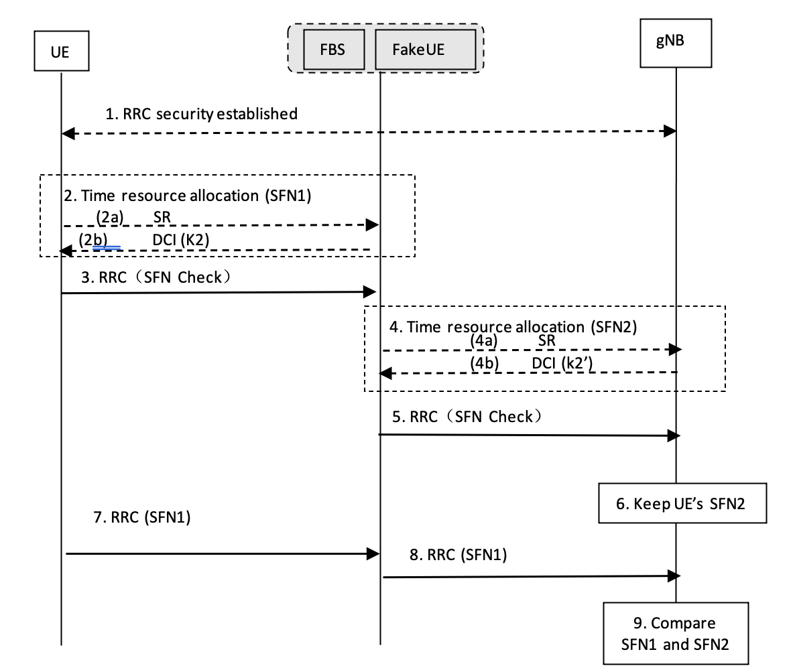
Figure
6.25.2-1: Flow diagram showing detection of man-in-the-middle attack
The
steps can be summarized as follows.
1. Assuming a UE has
established a connection with a real gNB through a MitM gNB. The RRC
security is established, i.e. all RRC messages are protected from the
FBS.
2. In order for a UE to send a
RRC message (to trigger the FBS detection), the UE requests resource
from the FBS according to the current RAN procedure. Assuming the set
of SFN parameters allocated by the FBS is indicated by SFN1 (in this
solution SFN refers to system frame number, subframe number,
timeslot, start symbol as well as parameters in the resource
allocation message, in particular, the "k2" value).
3. The UE sends a RRC message
to trigger FBS detection. To avoid defining a new RRC message, the
existing RRC message "UEAssistanceInformation" can be used
with a new optional element "SFN Check" to trigger FBS
detection.
4. As usual, the FBS intends
to forward the RRC message to gNB. First, the FBS (or the fake UE)
needs to request resource from the gNB. Assuming the gNB will
allocate a set of SFN parameters, i.e. SFN2 to the Fake UE.
5. The FBS (Fake UE) forwards
the RRC message to the gNB according to the scheduled SFN2.
6. Once received the "SFN
Check" indicator, the gNB stores SFN2 it allocated.
7. The UE sends the SFN1 value
(allocated at step 2) in a RRC message (security protected from FBS).
To avoid defining a new RRC message, the existing RRC message
"UEAssistanceInformation" can be used with a new optional
element "SFN result" (its value set to SFN1).
8. The FBS (Fake UE)
unknowingly forwards to the gNB.
9. The gNB compares the SFN1
value received with the SFN2 value stored and determine whether there
is a FBS
This solution can be adapted
to support "on demand" FBS detection by having the base
station send a protected RRC message to the UE indicating that the
FBS detection procedure needs to be started. This message is included
between message 1 and message 2 in the Figure. Since this message is
security protected, the attacker is not able to know the content or
tell from a normal RRC message.
NOTE 1: SFNs are not
protected by crypto. So, this solution should study whether a
resourceful attacker can acquire all SFNs from legitimate gNB and use
the one that fits the case.
NOTE 2: This solution may not
work against a resourceful attacker that can surreptitiously drop
messages.
6.25.3 Evaluation
No
evaluation addressed in the present document.
6.26 Solution #26:
KI#2 with PKC-based and without tight time synchronization
6.26.1 Introduction
This solution addresses key
Issue#2 "Security Protection of system information" by
using public-key cryptography (PKC) to sign and verify system
information. In this way, a UE has guarantees on the origin of the
signed data. Key issue#2 also requires replay protection. This
solution uses the cryptographic CRC solution (Solution #23) to verify
that the messages that are being exchanged with the base station are
not being replayed. This construction is proposed since this does not
require tight time synchronization that might be difficult to achieve
in some settings.
6.26.2 Solution
details
6.26.2.1 Requirements
The
solution assumes the same PKC settings as in, e.g., Solution #7,
including:
1. each base station gNB
broadcasts signed system information (SI),
2. K-SIGPrivate,
the private key used to sign the SI, is specific to the Tracking
area. Each gNB in the tracking area has it.
3. each UE has the required
trust anchors to verify the received signed SI, including PK, the
public-key required to verify a signature created with K-SIGPrivate.
This
solution also requires replacing the CRC at MAC layer with the
Cryptographic CRC (C-CRC) as described in Solution #23:
C-CRC =
MessageAuthenticationCodeComputation(K, CRC|blockID)
where
MessageAuthenticationCodeComputation() is a function that returns a
24 bit message authentication code, | indicates concatenation and
blockID refers to a unique identifier identifying the Physical
resource blocks (RBs), i.e., the time and frequency physical
resources, used to transmit the data at MAC layer.
6.26.2.2 Protocol
Operation
The
protocol operation of this solution is depicted in Figure 6.26.2.2-1:
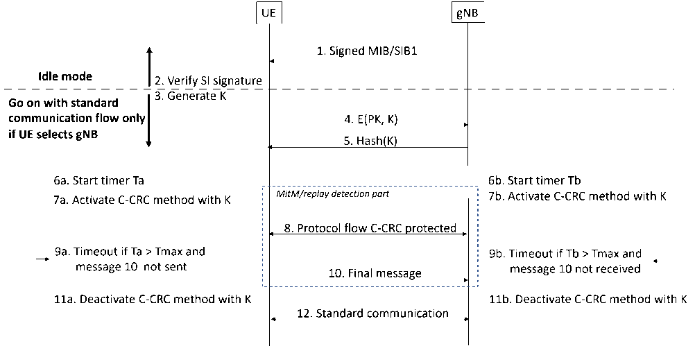
Figure
6.26.2.2-1: Protocol flow
The
protocol flow is as follows:
gNB broadcasts system
information signed with K-SIGPrivate.
UE verifies the validity of
the digital signature with PK, verifying the SI. Note that this
includes verifying whether the certificate has not expired. The UE
will select a gNB based on the received and verified SI. See Remark
1 in Clause 6.26.2.3.
If
the UE selects a given gNB to connect to the network, then the UE
goes on with the standard communication flow as follows. See Remark 2
in Clause 6.26.2.3.
The UE generates
symmetric-key K in a secure way.
UE sends K to gNB in a secure
way by encrypting it with the public key of gNB. See Remark 3 in
Clause 6.26.2.3.
gNB confirms reception of K
by sending Hash(K). UE checks that the message contains the correct
hash. If it does not receive this message or this message does not
contain the proper value, the UE determines the presence of a MitM.
If the value is correct, the UE verifies that the right gNB has
received K.
NOTE: Alternatives and
required properties of the protocol in steps 4 and 5 are not
addressed in the present document.
a. UE starts timer Ta after
receiving message 5.
b. gNB starts timer Tb after
sending message 5.
a. UE activates C-CRC method
using key K after receiving message 5.
b. gNB activates C-CRC method
using key K after sending message 5.
Standard protocol flow but
protected with C-CRC. See Remark 4 in Clause 6.26.2.3.
a. If Ta > Tmax and
message 10 has not been sent by the UE, it decides that a MitM is
present and proceeds to search another base station. See Remark 4 in
Clause 6.26.2.3.
b. If Tb > Tmax and message
10 has not been received by the gNB, it decides that a MitM is
present and drops the communication. See Remark 4 in Clause 6.26.2.3.
Final message sent by the UE
that serves as implicit confirmation that no-MitM has been detected.
a. UE deactivates the C-CRC
method after sending message 10.
b. gNB deactivates the C-CRC
method after receiving message 10.
Standard communication.
6.26.2.3 Clarifications
regarding the protocol operation
The
protocol operation described in Clause 6.26.2.2 is clarified below by
means of the following remarks:
- Remark 1: This relates to
Step 2. Here, it is assumed that the certificate verification does
not require tight time synchronization. For instance, if a
certificate is valid for several weeks, then it is not required to
have a time synchronization with an error of 1 millisecond.
- Remark 2: a UE acquires MIB
and SIB1 and signature and performs the signature verification in
Step 2. Note that Steps 3, 4, and so on are only executed if a UE
selects a base station. UE is in IDLE mode only till Step 2.
- Remark 3: This relates to
Step 4. The MitM does not have access to K since the MitM does not
have K-SIGPrivate. Since the MitM does not have K, it
cannot interfere with the authentication handshake (messages 4-5) and
the MitM cannot compute the C-CRC correctly. This assumes that
public-key, PK, can be used for both signature verification of the
SI, as required in Step 2, and for public-key encryption (PKE), as
required in Step 4. If the public-key for signature verification of
Step 2 cannot be used for PKE, the certificate sent in the SIB should
contain an additional gNB's public-key for PKE in Step 4.
NOTE 1: It is not addressed in
the present document if same keys or different keys are used.
If a UE is in IDLE mode, then
the UE does not share a common key with the base station and thus
steps 3, 4, 5 are executed. If a UE is in INACTIVE mode, the UE
already shares a key with the base station and Steps 3, 4, 5 can be
skipped. The encryption algorithm in Step 4 might be based, e.g., on
ECIES(PK, K).
NOTE 2: It is not addressed in
the present document to explain why this solution is required for
INACTIVE state UEs.
- Remark 4: A specific
instantiation of Messages 4, 5, 8, and 10 is as follows: contents of
Message 4 could be included in RRCSetupRequest; Message 5 could be
included in RRCSetup; Messages 8 might include the NAS handshake
(without modification); Message 10 could be NAS Security Mode
Complete (without modifications). It is important to observe that the
normal communication flow goes on as usual, with the only difference
that C-CRC is active. This message choice is only an example, and
details can be defined during the normative phase with the only
requirement that both uplink and downlink traffic needs to be
involved (see Clause 6.23.2.3).
The C-CRC solution replaces
the standard CRC at MAC layer in messages 8 and 10. This means that
if there is a MitM forwarding, modifying, or injecting messages (in
messages 8), those messages will be dropped by UE and/or gNB. Not
receiving messages in Step 8 means that message 10 will not be
sent/received either, since the previous messages are missing, and
thus, the timers Ta and Tb will timeout, and the UE joining procedure
will be dropped. Thus, this solution archives replay protection
without requiring tight time synchronization.
The blockID used in the
computation of the C-CRC should be unique to provide freshness. To
this end, it can be constructed as follows:
blockID = Frame | Subframe |
Slot | Allocated_Resources_TIME | Allocated_Resources_Frequency
where | means concatenation
and Allocated_Resources_Time and Allocated_Resources_Frequency
determine the resources that are used for transmission in the given
Frame/Subframe/Slot.
Since SFN has a period of
10.24 seconds, then this blockID construction sets a maximum value
for Tmax. If Tmax is required to be longer, then a different blockID
construction can be defined during normative phase.
- Remark 5 on backwards
compatibility and downgrade attacks: In this solution, new UEs run
the C-CRC for a limited amount of time. After step 10, UEs run the
standard CRC. The activation of C-CRC is negotiated in Steps 4 and 5
and the backwards compatibility table is as follows:
-
-
-
|
Legacy
UE
|
New
UE
|
Legacy
gNB
|
As
currently done.
|
Case
nUE, lBS: UE learns from SIB and lack of signature that
legacy BS does not support C-CRC. Thus, UE skips addition
of E(PK, K) in message 4 and does not activate C-CRC.
|
New
gNB
|
Case
lUE, nBS: Legacy UE does not look into signature since
legacy UE does not know that field or new SIB is present.
Legacy UE does not send E(PK, K) in message 4, and thus, gNB
does not activate C-CRC and does not send Hash(K) in message 5.
|
As
in the description in the proposal
|
Note
that such a negotiation protocol can be misused by an attacker to
make a new UE think that it is talking to a legacy gNB. This can also
happen in current solutions.
Note
that in some current solutions, a UE might think that it is
communicating with a proper gNB in a secure way (source origin
verification and replay attack of the received SIB messages) and be
under a replay attack, i.e., a MitM might forward the traffic between
the real UE and the real gNB. This solution instead checks the
validity of the signed SI and then checks through the usage of the
C-CRC whether a MitM is in place, i.e., forwarding traffic between
the UE and the real gNB.
6.26.3 Evaluation
NOTE 1: Applicability of the
solution due to message sizes and performance in terms of bandwidth
needs is not addressed in the present document .
NOTE 2:
evaluation under the presence of repeaters is not addressed in the
present document
KI#2
is about: "investigating if and how a new protection
mechanism could be introduced against over-the-air attackers who
broadcast rogue SI messages or replay previously captured SI messages
as-is (without modification). Since SI messages are broadcast
messages meant for all UEs, it is not apparent that an integrity and
replay protection is strictly necessary. Nevertheless, in general, an
integrity and replay protected SIs could add security value by at
least making it difficult for over-the-air attackers to succeed in
using a rogue SI or a previously captures SI at a later time, e.g.,
to lure UEs using SI messages with incorrect neighbouring cells, and
to send self-crafted or old PWS messages".
KI#2
includes as potential requirement: "5G system should provide
a means to ensure a UE in any RRC state is able to determine the
authenticity of system information obtained from a cell."
This
solution addresses both the authenticity and replay protection of
system information.
The
authenticity is provided by signing system information with a private
key only known to the signing party. Authenticity of the received
system information is ensured in any RRC state.
KI#2
acknowledges the difficulty of accurate time synchronization by
stating that: "Time synchronization. It is because of
difficulty to achieve fairly acceptable time synchronization between
one gNB and other gNBs, and between UEs and gNBs". When time
synchronization is used, the UE has to check whether the received
message is fresh compared with its current time. The UE should use a
time window to deal with time differences due to, e.g., time
synchronization or propagation delay. If the UE and gNB are not
perfectly synchronized and time window is:
1) too big, then a MitM can
perform replay attacks.
2) too small, then the
likelihood of a UE rejecting a trustworthy gNB increases.
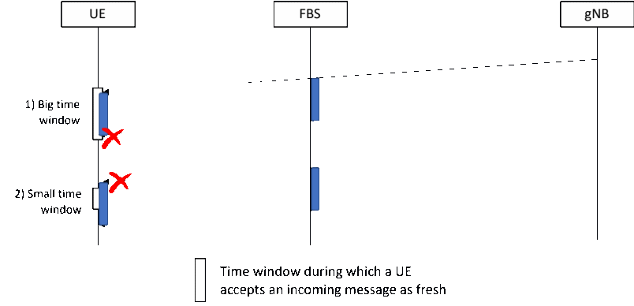
Figure
6.26.3-1: Impact of a big or small time window when verifying the
freshness of messages. In case 1), the UE might accept a replayed
message by a FBS, in case 2) the UE might reject a message coming
from a trustworthy gNB if the time window is small and time is not
fully synchronized.
Since
detecting whether the SI is replayed or not is important but time
checks might have some limitations, this solution proposes to apply
the Cryptographic CRC solution as soon as feasible by negotiating a
symmetric key so that the presence of a MitM replaying messages is
detected as soon as feasible.
6.27 Solution #27:
Short-lived asymmetric key-based solution for protecting system
information
6.27.1 Introduction
6.27.1.1 General
For
key issue #2 (security protection of system information) in TR 33.809
[2], there are multiple proposals including solutions 7, 9, 11, 12,
14, 19, and 20. These solutions can be classified into three
categories (see Table 6.27.1.1-
for a summary),
- public key based digital
signature (solutions 7, 11, 12, 20),
- symmetric key based message
authentication codes (MAC) (solution 9), and
- message hash consistency
check without digital signature or MAC (solutions 14, 19).
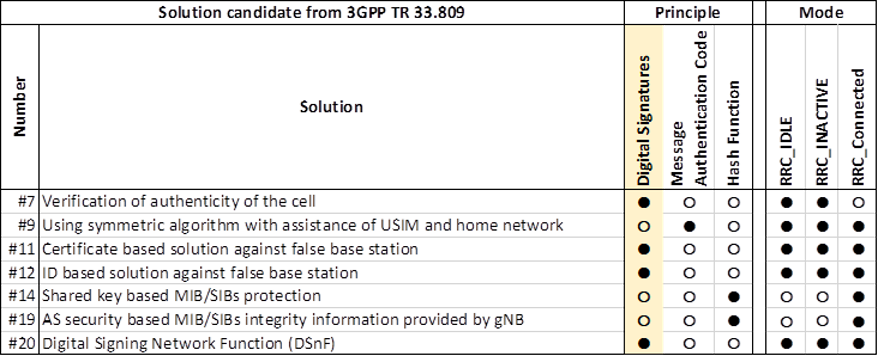
Table
6.27.1.1-1: Summary of the proposed solutions for KI#2
Each
category of the proposed solutions for KI#2 are described briefly
next.
6.27.1.2 Hash-based
consistency checks
Hash
based consistency checks leverage existing NAS security context to
detect spoofed or falsified broadcasting messages when UEs are in
CONNECTED state. It provides certain security benefits without
requiring any additional overhead in key management. However, it does
not protect UEs in all states.
6.27.1.3 Symmetric
key based MAC
It
is a common understanding that traditional symmetric key based MAC
works well for two-party communication, or n-party communication when
n is small, but not well for n-party communication when n is large
and dynamic. This is because a symmetric key needs to be pre-shared
among all group members [7], requiring a complex key distribution
mechanism when the group is large, especially when the group
membership is dynamic.
Mobile
networks have a large number of base stations and UEs, and the
relationship between UEs and base stations is dynamic, thus it is an
n-party communication with n being large and dynamic. Therefore,
traditional symmetric key based MAC does not appear suitable for
authenticating broadcast messages in mobile networks.
Further,
any member within a shared key group may be able to use the shared
key to forge or tamper with messages unless the key usage is strictly
limited to MAC verification only. Although USIM can be leveraged to
protect the shared key so that it cannot be read out, it is not clear
if it is possible for an attacker to use a USIM to generate a MAC
using the shared key.
A
non-traditional symmetric key based MAC, namely, TESLA [5], does not
require a symmetric key to be pre-shared among group members. Rather,
it discloses a key to all members. The key is not disclosed in the
same message where its MAC is included. Rather, it is disclosed in a
future message with a delay in time. Although TESLA nicely solves the
problem of key distribution in a large and dynamic group, it requires
other mechanisms such as digital signature to protect anchor keys
that are used to authenticate regular keys used to generate MACs.
Therefore, TESLA alone cannot solve the problem.
NOTE: the use of TESLA to
reduce computational overhead in digital signing and its potential
quantum-resistance features is not addressed in the present document.
6.27.1.4 Asymmetric
key based digital signatures
Asymmetric
key or public key based digital signatures are naturally suited for
authenticating broadcasting messages because they allow messages to
be broadcast from one party and verified by many parties without the
need to share the signing key. This is demonstrated by the proposed
solutions (e.g., #7, #11, and #20) based on digital signature with
certificates. As an alternative approach, the ID based signature
scheme is also introduced (e.g., #12). The unique identity is treated
as the public key, which does not require the certificate to be send
in the broadcast message..
NOTE: analysis of ID based
solution is not addressed in the present document
However,
there are still some gaps in the existing solutions that require
further improvement. Particularly, outstanding issues in key
management, replay mitigation, and cell selection need to be resolved
for an asymmetric key based solution to be both secure and practical.
This
solution fills these gaps and can satisfy the security requirements
of KI#2 while also addressing various challenges in the solution
deployment.
Then
perform comprehensive analysis of various design options and outline
the rationale of our design choices in three main areas including
authenticity of system information, replay mitigation, and UE cell
selection strategy.
6.27.2 Solution
details
6.27.2.1 Authenticity
of system information
6.27.2.1.1 Signing
entities
In
principle, a message should be signed by an entity that originates
the message. Since system information blocks (e.g., MIB and SIB1-5)
are originated by gNBs, gNBs should be able to sign those messages
thus need to store the private keys used to sign the messages.
To
minimize security risk, some deployments may want to reduce the
exposure of signing keys and keep them in secure locations (e.g., at
core networks to reduce the number of entities that can access the
signing keys). This requirement could arise when the security
protection of an entity (e.g., gNB) is not considered sufficient,
e.g., due to the lack of physical security or the use of a shared
environment, or outsourced management of the environment, or other
security reasons.
Note
that the significance of a signing key is different from other
symmetric keys (e.g., for AS security) stored in gNB, the latter is
of local impact while the former may be of global impact. More
specifically, the stolen symmetric keys in a particular gNB only
allows an attacker to access traffic for the users served by that
gNB. However, a stolen signing key may allow an attacker to sign
arbitrary system information, resulting in attacks on many more
potential users. Thus, a signing key needs to be protected with more
caution.
In
the undesirable case when a signing key is stored in a gNB location,
a central signing entity, e.g., the Digital Signing Network Function
(DSnF) in solution 20, at the core networks can be used to sign
messages for a gNB so that it does not need to store the signing
keys. Note this delegated signing has some drawbacks such as
transmission delayed and bandwidth overhead.
NOTE: The choice of signing
entities is not addressed in the present document.
(D1):
Both gNB and a core network function can perform digital signing of
system information based on operator's deployment and security
requirements.
6.27.2.1.2 Raw public
keys or certificates
Digital
signatures are generated by a private key and verified by the
corresponding public key. Public keys and trust anchors need to be
distributed to UEs to enable them to verify digitally signed system
information. A public key can be distributed in the form of a raw key
or a public key certificate. A raw key consists of a public key, and
maybe some other data such as a key identifier. A public key
certificate such as X.509v3 has a well-defined data structure
supporting key life cycle management, key hierarchy, and key usage,
among other functionalities.
A
raw public key is simple and of smaller size (comparing to a public
key certificate), and is usually flat (i.e., it does not belong to a
key hierarchy). This creates a challenge in trust anchor management.
If each gNB uses a unique public and private key pair, each gNB's
public key would need to be configured as a trust anchor in UEs,
resulting in many trust anchors and the difficulty to provision them
out of band. If multiple gNBs share a public and private key pair,
the number of trust anchors can be reduced but such practice will
violate the basic security principle of key separation.
A
public key certificate has rich semantics and supports key hierarchy,
allowing multiple public key certificates to be verified using one
trust anchor. But a public key certificate (e.g., X.509v3) is usually
larger in size and may not fit into a single SIB due to the size
limitation of SIB in the physical layer. Further, a public key
certificate use leads to further management complexities and needs to
be verified for its revocation status, e.g., using Certificate
Revocation List (CRL) or Online Certificate Status Protocol (OCSP).
Both CRL and OCSP require network connectivity, which had not yet
been established at the stage of SIB acquisition.
One
way to address the certificate revocation issue is to use short-lived
public key certificates [8]. Since a public key certificate has a
short expiration time (e.g., a few hours), a revocation check can be
skipped assuming a compromised key will expire quickly. One challenge
with short-lived certificates is that new certificates need to be
issued frequently, thus requiring the issuing CA to be online. There
are security risks in operating a CA online, which should be avoided
if possible.
To
this end, we propose a hybrid approach that combines the use of
public key certificates and short-lived public keys. More
specifically, a public key certificate is issued to an entity at the
core network. This core network entity (e.g., DSnF in Solution 20)
uses its private key to sign a gNB public key and other minimal data
such as expiration time, key usage, etc. This signed object is valid
for a short period of time (e.g., a few hours) and is referred to as
short-lived public key (similar to the idea of delegated credentials
for TLS [6]).
The
advantages of using short-lived raw public keys include a)
short-lived raw public keys belong to a key hierarchy, allowing them
to be verified using one trust anchor; 2) certificate revocation
check is not needed; b) there is no need to operate a CA online,
since the short-lived raw public keys can be issued by an end entity
(e.g., DSnF); and d) a short-lived raw public key is about 150 bytes
(using 256-bit ECDSA) and can fit into a single SIB.
A
disadvantage of short-lived public key is that it has a risk window
in which a compromised signing key can still be used to sign system
information that can be verified correctly by UE. With certification
revocation, a compromised signing key, if known to the operator, can
also be made to known to the UE by revoking the associated public key
certificate. Therefore, the risk window from a compromised signing
key can be reduced with certificate revocation. However, certificate
revocation check requires communication with the network, e.g., to
download a Certificate Revocation List (CRL), and the UE does not
have network connectivity to perform revocation check during SI
acquisition phase.
(D2):
A public key certificate is issued to an entity in the core network,
which then issues short-lived public keys to gNBs.
6.27.2.1.3 Trust
anchors
Based
on D2, a certificate chain consists of a root CA certificate, zero or
more intermediate CA certificates, an end entity certificate, and a
short-lived public key (see Figure 6.27.2.1.3-1).
In theory, any certificate (from the root CA certificate, any
intermediate CA certificate, or an entity certificate) on this
certificate chain could be provisioned as a trust anchor. However, if
a CA certificate is configured as a trust anchor, all subsequent
certificates under the trust anchor including the short-lived public
key needs to be sent to UEs for them to verify signed system
information, resulting in higher transmission overhead.
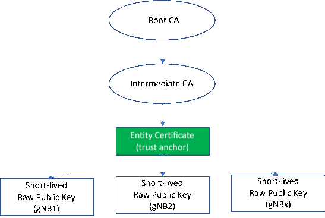
Figure
6.27.2.1.3-1: Certificate chain and trust anchor
Based
on Table 6.20.2.5.1-1 in solution 20, an X.509v3 certificate for
ECDSA-256 with SHA-256 is of about 545 bytes. However, a SIB has a
size limit of 2976 bits (372 bytes). It would take two system
information blocks to carry one X.509v3 certificate, which does not
appear desirable. Thus, we want to try to avoid transmitting public
key certificates to UEs to minimize message overhead. In this
solution, the end entity certificate issued to the core network is
configured as a trust anchor. In this way, only a short-lived public
key needs to be transmitted to UEs and it can fit into a single SIB.
D3:
The trust anchor on the UE is an end entity certificate issued to a
core network entity that issues short-lived public keys to gNBs.
6.27.2.1.4 PKI trust
models
A
PKI is often used to manage the lifecycle of public key certificates.
Various PKI trust models are discussed in solution 20. While a fully
centralized PKI (e.g., GSMA managed PKI for all mobile operators)
significantly reduces the number of trust anchors required, it also
creates deployment dependence and other issues (e.g., operational
costs).
Since
an end entity certificate, not a CA certificate, is configured in UEs
as a trust anchor, there is no obvious benefit in adopting a
centralized PKI. Therefore, decentralized PKIs, each of which can be
managed by an individual operator, are supported to remove deployment
dependence on other parties.
D4:
A decentralized PKI trust model is supported, i.e., each operator
issues its own certificates and manages its own trust anchor.
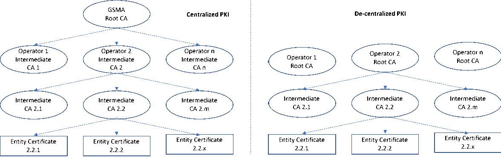
Figure
6.27.2.1.4-1: PKI trust models - centralized vs decentralized
Note
that a trust anchor (an end entity certificate) can be issued by an
existing Certification Authority (CA) that an operator already has,
or by a new PKI that is created (e.g., using tools such as OpenSSL)
for the sole purpose of digitally signing system information.
The
challenge in trust anchor provisioning in roaming scenarios (e.g.,
each roaming partner has its own trust anchor) can be managed with
in-band provisioning (see 6.27.2.1.5).
6.27.2.1.5 Trust
anchor provisioning
Trust
anchors can be provisioned into UEs (e.g., in USIM) using either
out-of-band or in-band mechanisms. Out-of-band provisioning of trust
anchors leaves no risk window since it allows a UE to verify signed
SIs starting from the first registration with the network, thus it
offers the best possible security. However, it may create dependence
on other parties, particularly in roaming scenarios. In-band
provisioning of trust anchors allows an operator to provision its own
trust anchor independently while offering deployment flexibility.
However, in-band provisioning may have a risk window during which a
digitally signed message cannot be verified if the trust anchor has
not been provisioned.
To
avoid risk window, trust anchors should be provisioned out-of-band if
possible, e.g., by a home network (the procedure for provisioning the
public key for SUPI encryption can be reused), or by a Standalone
Non-Public Networks (SNPN). In-band provisioning (e.g., based on the
procedure proposed in solution 7) should also be supported to update
existing trust anchors (e.g., due to certificate expiration).
D5:
Trust anchors are provisioned into UEs (e.g., stored in USIM)
out-of-band, e.g., by a home PLMN or an SNPN but can be updated
in-band when necessary.
In
roaming scenarios, the trust anchor of the roaming partners should be
provisioned by a user prior to leaving the home network. If the trust
anchor of a roaming partner is not provisioned, the UE is still able
to select the partner's network by following the cell selection
strategy outlined in 6.27.2.3, provided that UE security policy
allows for such selection.
Note
that not all trust anchors of all roaming partners need to be
preconfigured into the UE at the same time, reducing storage
requirement of the trust anchors. For example, if a UE only visits a
few roaming partners, the UE will only be provisioned with a few
trust anchors. In a possible but unlikely event that a UE visits all
the roaming partners and there is not enough storage space for all
trust anchors, a stored trust anchor can be overwritten by a new one,
e.g., based on the last time the trust anchor was accessed.
Please
refer to 6.20.2.5.1 of solution #20 for more discussions on root CA,
USIM storage required for storing trust anchors, and trust anchor
update.
NOTE: Process and
requirements for trust anchor/signature validation upon SIB reception
is not addressed in the present document
6.27.2.1.6 Delivering
signatures and short-lived public keys
With
an entity certificate configured as the trust anchor, the digital
signature (along with some other data, e.g., a timestamp) of System
Information (SI) and a short-lived public key needed to be delivered
to UEs for them to verify the SI. There are three options for
delivering a digital signature and a short-lived raw public key.
First,
both the digital signature (e.g., of 64 bytes) and the short-lived
raw public key (e.g., about 150 bytes) are included in a SIB.
Although the combined size is about 214 bytes, which can fit into SIB
(up to 372 bytes), it would reduce its capacity by more than half
(e.g., to about 160 bytes). This does not appear ideal. Further,
while a signature is based the content of a particular SIB, the
short-lived raw public key cam be valid for many instances of
different SIBs. Thus, neither is it necessary nor desirable to
transmit the short-lived raw public key within each SIB.
Second,
a new SIB (namely SIB_x) is defined to carry both the digital
signature and the short-lived raw public key. This option has the
advantage of leaving other SIBs untouched. However, it may create a
new problem in the scheduling of the new SIB_x. Since the digital
signature is computed based on the content of a particular SIB, the
new SIB_x carrying the digital signature may need to be scheduled
precisely according to the schedule of existing SIBs to ensure that
the SIBs and the digital signature acquired in two separate messages
match each other. This is of particular challenge for SIB1, since it
is repeated several times within a periodicity of 160ms. Although the
repeated SIB1 may not change in content, timing related attribute
associated with a repeated SIB1 may change. Thus, separating the
digital signature from SIB1 would require precise scheduling of the
new SIB_x, which does not appear desirable.
Third,
the short-lived raw public key is carried in a new SIB, but the
digital signature of SIB is carried within the SIB. As on-demand
information is specified in SIB1, the length of SIB1 is dynamic based
on configuration. Considering the maximum SIB1 size is 376 bytes, 64
bytes of digital signature included in SIB1 would occupy about 17% of
its capacity. This option adds reasonable amount of message overheads
to a SIB, but avoids the complexity of scheduling the new SIB_x.
Thus, this option is selected.
Note: The periodicity of the
SIB broadcast carrying the short-lived certificate needs to be
further clarified to analyse the impact of this solution.
D6:
the digital signature protecting a SIB is carried within the SIB, and
the short-lived public key used to verify the SIB signature is
carried by a new SIB to be defined.
6.27.2.1.7 System
information to be protected
System
information (SI) includes MIB and 9 SIBs (SIB1-9). Next how each SI
should be digitally signed is discussed.
Since
MIB does not have enough space to carry a digital signature, one
option is to digitally sign MIB and SIB1 together. Note that MIB and
SIB1 are broadcasted at subframes 0 and 5 respectively at their
scheduled frames. One challenge is that MIB and SIB1 have different
periodicities of 80ms and 160ms respectively, and MIB and SIB1 are
also repeated (e.g., 8 times) within their respective periodicity.
Luckily, the SFN field within the MIB contains only the 6 most
significant bits of the 10-bit SFN, thus it changes every 160ms. In
other words, although MIB has a smaller periodicity than SIB1, it
remains unchanged within the periodicity of SIB1, i.e., every 160ms.
Therefore, MIB and SIB1 can be digitally signed together. For
example, in Figure 6.27.2.1.7-1,
there are 9 MIBs shown, each of which is broadcasted at SFN=0
(0x0000000000) to 8 (0x0000001000) respectively. While the 10-bit SFN
changes in every MIB repetition, the 6 most significant bits (MSBs)
of the SFN contained in the MIB remain 0x000000----) and do not
change within 160 ms.
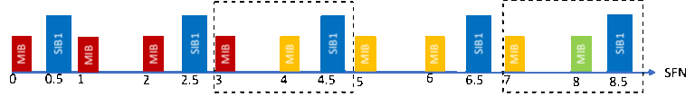
Figure
6.27.2.1.7-1: Examples of MIB and SIB1 scheduling
D7:
MIB (including the SFN field) and SIB1 are digitally signed together
with one digital signature.
Note: How often the UE needs
to read a SIB is not addressed in the present document.
Since
SIB2-5 may be broadcasted at very different periodicity from SIB1 or
may be acquired on-demand, it does not appear practical to sign some
of them together or with SIB1. Thus, each of SIB2-5 can be signed
individually. Assume that SIB1 and the new SIB_x will be acquired
prior to SIB2-5, only the digital signature of SIB2-5 needs to be
delivered, which can be carried within each SIB.
SIB6-8
are originated from an external entity to the core network (CBCF and
AMF) and then to gNBs. The digital signing of SIB6-8 in this solution
is not considered.
6.27.2.2 Replay
mitigation
6.27.2.2.0 General
Digitally
signed messages cannot be tampered with but can be replayed. In order
to mitigate replay attacks, message timeliness needs to be provided.
This is often accomplished by including a time variant parameter
along with the message when computing its digital signature. In
addition, some properties of a message originator, if they cannot be
easily spoofed, can also be included in the computation of the
digital signature to further enhance mitigation against replay
attacks.
6.27.2.2.1 Message
timeliness
Three
types of time variant parameters are often used to provide message
timeliness or uniqueness, including random numbers, sequence
numbers, and timestamps.
A
random number is often used in real-time interactive communication,
such as a challenge-response authentication protocol, to ensure a
response is uniquely computed based on a specific challenge. Since
system information is not acquired by UE interactively with gNB, a
random number is not suitable for providing message timeliness in
system information.
A
sequence number, either a serial number or incremental counter value,
can uniquely identify a message. To use a sequence number to detect
replay attack, a recipient needs to receive each and every message
from an originator (e.g., gNB) and also maintains a state (e.g., the
latest sequence number) for the originator. These requirements do not
hold in system information broadcasting, since a UE does not acquire
every system information block from every gNB. Thus, sequence number
is not suitable for detecting replayed system information.
Timestamp
can be included with a message to provide message timeliness to
mitigate replay attacks. It does not require any state to be stored
by a recipient but requires the local clocks of a message originator
and a recipient to loosely synchronize. Given that a UE synchronizes
its clock with a gNB prior to acquiring system information, it is
reasonable to assume the clocks between UE and gNB can be loosely
synchronized. Therefore, a timestamp is recommended for mitigating
replay attacks.
D8:
A timestamp is included with each SIB, and is digitally signed along
with the SIB to mitigate replay attacks.
A
UE can check a timestamp in a SIB against its local time to see if
the time difference is within an allowed window (t_w). The smaller
the t_w is, the more likely a replay can be detected.
Note: Further clarification
on which one is accurate between local clock and timestamp in a SIB
is not addressed in the present document.
In
a typical scenario where a message is sent out after a local time is
obtained and the digital signature is then computed, the total
network delay for the message to reach a receiver includes:
1) the computational delay -
the time taken to compute the digital signature (in the order of us,
based on Figure 6.27.2.2.1-1);
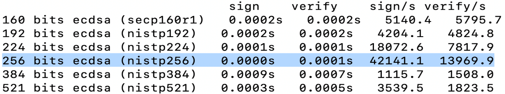
Figure
6.27.2.2.1-1 - OpenSSL speed test for ECDSA on a VM
NOTE
2: The timing performance is based on a different software and
hardware platform than the one typical for UEs. The timing
performance on UE is not addressed in the present document.
2) transmission delay at the
sender – the time taken to transmit the message out from the
sender's memory to the network (in the order of us);
3) the propagation delay –
the time taken to transmit the message from the sender to the
receiver over the network (e.g., over the air) (in the order of us),
and
4) transmission delay at the
receiver – the time taken to transmit the message from the network
to the receiver's memory (in the order of us).
In
this scenario, the total network delay (t_d) is likely less than 1ms,
it can be said t_d=1ms . Thus, the allowed delay window (t_w) can be
set to a value slightly higher than the network delay (t_d+)
to accommodate time deviation between the sender and the receiver. It
can be said say =2ms, which
would be the required accuracy of time synchronization. Then t_w=
t_d+ = 1ms+2ms = 3ms. Note these
numbers are used here just as examples.
In
reality, MIB and SIBs are broadcasted according to precise
scheduling. More specifically, a MIB is broadcasted every 80ms and
repeated every 10ms (at the starting of a frame), and SIB1 is
broadcasted at a periodicity of 160ms and also repeated within a
periodicity (e.g., every 20ms at the starting of a half frame). There
are several options in assigning timestamp (thus a new digital
signature) to SIB1.
First,
each SIB1 repetition is assigned a new timestamp (see Figure 6.27.2.2.1-2).
Thus, a new digital signature is also computed for each SIB1
repetition in every 20ms. In this case, there is no scheduled delay
to be accommodated. Thus, t_w= t_d+
= 1ms+2ms = 3ms.
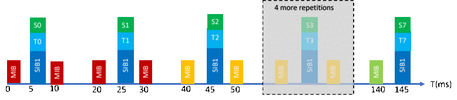
Figure
6.27.2.2.1-2: Each SIB1 repetition has its own timestamp and a
digital signature
Second,
all SIB1 repetitions within a periodicity share a common timestamp,
as well as a common digital signature (see figure below). Thus, a new
timestamp is obtained, and a new digital signature is computed at the
beginning of each SIB1 periodicity of 160 ms. In this case, the
allowed delay needs to include the maximum scheduled delay (t_s),
i.e., the delay of the last SIB1 repetition within the periodicity,
which is 140 ms. Therefore, t_w=t_s+t_d+=140ms+1ms+1ms=143ms.
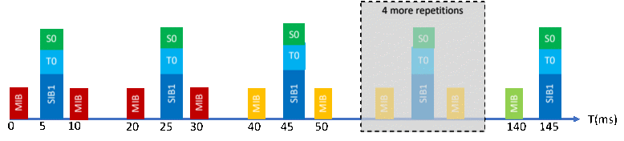
Figure
6.27.2.2.1-3: All SIB1 repetitions within a periodicity carry the
same timestamp and digital signature
Third,
it is also possible to have multiple SIB1 repetitions within a
periodicity or across multiple periodicities that share a common
timestamp. To generalize, a timestamp is assumed to be shared by N>=1
SIB1 repetitions. Then the maximum scheduled delay t_s= (N-1)*20ms.
Thus, t_w= t_s+ t_d+ =(N-1)*20ms
+3ms. The value of N has two aspects.
On
one hand, the smaller the N is, the more effective it is against
replay attacks. For example, if N=1 and t_w is set to 3ms, it would
make it very difficult, if not impossible, for a false base station
to successfully replay a SIB1. Since a replayed SIB1 has to be
processed by the UE portion of the false base station and then
broadcasted based on scheduling, it could add more than 3ms of delay,
thus can be detected. However, if N is larger than 1, e.g., N=8 and
t_w=143ms, it may leave enough time for an attacker to replay a SIB1
without being detected.
NOTE 3: it is not addressed
in the present document how to analyse alternative approaches that
might allow reusing the same signature in multiple SIBs while
minimizing the risk window of SIB replaying attacks.
On
the other hand, the smaller the N is, the higher the computational
cost it incurs. For example, if N=1, a digital signature needs to be
computed every 20ms. Based on the OpenSSL speed test of ECDSA-256, it
takes about 24us to compute a digital signature. Although the
computational overhead appears small, it is not negligible,
particularly when one gNB-CU needs to compute digital signatures for
multiple gNB-DUs in a distributed gNB architecture. Therefore, the
value of N needs to be balanced between security and performance. To
this end, leaving N configurable is recommended.
D9:
The number of SIB1 repetitions that share a timestamp and the digital
signature should be configurable and can be adjusted dynamically by
network operators.
6.27.2.2.2 gNB unique
properties
Since
timestamp alone may not fully mitigate replay attacks if the allowed
delay window is large, additional parameters may be used to augment
timestamp to improve replay mitigation. For example, if a sender has
some properties that cannot be easily forged by an attacker or can be
detected if forged, such properties can be included along with a
timestamp to improve mitigation against replay attacks.
To
this end, PCI and downlink frequency, as proposed in Solution 7, can
be included in the computation of digital signature of system
information. To replay a digitally signed MIB/SIB1, an attacker would
have to use the same PCI and downlink frequency as a legitimate gNB.
Although both PCI and downlink frequency can be forged, a forged PCI
may allow a UE to detect the presence of an attacker when two cells
use the same PCI. When an attacker is forced to use the same downlink
frequency as a legitimate cell, it may introduce additional signal
interference, also an indication of the potential presence of an
attacker. Thus, both PCI and downlink frequency help improve
mitigation against replay attacks, albeit not preventing them.
D10:
PCI and downlink frequency can be digitally signed along with
timestamp and MIB/SIB1 to further mitigate replay attacks.
NOTE: It is not addressed in
the present document the need and discussion of (dis)advantages of
(not) signing additional fields in the PBCH such as the beam index.
6.27.2.2.3 Time
synchronization issues
By
using a timestamp to mitigate replay attacks, an assumption
introduces that UE's time and gNB's time are loosely synchronized,
e.g., to an accuracy of 2 ms. This assumption is realistic since UE
and gNB need to synchronize their clocks in the physical layer to the
accuracy of 1ms or less..
However,
scenarios are considered where UE's time may not be synchronized with
gNB's time. Examples of such scenarios include, but are not limited
to, a) The first time a UE is powered on and has never synchronized
with a network before; b) UE has been powered off for too long so
that its time is out of sync with the network; and c) UE's time may
be manipulated (e.g., by an attacker using other methods).
In
those scenarios, the UE may reject the timestamp from a legitimate
gNB, resulting in a denial of service of UE. This can be mitigated by
checking the consistency of timestamps from multiple cells (assuming
the gNB's clocks are synchronized), as proposed in solution 20.
For
example, assume that a UE is located within the coverage area of two
cells, each of which assigns a new timestamp for each SIB1
repetition. Assume that the allowed delay window (t_w) is set to 3ms,
but the UE's time deviates from a gNB's time by one hour
(3,600,000ms).
When
the UE acquires a SIB1 repetition from the first cell, the SIB1
timestamp is t1 and the UE's time is u1. If the network delay is
ignored, the difference between u1 and t1 is about 3,600,000ms, or
say |u1-t1|=3,600,000ms. Since this is significantly larger than
t_w=3ms, the UE will not accept the SIB1.
When
the UE acquires another SIB1 repetition from the second cell, the
SIB1 timestamp is t2 and the UE's time is u2. With the network delay
ignored, |u2-t2|=3,600,000ms, which is also significantly larger than
t_w=3ms. Thus, the UE will not accept the SIB1 from the second cell
either.
This
time deviation from the network could result in denial of service to
the UE. However, by checking the consistency of |u1-t1| and |u2-t2|,
the UE can detect that its time has gone out of sync with the network
and can proceed to select one of the cells since their times are
consistent. Note that if the two cells assign a new timestamp to SIB1
repetitions at different rates, the scheduling delay needs to be
considered, e.g., by leveraging the redundancy version in each SIB
repetition.
In
the presence of FBSs, it can be considered as a byzantine fault
problem and the consistency check of times continues to work as long
as 2/3 of the received SIB1 by a UE belong to real base stations.
Note 1: the protocol for
consistency checking and its underlying assumptions needs to be
clarified and detailed.
Note 2: potential limitations
of consistency checking (e.g.., when a single gNB in reach) and
discussion on complementary methods (if required) is ffs.
D11:
Consistency check of gNB times can be performed when UE's time goes
out of sync with the network to avoid failure in timestamp
verification.
6.27.2.2.4 Limitations
Digital
signatures provide authenticity and message integrity of system
information, preventing an attacker from originating any MIB/SIBs or
tampering with an existing MIB/SIB. However, a timestamp may not
prevent a replay attack if the allowed delay window is set to a value
that is long enough for a replay to succeed.
Further,
PCI may not always allow a UE to detect a replay if the UE is out of
the range of a legitimate gNB whose system information is being
replayed. This can be illustrated in Figure 6.27.2.2.4-1.
NOTE 1: Figure 6.27.2.2.4-1
assumes an omnidirectional antenna. Attacking area when a gNB uses
beamforming is not addressed in the present document.
Assume
R1 be the broadcasting area of a real base station (RBS1), and F be
the broadcasting area of the false base station (FBS). If the FBS
replays the system information from RBS1 and uses the same PCI as the
RBS1, A UE located within the interclause of R1 and F, denoted by
FR1, will be able to detect the
duplicated PCI from two base stations. However, a UE located within
the area of F but outside the area of R1, i.e., F-FR1,
will not be able to detect the duplicated PCI. Although the area
where UEs may be attacked by an FBS is reduced by digitally signing
PCI, an FBS may choose to replay the system information from another
RBS to expand its attacking area. For example, the FBS can replay the
system information from RBS2 to attack UEs located within the area of
FR1.
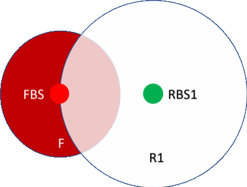
|
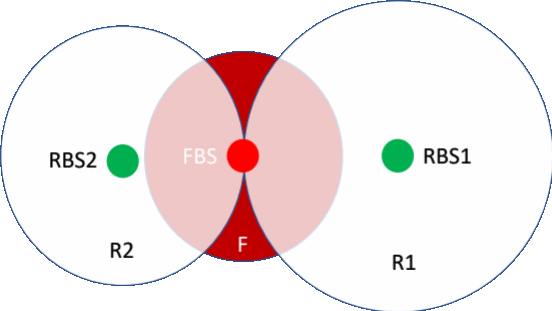
|
Figure
6.27.2.2.4-1: Attacking areas of an FBS by relaying system
information from RBSs
Although
it is possible to replay system information in theory, there are
practical challenges an attacker needs to overcome in order to
succeed.
First,
to replay system information in real-time (or relay system
information), an FBS needs to include a UE and a gNB. By using the
same PCI and downlink frequency, an attacker needs to find a strategy
to prevent FBS-UE from connecting to FBS-gNB. With the control of
both FBS-UE and FBS-gNB, an attacker can be assumed to have the
ability to prevent the FBS-UE from connecting to FBS-gNB.
Second,
when a replayed system information is detected based on duplicated
PCI, a UE could report to the network. If necessary, the network can
adjust its configuration on the SIB1 timestamp to reduce the allowed
delay window so that other UEs can detect replayed SIB1 based on
timestamp.
To
summarize, while it is theoretically possible to relay integrity
protected system information, the security impact from the relay
attack remains to be seen. This could be an active research area in
the near future. Additional mitigation can be further introduced if
needed, e.g., based on future research results.
It
is also worth noting there are legitimate devices that need to relay
signals from legitimate cells, e.g., to expand network coverage. For
example, RAN recently approved a new WID [10] on NR repeaters. Thus,
it is also necessary to allow system information to be relayed.
NOTE 2: how to handle NR
repeater is not addressed in the present document.
6.27.2.3 Cell
selection and reselection
With
MIB/SIB1 digitally signed, cell selection and reselection need to
take into consideration of not only signal strength, but also the
authenticity and freshness of MIB/SIB1. Clause 6.20.2.5 in solution
20 provides an example of how cell selection and reselection can be
performed based on digitally signed MIB/SIB1.
Table 6.27.2.3-1
lists 10 possible scenarios
based on the combinations of the states of digital signature, trust
anchor, timestamp, and PCI uniqueness. The first case (Case #A) is
the normal case, in which the digital signature of MIB/SIB1 is valid,
the public key used to verify the digital signature is trusted (i.e.,
signed by a provisioned trusted anchor), the timestamp is fresh, and
there is no PCI conflict. In this case, the cell can be immediately
selected if the signal strength meets the criteria. In all other
cases, there is some issue with at least one of the parameters.
Therefore, in any of those cases, the cell cannot be immediately
selected, nor fully rejected. If UE immediately selects a problematic
cell, security could be compromised. If the UE fully rejects such
cell, it may result in UE service degradation or outage.
The
UE should prioritize cells for selection and reselection based on the
results of MIB/SIB1 verification. Table 6.27.2.3-1
suggests a priority for each case. The first case (#A) is given the
priority of 1.1, the highest priority. Case #B is of priority 1.2,
the second highest, since it is likely that the UE clock is out of
sync with the network, requiring consistency check with additional
cells. Cases #C and #D likely indicate that the UE leaves its home
network and enters a roaming partner's network. The rest of cases are
likely the results caused by an attacker. Note that the last case
(#J) is likely from a legitimate base station that does not implement
digital signing. However, a higher priority may not be desired.
Otherwise, a MITM attacker could strip digital signature from SIB1
(and other related fields) to pretend that a cell has not implemented
the feature.
If
all available cells have a priority of 3.x, the UE could decide how
to proceed based on local policy. The strictest security policy may
force the UE to go out of service since an invalid digital signature
or the absence of a digital signature does not provide guarantee that
the cell is authentic. A moderate security policy may allow the UE to
randomly select one of the cells to continue the service but may log
and report the event. Although there is a security risk here, it
forces an attacker to interfere and jam all other cells in order to
force this scenario, significantly raising the bar for the attack.
NOTE1: It is not addressed in
the present document whether this cell selection and reselection
strategy is feasible needs further study.
NOTE 2: How to determine the
UE local security policy is not addressed in the present document
Table
6.27.2.3-1 - Priority list for cell selection and reselection
Case
#
|
Priority
in cell selection
|
Is
digital signature valid?
|
Is
digital signature trusted
|
Is
timestamp fresh?
|
Is
PCI unique?
|
Notes
|
A
|
1.1
|
Yes
|
Yes
|
Yes
|
Yes
|
Normal
case
|
B
|
1.2
|
Yes
|
Yes
|
No
|
Yes
|
UE
clock is out of sync with the network, or replayed MIB/SIB1
|
C
|
2.1
|
Yes
|
No
|
Yes
|
Yes
|
Trust
anchor has not been provisioned (e.g., first time in a roaming
network)
|
D
|
2.2
|
Yes
|
No
|
No
|
Yes
|
Trust
anchor has not been provisioned, and UE clock is out of sync with
the network or replayed MIB/SIB1.
|
E
|
3.1
|
Yes
|
Yes
|
Yes
|
No
|
Replayed
MIB/SIB1
|
F
|
3.1
|
Yes
|
Yes
|
No
|
No
|
Replayed
MIB/SIB1
|
G
|
3.1
|
Yes
|
No
|
Yes
|
No
|
Replayed
MIB/SIB1, no trust anchor
|
H
|
3.1
|
Yes
|
No
|
No
|
No
|
Replayed
MIB/SIB1, no trust anchor
|
I
|
3.2
|
No
|
Not
relevant
|
Not
relevant
|
Not
relevant
|
MIB/SIB1
has been tampered with, e.g., using bit-flipping attack. Other
parameters become irrelevant since they can be forged.
|
J
|
3.2
|
Without
signature
|
Not
relevant
|
Not
relevant
|
Not
relevant
|
Signature
may have been stripped, or digital signing has not been
implemented (e.g., eNodeB)
|
D12:
UE should support prioritize cell selection and reselection based on
the results of MIB/SIB1 verification and UE local security policy.
6.27.3 Assessment
using clause A.3
6.27.3.1 UE aspects
UE
needs to be provisioned of a list of trust anchors (see clause
6.27.2.1.3).
UE
needs to support secure storage of trusted anchors.
UE
needs to take into consideration results from signature and freshness
verification of SI for cell selection and reselection (see clause
6.27.2.3).
UE
needs to be configured with a local policy to prioritize security and
availability for cell selection and reselection.
6.27.3.2 UE actions
upon detection of invalid signature
Upon
detection of invalid signature, UE should perform cell selection and
reselection as described in clause 6.27.2.3.
6.27.3.3 Threats that
are mitigated by signed SI messages
Man-on-the-side
attacks (e.g., SI modification using SigOver), man-in-the-middle
attacks (e.g., replay and relay), and some denial of services (e.g.,
from tampering with SI) are mitigated.
6.27.3.4 Threats that
are not mitigated by signed SI messages
Some
denial of services (such as from bit-flipping or radio jamming of all
available cells) cannot be mitigated if all available cells are under
the attack simultaneously.
6.27.3.5 Provisioning
of keys
Trusted
anchors can be provisioned into UE during manufacture, onboarding, or
after registration.
6.27.3.6 RAN aspects
gNB
needs to obtain short-lived keys from the core network.
gNB
needs to perform digital signature computation of SIs.
gNB
needs to broadcast digital signatures along with SIs, as well as the
short-lived public key.
6.27.3.7 VPLMN
aspects
If
the trust anchor of VPLMN is provisioned into a UE, unauthorized SI
modification can be mitigated when all gNBs are upgraded to support
the signature scheme when accessing the VPLMN.
6.27.3.8 HPLMN
aspects
If
the trust anchor of HPLMN is provisioned into a UE, unauthorized SI
modification can be mitigated when all gNBs are upgraded to support
the signature scheme when accessing the HPLMN.
6.27.3.9 Network
sharing aspects
When
a gNB is shared by multiple PLMNs, the operator owning the gNB can
issue short-lived public key to the gNB, if the trust anchor of the
gNB operator is provisioned into a UE.
6.27.3.10 Roaming
aspects
See
clause 6.27.3.6 VPLMN aspects.
6.27.3.11 Regulatory
aspects
None.
6.27.3.12 Signature
schemes
Potential
signature schemes include:
- ECDSA (recommended with
named curves)
NOTE: the ECDSA profiles for
SUCI can be reused.
- RSA
- others
6.27.3.13 Signature
length
RSA:
256 bytes
ECDSA:
64 bytes
6.20.3.14 Resistance
against Quantum Computing
Not
addressed in the present document.
6.27.4 Evaluation
This
solution provides message authenticity to mitigate unauthorized
modification and replay of system information independently of UE
state.
This
solution requires UEs to be provisioned with a trust anchor (e.g.,
the public key certificate of a network) to verify the authenticity
of messages signed by a particular network. An operator deploying
this solution can prevent its own subscribers from accepting
unauthorized system information within its own network when all gNBs
in an operator support the proposed scheme. If a roaming partner also
deploys this solution and the public key certificate of the roaming
partner network is provisioned into a UE, the UE is also prevented
from accepting unauthorized system information over the roaming
partner's network.
This
solution requires SIB1 to be extended to carry a digital signature.
This
solution requires new a system information block to carry a
short-lived public key used to verify the digital signature.
This
solution requires gNBs to communicate with the core network to obtain
short-lived public keys.
7 Conclusions
7.1 Conclusions on
Key Issue #1
Following
conclusions are made on Key Issue #1 "Security of unprotected
unicast messages":
- It
is concluded that no additional normative work is required
for the protection against tampering of RRC UE CapabilityInformation
messages.
-
It is concluded that solution #17 is taken as the basis of normative
work for the protection of RRCResumeRequest message.
7.2 Conclusions on
Key Issue #2
This
key issue is not concluded.
7.3 Conclusions on
Key Issue #3
This
key issue is not concluded.
7.4 Conclusions on
Key Issue #4
This
key issue is not concluded.
7.5 Conclusions on
Key Issue #5
This
key issue is not concluded.
7.6 Conclusions on
Key Issue #6
Following
conclusions are made on Key Issue #6 "Resistance to radio
jamming":
- It
is concluded that there will be no further action as it is stated in
the NOTE in the key issue details.
7.7 Conclusions on
Key Issue #7
This
key issue is not concluded.
Annex A:
Assessment of system, architectural and security
impacts of signing SI messages
A.1 Introduction
This
annex aims to study and assess the system, architectural, and
security impacts of signed SI messages in 5G system.
It
is important that any solution proposing signed SI messages take a
holistic view into account and do not only consider one or few
individual parts alone.
Complexity
of solutions need to be assessed against the security and privacy
benefits they bring.
Impacts
and feasibility on various part of the 5G system (including UE, NG
RAN, and 5GC) need to be assessed.
Impacts
and feasibility on O&M and key provisioning aspects also need to
be assessed.
A.2 Example
architecture
A
high-level example architecture could look like Figure A.2-1.
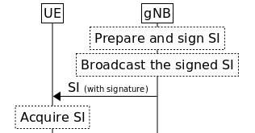
Figure
A.2-1: A high-level example architecture for signed SI messages
The
steps in simplistic terms are described below:
- The gNB prepares and signs
the SI message.
- The gNB sends the signed SI
message.
- The UE acquires the signed
SI message.
- The UE verifies the
signature contained in the acquired SI message.
A.3 Aspects that need
to be addressed
A.3.1 UE Aspects
Void
A.3.2 UE actions upon
detection of invalid signature
NOTE: it
is not addressed in the present document the following: - in absence
of proper recovery action on UE side, benefits of having signed SI
messages could be questionable
A.3.3 Threats that
are mitigated by signed SI messages
Void
A.3.4 Threats that
are not mitigated by signed Si messages
Void
A.3.5 Provisioning of
keys
Void
A.3.6 RAN aspects
Void
A.3.7 VPLMN aspects
Void
A.3.8 HPLMN aspects
Void
A.3.9 Network sharing
aspects
Void
A.3.10 Roaming
aspects
Void
A.3.11 Regulatory
aspects
Void
A.3.12 Signature
schemes
There
could one or more signature schemes like:
- Scheme A
(null-scheme)
- It means that there is no
signature.
A.3.13 Signature
length
Void
A.3.14 Resistance
against Quantum Computing
Quantum
computers will severely affect digital signing algorithm based on
factoring, discrete logarithms, and elliptic curve cryptography [29]
such as RSA or ECDSA. Therefore, resistance against quantum computing
requires using quantum resistant solutions. Quantum resistant
signature algorithms have bigger public keys and signatures than
ECDSA or RSA as reflected in Table 6.20.3.14-1, which includes the
key sizes of three of the existing signature algorithms with their
smallest security parameters. These bigger key/signature sizes might
affect the choice/performance of the solution once the solution (or
other digital signature solutions) is required to start using
quantum-resistant signature algorithms.
Table
A.3.14-1
Algorithm
|
Public
key size
|
Signature
size
|
Source
|
Dilithium
|
1312
bytes
|
2420
bytes
|
https://pq-crystals.org/dilithium/index.shtml
|
Falcon
|
897
bytes
|
666
bytes
|
https://falcon-sign.info/
|
Rainbow
|
58.8
kB
|
66
bytes
|
https://www.pqcrainbow.org/
|
Annex B:
Taxonomy
of attacks against 5G UE over radio interfaces
B.1 Introduction
Each
key issue in clause 5 has its own threat analysis. However, it is not
immediately clear how the threats identified in those key issues are
related to each other or to other known attacks that may have been
mitigated in 5G.
This
clause describes a taxonomy of attacks against 5G UEs over the radio
interfaces, including the threats identified in clause 5. Other
threats that may have been mitigated by other security enhancements
in 5G are also included here to show how the threats identified in
this study are related to the overall landscape of attacks against 5G
UE over the radio interfaces.
The
attack taxonomy is presented in the form of a tree structure to show
the relationship among the attacks. For example, it shows that
authentication relay attacks are a subset of Man-in-the-Middle (MITM)
attacks. Note that the attack taxonomy tree itself is not an attack
tree by classic definition.
This
attack taxonomy allows understanding what attacks are possible, what
attacks can be mitigated by a particular protection, and what attacks
remain even with new security protections.
For
example, this attack taxonomy can serve as a tool to track which
countermeasures or solutions would need to be implemented together in
order to mitigate those attack vectors with a high risk. An attacker
is not bound to one particular path of attack, but usually chooses
whichever way is easiest to achieve its goal.
B.2 Attack taxonomy
B.2.1.0 General
The
attacks against 5G UEs over radio interfaces can be classified into
two categories, active attacks and passive attacks. In active
attacks, an attacker actively injects signal or messages to influence
what UE would receive. In passive attacks, an attacker silently
sniffs signals exchanged between a UE and a gNB.
For
the convenience of reference, a number is assigned to each attack in
the attack taxonomy tree. In attack description, an active attack is
prefixed with "A-" and a passive attack is prefixed with
"P-". This can help distinguish an attack number from a
clause number.
NOTE: the attacks in Figure
B.2-1 consists of threats identified in the present document and
other threats that either have been addressed in 5G (e.g., with SUPI
encryption and UPIP) or being studied in other documents. How to
further differentiate these types of threats in the Figure is not
addressed in the present document
The root node of the attack
taxonomy tree is the general category of all attacks under
consideration. A leaf node is an actual attack. An intermediate node
is a subcategory of attacks, an actual attack, or a step leading to
another attack.
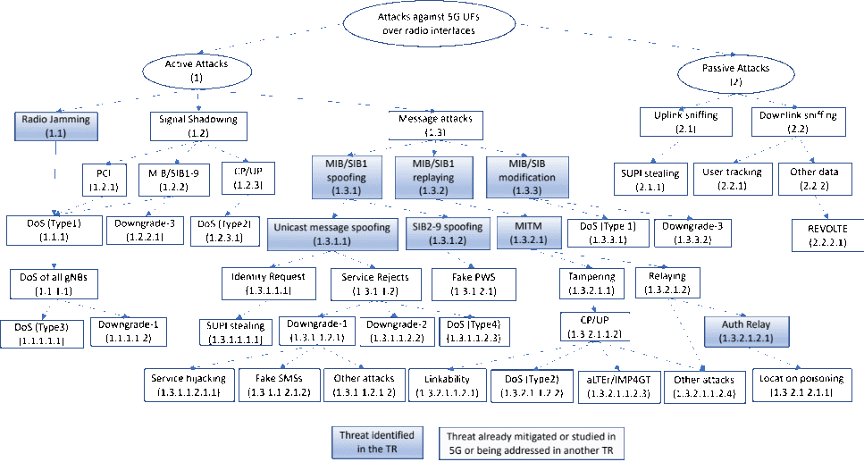
Figure
B.2-1: Taxonomy of attacks against 5G UEs over radio interfaces
B.2.1 Active Attacks
B.2.1.0 General
Active
attacks can be classified into three categories: radio jamming,
signal shadowing, and MIB/SIB attacks.
B.2.1.1 Radio Jamming
Radio
Jamming (A-1.1): The attacker jams the frequency band of
broadcastings noise at the frequency that the gNB under attack. This
can be done continuously, or "smart" at certain times only.
DoS
(Type 1) (A-1.1.1): While the attacker is active, the UE is unable to
camp on the attacked cell, due to lack of synchronization.
DoS
of all gNBs (A-1.1.1.1): By broadcasting noise across in the spectrum
of all reachable cells, the UE can't synchronize with any 5G cell.
DoS
(Type 3) (A-1.1.1.1.1): there is no 5G service for the attacked UE.
Downgrade-1
(A-1.1.1.1.2): this is the system level downgrade, and the UE is
forced to camps on a 4G cell (potentially a cell under control of an
attacker). This can lead to 4G attacks, such as identity request, or
service reject for that network.
B.2.1.2 Signal
shadowing
Signal
Shadowing (A-1.2)
Note: refer to overshadow
attack [23].
B.2.1.3 Message
attacks
Message
attacks (A-1.3): By setting up a fake gNB, the attacker is able to
spoof, replay, and tamper with control messages and data plane
traffic under its control. The attack starts by spoofing or replaying
MIB/SIB1.
Note: how to further
re-organize message attacks (A-1.3) is not addressed in the present
document.
MIB/SIB1
spoofing (A-1.3.1): The attacker can originate MIB/SIB1 and control
completely the parameters in the MIB/SIB1.
Unicast
message spoofing (A-1.3.1.1): an attacker originates and sends a
unicast message to a victim UE. For example, the attacker may first
lure the victim UE to camp on it and then send a spoofed unicast
message.
Spoofed
identity request (A-1.3.1.1.1): an attacker originates and sends an
Identity Request message to a victim UE to obtain its identity.
SUPI
stealing (A-1.3.1.1.1.1): an attacker steals the SUPI from a victim
UE, e.g., using a spoofed Identity Request when the SUPI is sent out
without being encrypted
Spoofed
service reject (A-1.3.1.1.2): an attacker originates and sends a
reject message to a victim UE
Downgrade-1
(A-1.3.1.1.2.1): this is also a system level downgrade and the UE is
forced to camps on a 4G cell (potentially a cell under control of an
attacker). This can lead to 4G attacks, such as identity request, or
service reject for that network. The UE may be further downgraded to
3G or 2G
Service
hijacking (A-1.3.1.1.2.1.1): a victim UE may be downgraded to use a
prior generation network that allows an attacker to hijack the
services offered to the UE, e.g., an SMS or incoming call intended to
the victim UE is received by the attacker.
Fake
SMS (A-1.3.1.1.2.2): a victim UE is lured to connect to an attacker
who can then send faked SMS to the victim UE. This attacker often
involves downgrading the victim UE to 2G where SMS can be sent to the
UE without any security protection.
Other
attacks (A-1.3.1.1.2.3): attacks from system level downgrade other
than service hijacking and fake SMS.
Downgrade-2
(A-1.3.1.1.2.2): this is a service level downgrade, and the UE is
forced to use a service of lower grade. For example, the UE may be
forced to fall back to circular switch for a voice call.
DoS
(Type 4) (A-1.3.1.1.2.3): this is a service level DoS. For example, a
victim UE may stop using a particular service, e.g., when receiving a
spoofed service reject message with a 5GMM cause indicating the
service in question is not allowed or overloaded.
SIB2-9
spoofing (A-1.3.1.2): an attacker spoofs an SI from SIB2 to SIB9.
Fake
PWS (A-1.3.1.2.1): an attacker spoofs an SIB6 or SIB7 to send out
fake PWS.
MIB/SIB1
replay (A-1.3.2): The attacker is replaying the MIB/SIB1 of a
legitimate gNB. The UE can communicate with the false gNB (attacker),
but the parameters of air interface are copied from a legitimate gNB
which may or may not be tampered with.
MITM
(A-1.3.2.1): an attacker, connecting to a legitimate gNB, replays its
MIB/SIB1 to lure a victim UE to connect to it. The attacker further
replays the subsequent messages between the victim UE and the
legitimate gNB, with or without tampering the messages. The attacker
usually consists of a false gNB and a false UE, connecting to each
other either locally or remotely.
Tampering
(A-1.3.2.1.1): a MITM attacker tampers with a message before sending
it to the recipient.
Tampering
CP/UP (A-1.3.2.1.1.1): a MITM attacker tampers with control plane
message or user plane packet before sending to the recipient.
Linkability
(A-1.3.2.1.1.1.1): a MITM attacker modifies a message based on
information captured from a previously session and observes the
response to the tampered message to infer the linkage between the
two.
DoS
(Type 2) (A-1.3.2.1.1.2): a MITM can selectively drop or tamper with
message exchanged between a victim UE and a legitimate gNB to cause
service disruption.
aLTEr/IMP4GT
(A-1.3.2.1.1.3): tampering on user plane traffic in LTE due to the
lack of integrity protection.
Other
attacks (A-1.3.2.1.1.4): other potential attacks by a MITM attacker.
Relaying
(A-1.3.2.1.2): a MITM attacker replays messages between a victim UE
and a legitimate gNB without tampering.
Authentication
relaying (A-1.3.2.1.2.1): a MITM attacker replays authentication
related messages without tampering
Location
poisoning (A-1.3.2.1.2.1.1): a MITM attacker replays messages
received from UE in one location (e.g., a tracking area) to a gNB in
another location (e.g., in a different tracking area), resulting in
misunderstanding of the true location of the UE by the network.
MIB/SIB1
modification (A-1.3.3):
DoS
(Type 1) (A-1.3.3.1):
Downgrade-3
(A-1.3.3.1):
B.2.2 Passive Attacks
Passive
attacks can be classified into sniffing of uplink radios and downlink
radios.
P-2.1
Uplink sniffing – an attacker sniffs the radio sent by the UE in
the uplink channel.
P-2.1.1
IMSI/SUPI stealing – an IMSI/SUPI sent by a UE to the network can
be stolen if it is not encrypted.
P-2.2
Downlink sniffing – an attacker sniffs the radio sent by the
network in the downlink channel.
User
tracking (P-2.2.1): an attacker sniffs downlink traffic of a gNB to
observe directly or infer the presence of a user in the area.
Other
data sniffing (P-2.2.2): an attacker sniffs downlink traffic to
obtain other data that might be used for malicious purpose.
Note: descriptions of more
passive attacks are not addressed in the present document.
Annex C:
Change history
Change
history
|
Date
|
Meeting
|
Tdoc
|
CR
|
Rev
|
Cat
|
Subject/Comment
|
New
version
|
2018-11
|
SA3#93
|
S3-183300
|
|
|
|
TR
skeleton
|
0.0.0
|
2018-11
|
SA3#93
|
S3-183799
|
|
|
|
Draft
TR of TR33.809
|
0.1.0
|
2019-02
|
SA3#94
|
S3-190552
|
|
|
|
S3-190274,
S3-190554,
S3-190068,
S3-190555,
S3-190 361
|
0.2.0
|
2019-03
|
SA3#94bis
|
S3-190960
|
|
|
|
S3-190553,
S3-190997, S3-190938, S3-190939, S3-190940, S3-190941, S3-190942,
S3-190943,
S3-190944, S3-190825, S3-190945, S3-190946, S3-190947, S3-180985,
S3-190986, S3-190987, S3-190989,
S3-191021
|
0.3.0
|
2019-05
|
SA3#95
|
S3-191779
|
|
|
|
S3-191195,
S3-191620, S3-191781, S3-191782, S3-191780,S3-191790, S3-191240,
S3-191241, S3-191789
|
0.4.0
|
2019-06
|
SA3#95bis
|
S3-192448
|
|
|
|
S3-192447,
S3-192410, S3-192449
|
0.5.0
|
2019-08
|
SA3#96
|
S3-193176
|
|
|
|
S3-193173
|
0.6.0
|
2019-10
|
S3#96adhoc
|
S3-193752
|
|
|
|
S3-193329,
S3-193331, S3-193334, S3-193488, S3-193576, S3-193602, S3-193753,
S3-193754, S3-193756, S3-193757, S3-193759, S3-193760, S3-193836,
S3-193837, S3-193845, S3-193846
|
0.7.0
|
2019-11
|
SA3#97
|
S3-194684
|
|
|
|
S3-194144,
S3-194667, S3-194668, S3-194683, S3-194685, S3-194686, S3-194688,
S3-194690
|
0.8.0
|
2020-05
|
SA3#99-e
|
S3-201476
|
|
|
|
S3-201475,
S3-200995, S3-200996, S3-200997, S3-201459, S3-201463
|
0.9.0
|
2020-08
|
SA3#100-e
|
S3-202150
|
|
|
|
S3-201555,
S3-201636,
S3-201635r1(revised
to S3-202223),
S3-201592r5(revised
to S3-202161),
S3-201637r3(revised
to S3-202226),
S3-201638r2(revised
to S3-202227),
S3-202009r1(revised
to S3-202108),
S3-202016r3(revised
to S3-202142),
S3-202026r1(revised
to S3-202109)
|
0.10.0
|
2020-10
|
SA3#100bis-e
|
S3-202740
|
|
|
|
S3-202603r4
(revised to S3-202782),
S3-202467
S3-202542,
S3-202543,
S3-202558,
S3-202691,
S3-202699
S3-202717
S3-202718,
S3-202719,
S3-202720,
S3-202737
S3-202738
|
0.11.0
|
2020-11
|
SA3#101-e
|
S3-203447
|
|
|
|
S3-202866,
S3-202893r2
S3-203310r1
S3-202983r3(revised
to S3-203364)
S3-203158
S3-203160
S3-203007
S3-203008r1(revised
to S3-203452)
|
0.12.0
|
2020-12
|
SA3#101-e
|
|
|
|
|
Review
by EditHelp and MCC
|
0.12.1
|
2021-01
|
SA3#102-e
|
S3-210778
|
|
|
|
S3-210150
S3-210212
S3-210518
S3-210131r2(revised
to S3-210783)
S3-210132r2
(revised to S3-210784)
|
0.13.0
|
2021-03
|
SA3#102bis-e
|
S3-211345
|
|
|
|
S3-211028,
S3-211116, S3-211235, S3-211261, S3-211329
|
0.14.0
|
2021-05
|
SA3#103-e
|
S3-212351
|
|
|
|
S3-211522
S3-212358
S3-212356
S3-212357
S3-212283
|
0.15.0
|
2021-08
|
SA3#104-e
|
S3-213244
|
|
|
|
S3-213259
S3-212520
S3-213210
S3-213238
S3-213240
S3-213241
S3-213242
S3-213243
|
0.16.0
|
2021-11
|
SA3#105-e
|
S3-214408
|
|
|
|
S3-214392
S3-214379
|
0.17.0
|
2022-02
|
SA3#106-e
|
S3-220484
|
|
|
|
S3-220490
S3-220306
S3-220307
|
0.18.0
|
2022-05
|
SA3#107-e
|
S3-221266
|
|
|
|
S3-221072
S3-220714
S3-220715
S3-220716
|
0.19.0
|
2023-05
|
SA#100
|
SP-230570
|
|
|
|
Presented
for information and approval
|
1.0.0
|
2023-06
|
SA#100
|
|
|
|
|
Upgrade
to change control version
|
18.0.0
|
2023-06
|
SA#100
|
|
|
|
|
EditHelp
review
|
18.0.1
|
2023-09
|
SA#101
|
SP-230890
|
0001
|
2
|
F
|
CR
for clean up of TR 33.809
|
18.1.0
|